1권 원리편 · 조판 시험본 v1 (흑백)
이광조 · 과학과영성출판사
이 장의 출발점 에너지는 들어오고 나가며, 남은 만큼 몸에 쌓인다. 이 단순한 계산이 어떻게 한 세기 동안 약물 개발자들을 좌절시켰는지, 그리고 그 좌절에서 무엇을 배웠는지를 본다. 이 장은 2권 「세포에너지대사학」의 1장(에너지란 무엇인가)과 17장(식후 대사 에너지), 22장(공복의 시간표)으로 이어진다.
우리 몸은 하루에도 수없이 에너지를 받아들이고 내보낸다. 밥을 먹으면 탄수화물, 지방, 단백질이 들어오고, 그 화학에너지는 숨 쉬고, 체온을 유지하고, 걷고, 소화하는 데 쓰인다. 쓰고 남은 에너지는 버려지지 않는다. 몸은 남은 에너지를 지방조직(adipose tissue) 에 중성지방(triglyceride) 의 형태로 저장한다. 중성지방은 글리세롤 한 분자에 지방산 세 분자가 붙은 구조로, 같은 무게로 비교하면 글리코겐보다 훨씬 많은 에너지를 담을 수 있는 저장 형태다.
그림 1-2는 이 관계를 개념도로 나타낸 것이다. 왼쪽 위의 섭취 에너지는 지방조직으로 들어가고, 지방조직은 필요할 때 오른쪽 위의 소비 에너지로 쓰인다. 아래쪽에는 이 흐름을 조절하는 두 층이 있다. 하나는 렙틴, 인슐린, 인크레틴 같은 호르몬 신호이고, 다른 하나는 이 신호를 받아 식욕과 에너지 소비를 조정하는 시상하부(hypothalamus) 다. 이 그림에서 눈여겨볼 곳은 폐곡선이다. 지방조직이 늘면 호르몬 신호가 바뀌고, 신호가 바뀌면 시상하부가 섭취와 소비를 다시 조정한다. 비만이 어려운 이유는 이 되먹임 회로가 체중을 낮추려는 시도에 저항하도록 짜여 있기 때문이다. 이 회로의 구성 요소를 하나씩 해부하는 것이 이 책 전체의 일이다.
그림 1-2. 에너지 수지의 개념도. 섭취, 저장, 소비의 흐름과 이를 조절하는 호르몬 신호·시상하부의 되먹임 고리를 나타낸 개념도다. 정량 자료가 아니다.
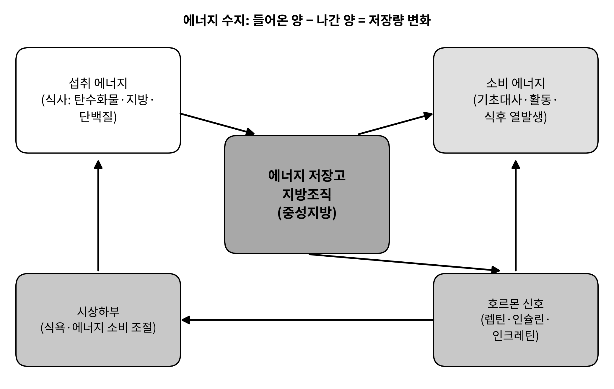
에너지 수지를 정량으로 다룬 대표적인 연구가 Hall 등(2011)의 모형이다. 이들은 섭취와 소비의 차이가 체중을 어떻게 바꾸는지를 수학 모형으로 계산하여, 흔히 말하는 “지방 1kg은 약 7,700kcal”라는 단순 규칙이 장기 체중 변화를 과대 예측한다는 점을 보였다. 체중이 줄면 에너지 소비도 함께 줄기 때문이다. 이 사실은 뒤의 여러 장에서 거듭 등장한다. 체중 감량이 정체기에 이르는 것은 의지의 문제가 아니라 생리의 문제이고, 약물이 풀어야 할 과제도 여기에 있다.
비만의 규모는 이미 개인의 문제를 넘어섰다. 세계 성인 비만 유병률은 1990년 이후 크게 늘었고, 2022년에는 10억 명이 넘는 사람이 비만 상태에 있다고 추정된다(NCD Risk Factor Collaboration, 2024). 이런 규모에서 약물은 오래전부터 가장 기대를 받은 해법이면서, 가장 많이 실패한 해법이기도 했다.
비만 약물의 역사에서 가장 극적인 첫 장면은 1930년대 미국 스탠퍼드대학에서 벌어졌다. 제1차 세계대전 때 군수공장에서 폭약 재료인 디니트로페놀(2,4-dinitrophenol, DNP) 을 다루던 노동자들이 체온이 오르고 땀을 흘리며 살이 빠진다는 사실이 보고되어 있었다. Tainter와 동료들은 이 물질을 환자에게 투여해 보았고, 기초대사율이 크게 오르면서 체중이 줄어드는 것을 관찰했다(Cutting et al., 1933). 당시에는 작용 원리가 알려지지 않았다. 훗날 DNP가 미토콘드리아 내막에서 양성자를 통과시켜 ATP 합성효소(ATP synthase) 를 거치지 않고 열로 에너지를 흘려버리는 탈공역제(uncoupler) 임이 밝혀졌다. 먹은 에너지를 ATP로 바꾸지 않고 열로 태워 없애는 약이었던 셈이다. 이 원리는 2권 10~13장에서 미토콘드리아의 화학삼투 이론과 함께 자세히 설명한다.
DNP는 체중을 줄였지만 용량 안전역이 좁았다. 체온이 조절 범위를 넘으면 고열과 사망으로 이어졌고, 백내장과 피부 발진, 말초신경 장애 등도 보고되었다. 이 약은 1938년 미국에서 시장에서 사라졌다. 이 사건의 교훈은 단순하다. 에너지 소비를 높이는 방향은 맞았지만, 모든 세포의 미토콘드리아를 동시에 건드리면 어떤 조직에서든 조절 불능이 생길 수 있다. 오늘날 UCP1을 가진 갈색지방만 선택적으로 겨냥하려는 연구가 계속되는 이유가 여기에 있다.
DNP 이후 약물 개발은 소비를 늘리는 쪽에서 섭취를 줄이는 쪽으로 방향을 틀었다. 1930년대 후반에 암페타민(amphetamine) 이 식욕을 억제한다는 임상 보고가 나왔고, 이후 수십 년 동안 암페타민 계열과 그 유도체가 체중 감량 목적으로 널리 처방되었다. 효과는 있었으나 중추신경 흥분, 불면, 의존이라는 대가가 따랐다.
1960년대에는 아미노렉스(aminorex) 라는 식욕억제제가 유럽 일부 국가에서 판매되었다. 이 약을 복용한 사람들 사이에서 폐동맥고혈압(pulmonary arterial hypertension) 이 이례적으로 늘어나자 약은 시장에서 회수되었다. 이 일은 한 가지 사실을 처음 보여 주었다. 식욕을 누르려고 뇌의 모노아민 신호를 바꾸는 약은 폐 혈관 같은 말초 조직에서도 같은 수용체를 건드릴 수 있다는 것이다. 이 교훈은 곧 더 큰 규모로 반복되었다.
1990년대 초 미국에서는 비만 약물에 대한 기대가 다시 높아졌다. 펜플루라민(fenfluramine) 은 뇌의 세로토닌 신경말단에서 세로토닌을 방출시키고 재흡수를 막아 포만감을 높이는 약이고, 펜터민(phentermine) 은 카테콜아민 계열 자극제였다. 두 약을 함께 쓰는 “펜-펜(fen-phen)” 요법은 성공적인 조합으로 소개되어 1990년대 중반 미국에서만 수백만 건의 처방이 이루어졌다. 이후 펜플루라민의 오른손 이성질체인 덱스펜플루라민(dexfenfluramine) 도 1996년 미국에서 승인되었다.
1997년, 미국 메이오 클리닉의 심장내과 의사 Heidi Connolly와 동료들이 이상한 패턴을 발견했다. 펜-펜을 복용한 여성들에게서 정상적이지 않은 심장판막 질환이 나타난 것이다. 그들은 24명의 환자를 보고했는데, 이 환자들은 심초음파에서 대동맥판과 승모판 등에 판막 역류가 있었고, 병리 소견에서는 판막 표면에 섬유증식이 덮여 있었다(Connolly et al., 1997). 이 판막의 모습은 종양에서 분비된 세로토닌이 과다한 카르시노이드 증후군(carcinoid syndrome) 환자의 심장판막과 닮아 있었다. 연구자들은 여기서 단서를 얻었다. 세로토닌 신호를 과하게 켜는 일이 판막 섬유증식을 일으킨다는 가설이다.
그 가설을 분자 수준에서 확인한 것이 Rothman 등(2000)의 연구다. 이들은 펜플루라민 자체가 아니라 그 대사체인 노르펜플루라민(norfenfluramine) 이 세로토닌 2B 수용체(5-hydroxytryptamine receptor 2B, 5-HT2B) 에 강하게 결합하여 활성화시킨다는 것을 시험관 실험에서 보였다. 판막의 섬유모세포는 5-HT2B를 가지고 있고, 이 수용체가 지속적으로 자극되면 세포 증식이 일어난다. 결국 식욕을 낮추기 위해 겨냥한 뇌의 세로토닌 경로와, 판막에 병을 일으킨 말초의 세로토닌 수용체는 같은 신호 체계의 다른 가지였다. 펜플루라민과 덱스펜플루라민은 1997년 시장에서 철수되었다.
이 사건에서 얻은 중요한 교훈은 약의 수용체 선택성(receptor selectivity) 이다. 표적 수용체 하나를 켜는 것으로 충분하지 않고, 비슷한 계열의 다른 수용체를 건드리지 않는다는 것을 전 수용체 수준에서 확인해야 한다. 이 확인은 오늘날 약물 개발 초기 단계의 필수 절차가 되었다. 3권에서 다룰 분자 도킹과 선택성 예측은 이 요구에서 출발한다.
1990년대 후반 이후에도 신약은 이어졌다. 시부트라민(sibutramine) 은 세로토닌과 노르에피네프린의 재흡수를 함께 막는 약으로 1997년 미국에서 승인되었다. 체중 감량 효과는 분명했지만, 혈압과 맥박을 올리는 작용이 있었다. 이를 확인하기 위해 설계된 대규모 시험이 SCOUT(Sibutramine Cardiovascular Outcomes) 시험이었다. 이 시험은 심혈관 위험이 높은 과체중·비만 성인 9,804명을 대상으로 했고, 시부트라민군에서 비치명적 심근경색과 뇌졸중을 포함한 주요 심혈관 사건의 위험이 위약군보다 높게 나왔다(위험비 1.16)(James et al., 2010). 시부트라민은 2010년에 시장에서 철수되었다.
리모나반트(rimonabant) 는 전혀 다른 표적을 겨냥했다. 대마초가 식욕을 높이는 현상에서 출발하여, 뇌의 칸나비노이드 1형 수용체(cannabinoid receptor type 1, CB1) 를 막으면 식욕이 줄 것이라는 가설이다. 이 약은 2006년 유럽에서 승인되었으나, 불안과 우울 같은 정신과 이상반응이 보고되었다. Christensen 등(2007)은 무작위 대조시험을 합친 메타분석에서 리모나반트를 복용한 사람들이 위약군보다 우울과 불안 같은 정신과 이상반응을 더 많이 겪는다는 것을 보였다. 약은 2008년 유럽에서 철수되었다. CB1 수용체는 시상하부에만 있는 것이 아니라 편도체, 해마를 포함한 뇌 전반에 분포하기 때문에, 식욕 조절 회로만 선택적으로 막을 수 없었던 것이다.
로카세린(lorcaserin) 은 펜플루라민의 교훈을 반영하여 5-HT2C 수용체(5-hydroxytryptamine receptor 2C) 에 선택적인 작용제로 설계되었고, 2012년 승인되었다. 5-HT2B와 5-HT2A에 대한 선택성을 높이는 것이 설계 목표였다. 대규모 안전성 시험인 CAMELLIA-TIMI 61에서는 심혈관 안전성 비열등성이 확인되었다(Bohula et al., 2018). 그러나 이후 암 발생 신호가 제기되었고, 약은 2020년 미국 시장에서 철수되었다. 선택성을 개선해도, 장기 사용 시 예상하지 못한 안전성 문제가 나타날 수 있다는 점을 보여 준 사례다.
그림 1-1은 이 약물들의 판매 기간을 연도별로 나열한 것이다. 막대의 왼쪽 끝은 출시 시점, 오른쪽 끝은 철수 시점이다. 이 그림에서 두 가지가 읽힌다. 첫째, 막대의 길이는 대체로 수년에서 십여 년이다. 시장에 나와 사용된 기간이 충분했지만, 문제는 승인 전 시험에서 잡히지 않고 출시 후에 드러났다는 뜻이다. 둘째, 1994년의 점선(렙틴 클로닝)을 기준으로 보면, 이 점선 이후에도 철수는 계속되었다. 호르몬 하나가 발견되어도 신약은 바로 나오지 않았다.
그림 1-1. 20세기 이후 주요 비만 약물의 시장 사용 기간. 각 막대는 대표 약물의 시장 사용 시작과 종료 연도를 나타낸다. 시점은 근사값을 포함하며 장 끝 검증 목록에 정리했다. (자료: 그림 데이터 figures/data/fig1-1-timeline.csv)
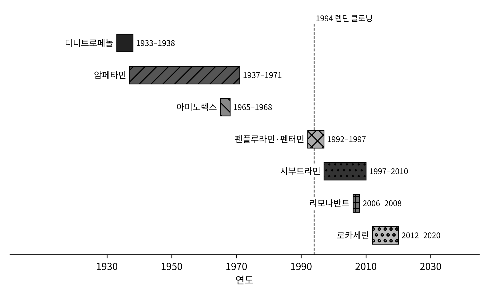
표 1-1은 같은 약물을 작용 표적과 실패 원인으로 비교한 것이다.
표 1-1. 초기 비만 약물의 표적과 철수 원인.
| 약물 | 표적·기전 | 철수·규제 시기 | 핵심 문제 |
|---|---|---|---|
| 디니트로페놀 | 미토콘드리아 탈공역 | 1930년대 후반 | 고열, 좁은 안전역 |
| 아미노렉스 | 모노아민 방출 | 1960년대 후반 | 폐동맥고혈압 |
| 펜플루라민·덱스펜플루라민 | 세로토닌 방출 | 1997년 | 심장판막 질환(5-HT2B) |
| 시부트라민 | 세로토닌·노르에피네프린 재흡수 억제 | 2010년 | 심혈관 사건 증가 |
| 리모나반트 | CB1 수용체 차단 | 2008년 (유럽) | 우울·불안 |
| 로카세린 | 5-HT2C 선택 작용 | 2020년 | 암 발생 신호 |
표를 읽는 방법은 간단하다. 오른쪽 열의 문제를 왼쪽 열의 표적과 연결해 보면, 거의 모든 사례에서 문제는 표적이 몸 전체에 퍼져 있다는 사실에서 나온다. 세로토닌 수용체는 뇌, 판막, 폐, 장에 모두 있고, CB1 수용체는 뇌 전반에, 미토콘드리아는 모든 세포에 있다. 이 표가 이 책 전체에서 되풀이될 질문을 만든다. 식욕과 에너지 소비를 조절하면서도 다른 조직에서는 조용한 표적이 있는가?
약물이 실패를 거듭하는 동안, 기초과학은 다른 질문에 도달해 있었다. 몸은 자기 지방의 양을 어떻게 아는가?
1950년 미국 잭슨 연구소의 Ingalls 등은 실험실 마우스 집단에서 극단적으로 살이 찐 돌연변이 마우스를 발견하여 obese(ob)라 이름 붙였다(Ingalls et al., 1950). 뒤이어 다른 계통에서는 diabetes(db) 마우스가 발견되었다. 두 마우스는 모두 살이 쪘지만, 원인이 같은지는 알려져 있지 않았다. 이 질문에 답한 것이 1970년대 Douglas Coleman의 병체결합(parabiosis) 실험이다. 두 마리의 혈액 순환을 수술로 연결하면 한쪽에 있는 순환 인자가 다른 쪽으로 넘어간다. Coleman은 ob 마우스를 정상 마우스와 연결하면 ob 마우스의 체중이 줄고, db 마우스를 정상 마우스와 연결하면 정상 마우스가 굶어 죽는다는 것을 보였다(Coleman, 1973). 해석은 이렇다. ob 마우스는 포만 신호 물질을 만들지 못하는 것이고, db 마우스는 그 신호를 받는 수용체가 고장 난 것이다. 결국 혈액에는 지방의 양을 알려 주는 호르몬이 있어야 한다는 예측이 나왔다.
그 호르몬을 찾는 데는 20년 넘게 걸렸다. 1994년 록펠러대학의 Jeffrey Friedman 연구실에서 Yiying Zhang 등이 ob 유전자를 위치 클로닝으로 분리하고 사람의 대응 유전자도 확인했다(Zhang et al., 1994). 이 유전자가 만드는 단백질이 렙틴(leptin) 이다. 이름은 그리스어로 “가늘다”를 뜻하는 leptos에서 왔다. 지방세포가 지방량에 비례하여 렙틴을 분비하고, 렙틴은 시상하부에 도달해 식욕을 낮춘다. 1997년에는 렙틴 유전자에 변이가 있어 어릴 때부터 심한 비만이 나타나는 사람이 보고되었다(Montague et al., 1997). 이로써 마우스의 유전 현상이 사람에게도 성립한다는 것이 확인되었다.
렙틴 발견은 비만 연구의 방향을 바꾸었다. 비만은 의지의 문제가 아니라 신호 체계의 문제일 수 있게 된 것이다. 그러나 약으로는 기대에 미치지 못했다. 대부분의 비만 환자는 렙틴 농도가 이미 높았고, 렙틴을 더 주사해도 체중이 줄지 않았다. 이를 렙틴 저항성(leptin resistance) 이라 한다. 렙틴 결핍이 원인인 희귀 비만에서만 렙틴 치료가 극적으로 작용했다. 이 사건은 이 책의 중요한 대비를 마련한다. 한 신호 경로를 발견하는 것과 그 경로를 약으로 바꾸는 것 사이에는 큰 거리가 있다. 이 거리를 메운 사례가 2장에서 다룰 인크레틴이다.
앞의 사례들을 한꺼번에 놓고 보면 몇 가지 원칙이 보인다. 이 원칙들은 이 책이 3권에서 신약 설계를 다룰 때 점검표로 되돌아온다.
첫째, 표적의 조직 분포를 먼저 확인한다. 표적이 뇌 한 곳에서만 일하는지, 심장과 폐에서도 발현되는지는 설계 이전에 알 수 있다. 이 질문에는 GTEx 같은 공개 발현 데이터가 쓰인다(3권 6장).
둘째, 수용체 선택성을 같은 계열 전체에서 시험한다. 펜플루라민의 5-HT2B 문제는 처음부터 수용체 패널 시험을 했다면 확인할 수 있었던 일이다.
셋째, 장기 안전성은 시간이 지나야 보인다. 로카세린의 암 신호는 승인 후 대규모 시험에서 나타났다. 약을 설계하는 단계부터 장기 추적을 전제하여 위험 신호를 계량하는 틀이 필요하다.
넷째, 체중 감량의 생리적 저항을 고려한다. 체중이 줄면 에너지 소비가 낮아지고 식욕은 오른다. 표적 하나로 식욕만 누르면 몸이 다른 경로로 보상한다. 이 점이 이후 여러 호르몬을 동시에 겨냥하는 이중·삼중 작용제의 근거가 된다.
다음 장에서는 이 문제들을 한꺼번에 푼 것처럼 보이는 분자, 글루카곤유사펩타이드-1(glucagon-like peptide-1, GLP-1) 의 이야기를 시작한다. 위장관 호르몬이 어떻게 발견되었고, 왜 처음에는 약이 될 수 없었으며, 어떤 분자 설계가 이를 바꾸었는지를 따라간다.
Bohula, E. A., Wiviott, S. D., McGuire, D. K., Inzucchi, S. E., Kuder, J., Im, K., Fanola, C. L., Qamar, A., Brown, C., Budaj, A., Garcia-Castillo, A., Gupta, M., Leiter, L. A., Weerakkody, G. J., Sattar, N., Bays, H. E., Kozlovski, P., … Scirica, B. M. (2018). Cardiovascular safety of lorcaserin in overweight or obese patients. New England Journal of Medicine, 379(12), 1107–1117. https://doi.org/10.1056/NEJMoa1808721
Christensen, R., Kristensen, P. K., Bartels, E. M., Bliddal, H., & Astrup, A. (2007). Efficacy and safety of the weight-loss drug rimonabant: A meta-analysis of randomised trials. The Lancet, 370(9600), 1706–1713. https://doi.org/10.1016/S0140-6736(07)61721-8
Coleman, D. L. (1973). Effects of parabiosis of obese with diabetes and normal mice. Diabetologia, 9(4), 294–298. https://doi.org/10.1007/BF01221857
Connolly, H. M., Crary, J. L., McGoon, M. D., Hensrud, D. D., Edwards, B. S., Edwards, W. D., & Schaff, H. V. (1997). Valvular heart disease associated with fenfluramine–phentermine. New England Journal of Medicine, 337(9), 581–588. https://doi.org/10.1056/NEJM199708283370901
Cutting, W. C., Mehrtens, H. G., & Tainter, M. L. (1933). Actions and uses of dinitrophenol: Promising metabolic applications. JAMA, 101(3), 193–195.
Hall, K. D., Sacks, G., Chandramohan, D., Chow, C. C., Wang, Y. C., Gortmaker, S. L., & Swinburn, B. A. (2011). Quantification of the effect of energy imbalance on bodyweight. The Lancet, 378(9793), 826–834. https://doi.org/10.1016/S0140-6736(11)60812-X
Ingalls, A. M., Dickie, M. M., & Snell, G. D. (1950). Obese, a new mutation in the house mouse. Journal of Heredity, 41(12), 317–318.
James, W. P. T., Caterson, I. D., Coutinho, W., Finer, N., Van Gaal, L. F., Maggioni, A. P., Torp-Pedersen, C., Sharma, A. M., Shepherd, G. M., Rode, R. A., & Renz, C. L. (2010). Effect of sibutramine on cardiovascular outcomes in overweight and obese subjects. New England Journal of Medicine, 363(10), 905–917. https://doi.org/10.1056/NEJMoa1003114
Montague, C. T., Farooqi, I. S., Whitehead, J. P., Soos, M. A., Rau, H., Wareham, N. J., Sewter, C. P., Digby, J. E., Mohammed, S. N., Hurst, J. A., Cheetham, C. H., Earley, A. R., Barnett, A. H., Prins, J. B., & O’Rahilly, S. (1997). Congenital leptin deficiency is associated with severe early-onset obesity in humans. Nature, 387(6636), 903–908. https://doi.org/10.1038/43185
NCD Risk Factor Collaboration. (2024). Worldwide trends in underweight and obesity from 1990 to 2022: A pooled analysis of 3663 population-representative studies with 222 million children, adolescents, and adults. The Lancet, 403(10431), 1027–1050. https://doi.org/10.1016/S0140-6736(23)02750-2
Rothman, R. B., Baumann, M. H., Savage, J. E., Rauser, L., McBride, A., Hufeisen, S. J., & Roth, B. L. (2000). Evidence for possible involvement of 5-HT2B receptors in the cardiac valvulopathy associated with fenfluramine and other serotonergic medications. Circulation, 102(23), 2836–2841. https://doi.org/10.1161/01.CIR.102.23.2836
Zhang, Y., Proenca, R., Maffei, M., Barone, M., Leopold, L., & Friedman, J. M. (1994). Positional cloning of the mouse obese gene and its human homologue. Nature, 372(6505), 425–432. https://doi.org/10.1038/372425a0
이 장의 출발점 1장에서 우리는 식욕과 에너지 소비를 건드리는 약이 왜 번번이 실패했는지 보았다. 이 장은 장(腸)이 보내는 호르몬 신호에서 출발한 약이 어떻게 이 실패의 고리를 끊었는지를 따라간다. 이 장의 호르몬은 2권 17장(식후 대사 에너지)에서 식후 상태를 조절하는 핵심 신호로 다시 등장한다.
호르몬이라는 개념은 한 실험에서 태어났다. 1902년 런던 유니버시티 칼리지의 William Bayliss와 Ernest Starling은 마취한 개의 십이지장 점막을 산으로 처리해 분쇄한 추출물을 혈관에 주사하면 췌장이 소화액을 분비한다는 것을 보였다(Bayliss & Starling, 1902). 신경이 끊어진 상태에서도 반응이 일어났으므로, 장이 혈액을 통해 췌장에 화학 신호를 보낸다는 결론이 나왔다. 이들은 이 물질을 세크레틴(secretin) 이라 불렀고, 1905년 Starling이 이런 물질들을 통틀어 “호르몬(hormone)”이라 부르자고 제안했다. 장이 단순한 소화관이 아니라 내분비 기관이라는 발상이 여기서 시작되었다.
이 발상은 곧 당뇨병과 연결되었다. 1906년 Moore 등은 장 점막 추출물을 당뇨 환자에게 먹이면 소변 당이 줄지 않을까 하는 시도를 했다. 결과는 성공적이지 않았지만, 장에서 혈당을 낮추는 물질이 나올 수 있다는 가설은 이후 수십 년 동안 살아남았다. 1920~30년대에는 장 추출물이 혈당을 낮춘다는 보고가 이어졌고, 1932년 La Barre는 이 가설적 물질을 “인슐린을 자극하는 장 호르몬”이라는 뜻으로 인크레틴(incretin) 이라 이름 붙였다. 이름은 붙었으나 정체는 이후 30년 넘게 알려지지 않았다.
결정적인 단서는 1960년대에 나왔다. 포도당을 입으로 먹을 때와 정맥으로 주사할 때를 비교하는 단순한 실험이다. 혈중 포도당 농도를 두 방법에서 똑같이 만들어도, 먹은 경우의 인슐린 분비가 훨씬 컸다. Elrick 등(1964)과 McIntyre 등(1964)이 독립적으로 이 결과를 보고했다. 포도당이 같은데 인슐린이 다르다면, 입으로 들어간 포도당이 장을 지나면서 무언가 다른 신호를 만들어 췌장의 β세포에 전달한다는 뜻이다. 이 차이를 인크레틴 효과(incretin effect) 라 부른다. 건강한 사람에서 경구 포도당 부하 시 인슐린 분비의 상당 부분(대략 절반 이상)이 이 효과에서 나온다는 것이 이후 연구의 정설이 되었다.
이 현상은 이 책의 큰 주제와 맞닿아 있다. 몸은 먹은 음식이 장에 도착하는 순간 이미 그 사실을 췌장, 뇌, 위에 알린다. 먹은 뒤의 몸이 어떻게 달라지는가에 대한 이야기는 2권 17장에서 자세히 다룬다.
이 효과를 일으키는 물질로 처음 분리된 것이 포도당 의존성 인슐린 분비 자극 폴리펩타이드(glucose-dependent insulinotropic polypeptide, GIP) 다. 1971년 John Brown 등이 돼지 장 추출물에서 위산 분비를 억제하는 펩타이드로 처음 분리했고, 이후 포도당이 있을 때 인슐린 분비를 자극한다는 것이 밝혀지면서 현재의 이름을 얻었다. 그러나 GIP는 당뇨병 환자에서 인슐린 분비 효과가 약해져 있어 당뇨병 치료제로 쓰기에는 매력이 적었다. 이 점은 훗날 티르제파타이드의 설계에서 의외의 반전을 맞는다.
두 번째 인크레틴의 발견은 분자생물학의 이야기다. 1980년대 초 Graeme Bell 등은 혈당을 올리는 호르몬 글루카곤(glucagon) 의 전구체 유전자를 햄스터에서 복제했다. 놀랍게도 프로글루카곤(proglucagon) 이라는 하나의 전구체 단백질이 글루카곤 하나만이 아니라 글루카곤과 비슷한 서열을 가진 펩타이드를 두 개 더 포함하고 있었다(Bell et al., 1983). 글루카곤과 닮았다는 뜻에서 이들을 글루카곤유사펩타이드-1과 -2(glucagon-like peptide-1, GLP-1; glucagon-like peptide-2, GLP-2) 라 부르게 되었다.
처음에는 이 펩타이드의 기능을 아무도 몰랐다. 1987년 Mojsov, Weir, Habener는 GLP-1의 한 형태인 GLP-1(7–37) 이 관류시킨 쥐 췌장에서 인슐린 분비를 강하게 자극한다는 것을 보였다(Mojsov et al., 1987). 같은 해 Drucker 등(1987)은 배양한 췌장 세포에서, Kreymann 등(1987)은 사람 실험에서 같은 결과를 확인했다. 이 펩타이드의 번호 7–37은 전구체에서 잘려 나온 활성형의 위치를 가리킨다. 첫 여섯 개의 아미노산이 떨어져 나간 뒤에야 활성이 나타난다.
이 발견이 중요했던 이유는 GLP-1이 포도당 의존적으로만 인슐린을 분비시킨다는 점 때문이다. 혈당이 정상이면 효과가 작아지므로, 인슐린 주사나 설폰요소제의 약점이었던 저혈당 위험이 낮을 것이라는 기대가 생겼다. 1993년 Nauck 등은 제2형 당뇨병 환자에게 GLP-1(7–36 amide)을 정맥 주입했을 때 공복 고혈당이 정상화된다고 보고했다(Nauck et al., 1993). 약으로서의 가능성은 이제 증명되었다. 문제는 그 분자를 약으로 쓸 수 없다는 것이었다.
천연 GLP-1은 혈중에서 반감기가 몇 분에 지나지 않는다. 혈액 속 효소 디펩티딜 펩티데이스-4(dipeptidyl peptidase-4, DPP-4) 가 펩타이드 N-말단에서 두 번째 위치의 알라닌 뒤를 잘라 7번과 8번 아미노산을 떼어 내면 활성이 사라지고, 신장에서도 빠르게 제거된다. 하루 한 번의 주사로는 약이 될 수 없었다. 환자가 연속으로 주입받는 방법 외에는 쓸 수 없는 분자였던 셈이다.
이 문제를 푸는 길은 두 갈래였다. 하나는 DPP-4 효소 자체를 막는 약(시타글립틴 등)이고, 다른 하나는 DPP-4에 잘리지 않는 GLP-1 유사체를 설계하는 것이다. 이 책은 두 번째 길을 따른다. 그 출발점에 뜻밖의 동물이 있었다.
1992년 뉴욕 브롱크스 재향군인병원의 John Eng은 북미 사막에 사는 독도마뱀인 길라 몬스터(Gila monster, Heloderma suspectum) 의 독에서 새로운 펩타이드를 분리하고 엑센딘-4(exendin-4) 라 불렀다(Eng et al., 1992). 이 펩타이드는 서열이 GLP-1과 약 반 정도 같았고, 췌장 세포에서 GLP-1 수용체를 활성화시켰다. 중요한 것은 엑센딘-4의 N-말단 두 번째 아미노산이 DPP-4가 인식하는 알라닌이 아니었다는 점이다. 그 때문에 이 펩타이드는 DPP-4에 의해 쉽게 분해되지 않았고, 사람에게서의 반감기도 몇 시간 수준으로 훨씬 길었다.
도마뱀의 독은 먹이를 포획한 뒤 오래 먹지 않고 살아가야 하는 이 동물의 생리와 관련이 있다고 해석되지만, 이 가설은 이 책의 중심 논지가 아니다. 중요한 것은 자연이 이미 DPP-4에 저항하는 GLP-1 작용제를 만들어 두었다는 사실이다. 이 분자에서 파생된 엑세나타이드(exenatide) 는 2005년 미국에서 제2형 당뇨병 치료제로 승인된 첫 GLP-1 수용체 작용제가 되었다. 하루 두 번 주사해야 했지만 개념은 증명되었다. 환자들은 혈당뿐 아니라 체중도 줄었다.
다음 단계는 천연 GLP-1의 서열을 바탕으로 사람의 몸에 오래 머무는 분자를 설계하는 일이었다. 덴마크 노보 노디스크의 Lotte Bjerre Knudsen 연구진이 택한 전략은 몸에 가장 흔한 운반 단백질, 알부민(albumin) 에 약을 매다는 것이었다. 알부민은 혈액 속에 많이 있고 신장에서 잘 걸러지지 않으며 반감기가 약 3주로 길다. 지방산이 알부민에 잘 결합한다는 성질을 이용해, GLP-1 펩타이드에 지방산 곁사슬을 붙이면 약이 알부민과 느슨하게 결합하여 분해와 배설을 늦출 수 있다.
리라글루타이드(liraglutide) 는 이 전략의 첫 성공작이다. 사람 GLP-1 서열에서 34번 라이신을 아르기닌으로 바꾸고, 26번 라이신에 글루탐산 연결 고리를 거쳐 16탄소 지방산(팔미토일)을 붙였다(Knudsen et al., 2000). 반감기는 약 13시간으로 늘어 하루 한 번 주사가 가능해졌다. 2009~2010년에 당뇨병 치료제로 승인되었고, 용량을 3.0 mg까지 높인 제형이 2014년 비만 치료제 사세다(Saxenda)로 승인되었다. 무작위 대조시험에서 리라글루타이드 3.0 mg은 56주 후 체중을 평균 약 8% 줄였고 위약군은 약 2.6% 줄였다(Pi-Sunyer et al., 2015).
세마글루타이드(semaglutide) 는 이 설계를 더 밀어붙인 분자다. 연구진은 DPP-4가 자르는 위치인 8번 아미노산을 일반 알라닌 대신 비천연 아미노산인 아미노이소부티르산(α-aminoisobutyric acid, Aib) 으로 바꾸었다. Aib는 메틸기가 둘 달린 구조라서 효소가 접근하기 어렵다. 동시에 지방산 곁사슬을 16탄소에서 18탄소 이산(diacid)으로 바꾸고 연결 고리를 길게 만들어 알부민과 훨씬 단단히 결합하도록 했다(Lau et al., 2015). 그 결과 반감기는 약 일주일에 이르렀고, 주 1회 주사가 가능해졌다. 표 2-1은 세 분자의 설계 차이를 비교한 것이다.
표 2-1. 천연 GLP-1과 두 약물의 구조·약동학 비교.
| 항목 | 천연 GLP-1 | 리라글루타이드 | 세마글루타이드 |
|---|---|---|---|
| DPP-4 저항 | 없음(2번 알라닌 절단) | 부분적(지방산 결합에 의한 보호) | 높음(8번 Aib 치환) |
| 지방산 곁사슬 | 없음 | C16 팔미토일 | C18 이산 |
| 알부민 결합 | 없음 | 있음 | 더 강함 |
| 혈중 반감기 | 1~2분 | 약 13시간 | 약 1주 |
| 투여 간격 | 연속 주입 필요 | 하루 1회 | 주 1회 |
표를 읽는 방법은 간단하다. 위에서 아래로 갈수록 분해에 대한 저항과 알부민에 매달리는 정도가 커지고, 그 결과 반감기가 분 단위에서 시간 단위, 일 단위로 늘어난다. 같은 호르몬의 서열을 바꾸지 않고도 약동학만 바꿔 약으로 만든 사례다. 이후 설계 원리는 이 책 3권에서 펩타이드 약물 설계 실습의 출발점이 된다.
세마글루타이드를 비만 치료제로 평가한 STEP 시험 프로그램의 첫 시험, STEP 1은 당뇨병이 없는 과체중·비만 성인 1,961명을 대상으로 했다. 참가자들은 생활습관 중재와 함께 주 1회 세마글루타이드 2.4 mg 또는 위약을 68주 동안 맞았고, 세마글루타이드군은 평균 14.9%, 위약군은 2.4%의 체중이 줄었다(Wilding et al., 2021). 세마글루타이드는 이 결과를 바탕으로 2021년 미국에서 위고비(Wegovy)라는 이름으로 비만 치료제로 승인되었다.
그다음 이정표는 GIP(앞에서 본 포도당 의존성 인슐린 분비 자극 폴리펩타이드)와 GLP-1의 두 수용체를 동시에 활성화시키는 티르제파타이드(tirzepatide) 였다. GIP는 한때 당뇨병 치료 표적으로 매력이 적다고 평가되었으나, Coskun 등(2018)은 두 수용체를 함께 겨냥한 단일 펩타이드가 마우스와 사람에서 GLP-1 단독보다 큰 효과를 낸다는 것을 보였다. 이어 SURMOUNT-1 시험에서 비만 성인 2,539명이 72주 동안 티르제파타이드 5, 10, 15 mg 또는 위약을 주 1회 맞았고, 평균 체중 감소는 각각 15.0%, 19.5%, 20.9%였으며 위약군은 3.1%였다(Jastreboff et al., 2022).
그림 2-1은 두 시험의 결과를 함께 나타낸 것이다. 막대의 아래쪽 끝이 평균 체중 감소율이다. 이 그림에서 세 가지가 읽힌다. 첫째, 두 시험 모두 위약군도 체중이 약간 줄었다. 생활습관 중재의 몫이 있다는 뜻이다. 둘째, 약물군과 위약군의 차이는 1장에서 본 이전 약물들의 차이보다 훨씬 크다. 셋째, 티르제파타이드는 용량이 늘수록 감소폭이 커지는 용량 반응을 보인다. 다만 두 시험은 설계, 대상, 기간이 달라서 막대의 높이를 곧바로 비교해 한 약이 다른 약보다 낫다고 결론 내릴 수는 없다.
그림 2-1. 세마글루타이드(STEP 1)와 티르제파타이드(SURMOUNT-1)의 평균 체중 변화율. 왼쪽 두 막대는 STEP 1의 세마글루타이드 2.4 mg과 위약(68주), 오른쪽 네 막대는 SURMOUNT-1의 티르제파타이드 5·10·15 mg과 위약(72주)이다. 서로 다른 시험이므로 직접 비교하지 않는다. (자료: figures/data/fig2-1-trials.csv)
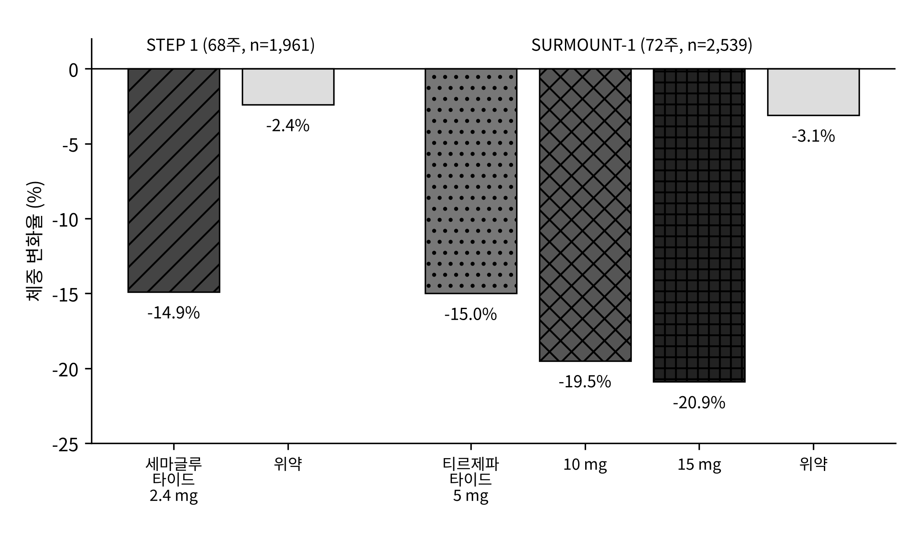
표 2-2는 이 장에서 본 발견들을 연도 순으로 정리한 것이다.
표 2-2. 인크레틴 연구의 주요 이정표.
| 연도 | 사건 | 핵심 인물·문헌 |
|---|---|---|
| 1902 | 세크레틴 발견, 장 호르몬 개념의 탄생 | Bayliss & Starling |
| 1932 | “인크레틴” 명명 | La Barre |
| 1964 | 경구 포도당이 정맥 주사보다 더 큰 인슐린 반응을 일으킴 | Elrick; McIntyre |
| 1971 | GIP 분리 | Brown 등 |
| 1983 | 프로글루카곤 유전자에서 GLP-1·GLP-2 서열 확인 | Bell 등 |
| 1987 | GLP-1(7–37)의 인슐린 분비 효과 확인 | Mojsov; Drucker; Kreymann |
| 1992 | 길라 몬스터 독에서 엑센딘-4 분리 | Eng 등 |
| 1993 | GLP-1 주입으로 제2형 당뇨병 공복 고혈당 정상화 | Nauck 등 |
| 2005 | 엑세나타이드 승인 | — |
| 2009~2010 | 리라글루타이드 당뇨병 승인 | — |
| 2021 | 세마글루타이드(위고비) 비만 승인 | Wilding 등 |
| 2022~2023 | 티르제파타이드 승인 | Jastreboff 등 |
표의 오른쪽 열을 따라가면, 발견은 서로 다른 나라의 서로 다른 분야 연구자들에게서 나왔다. 생리학자는 현상을 보았고, 분자생물학자는 서열을 읽었고, 동물학적 우연이 안정한 분자를 제공했고, 약물화학자는 이를 약으로 바꾸었다. 이 책이 세포신호, 분자생물학, 구조, 컴퓨터 설계를 한 권으로 묶는 이유도 같다.
이 장에서 본 약들은 모두 GLP-1 수용체(glucagon-like peptide-1 receptor, GLP1R) 를 활성화시킨다. GLP1R은 세포막을 일곱 번 가로지르는 G단백질 연결 수용체(G protein-coupled receptor, GPCR) 이며, 췌장의 β세포에서는 인슐린 분비를, 뇌의 시상하부와 뇌간에서는 식욕 억제를, 위에서는 위 배출 지연을 일으킨다. 이 세 가지 효과가 모여 체중을 줄인다고 이해되지만, 각각의 비중과 신호 경로는 아직도 연구 중이다. 3장부터 5장까지는 이 수용체의 구조와 신호전달을, 6장부터는 뇌와 조직 수준의 작용을 단계적으로 다룬다.
1장의 점검표로 돌아가 보자. GLP1R은 표적이 몸 전체에 퍼져 있다는 1장의 문제를 피했는가? 완전히 피하지는 못했다. 오심과 구토 같은 위장관 이상반응은 뇌간 수용체의 활성화와 관련이 있고, 담낭 질환과 췌장염 위험 같은 문제가 지금도 감시되고 있다. 그러나 1장의 약물들과 달리 이 약들은 대규모 시험에서 심혈관 사건을 늘리지 않았다. 그 근거는 12장에서 다룬다.
Bayliss, W. M., & Starling, E. H. (1902). The mechanism of pancreatic secretion. The Journal of Physiology, 28(5), 325–353. https://doi.org/10.1113/jphysiol.1902.sp000920
Bell, G. I., Santerre, R. F., & Mullenbach, G. T. (1983). Hamster preproglucagon contains the sequence of glucagon and two related peptides. Nature, 302(5910), 716–718. https://doi.org/10.1038/302716a0
Coskun, T., Sloop, K. W., Loghin, C., Alsina-Fernandez, J., Urva, S., Bokvist, K. B., Cui, X., Briere, D. A., Cabrera, O., Roell, W. C., Kuchibhotla, U., Moyers, J. S., Benson, C. T., Gimeno, R. E., D’Alessio, D. A., & Haupt, A. (2018). LY3298176, a novel dual GIP and GLP-1 receptor agonist for the treatment of type 2 diabetes mellitus: From discovery to clinical proof of concept. Molecular Metabolism, 18, 3–14. https://doi.org/10.1016/j.molmet.2018.09.009
Drucker, D. J., Philippe, J., Mojsov, S., Chick, W. L., & Habener, J. F. (1987). Glucagon-like peptide I stimulates insulin gene expression and increases cyclic AMP levels in a rat islet cell line. Proceedings of the National Academy of Sciences, 84(10), 3434–3438. https://doi.org/10.1073/pnas.84.10.3434
Elrick, H., Stimmler, L., Hlad, C. J., Jr., & Arai, Y. (1964). Plasma insulin response to oral and intravenous glucose administration. The Journal of Clinical Endocrinology & Metabolism, 24(10), 1076–1082. https://doi.org/10.1210/jcem-24-10-1076
Eng, J., Kleinman, W. A., Singh, L., Singh, G., & Raufman, J. P. (1992). Isolation and characterization of exendin-4, an exendin-3 analogue, from Heloderma suspectum venom. Journal of Biological Chemistry, 267(11), 7402–7405. https://doi.org/10.1016/S0021-9258(18)42531-8
Jastreboff, A. M., Aronne, L. J., Ahmad, N. N., Wharton, S., Connery, L., Alves, B., Kiyosue, A., Zhang, S., Liu, B., Bunck, M. C., & Stefanski, A. (2022). Tirzepatide once weekly for the treatment of obesity. New England Journal of Medicine, 387(3), 205–216. https://doi.org/10.1056/NEJMoa2206038
Knudsen, L. B., Nielsen, P. F., Huusfeldt, P. O., Johansen, N. L., Madsen, K., Pedersen, F. Z., Thøgersen, H., Wilken, M., & Agersø, H. (2000). Potent derivatives of glucagon-like peptide-1 with pharmacokinetic properties suitable for once daily administration. Journal of Medicinal Chemistry, 43(9), 1664–1669. https://doi.org/10.1021/jm9909645
Kreymann, B., Williams, G., Ghatei, M. A., & Bloom, S. R. (1987). Glucagon-like peptide-1 7-36: A physiological incretin in man. The Lancet, 330(8571), 1300–1304. https://doi.org/10.1016/S0140-6736(87)91194-9
Lau, J., Bloch, P., Schäffer, L., Pettersson, I., Spetzler, J., Kofoed, J., Madsen, K., Knudsen, L. B., McGuire, J., Steensgaard, D. B., Strauss, H. M., Gram, D. X., Knudsen, S. M., Nielsen, F. S., Thygesen, P., Reedtz-Runge, S., & Kruse, T. (2015). Discovery of the once-weekly glucagon-like peptide-1 (GLP-1) analogue semaglutide. Journal of Medicinal Chemistry, 58(18), 7370–7380. https://doi.org/10.1021/acs.jmedchem.5b00726
McIntyre, N., Holdsworth, C. D., & Turner, D. S. (1964). New interpretation of oral glucose tolerance. The Lancet, 284(7349), 20–21. https://doi.org/10.1016/S0140-6736(64)90011-X
Mojsov, S., Weir, G. C., & Habener, J. F. (1987). Insulinotropin: Glucagon-like peptide I (7-37) co-encoded in the glucagon gene is a potent stimulator of insulin release in the perfused rat pancreas. Journal of Clinical Investigation, 79(2), 616–619. https://doi.org/10.1172/JCI112855
Nauck, M. A., Kleine, N., Ørskov, C., Holst, J. J., Willms, B., & Creutzfeldt, W. (1993). Normalization of fasting hyperglycaemia by exogenous glucagon-like peptide 1 (7-36 amide) in type 2 (non-insulin-dependent) diabetic patients. Diabetologia, 36(8), 741–744. https://doi.org/10.1007/BF00401145
Pi-Sunyer, X., Astrup, A., Fujioka, K., Greenway, F., Halpern, A., Krempf, M., Lau, D. C. W., le Roux, C. W., Violante Ortiz, R., Jensen, C. B., & Wilding, J. P. H. (2015). A randomized, controlled trial of 3.0 mg of liraglutide in weight management. New England Journal of Medicine, 373(1), 11–22. https://doi.org/10.1056/NEJMoa1411892
Wilding, J. P. H., Batterham, R. L., Calanna, S., Davies, M., Van Gaal, L. F., Lingvay, I., McGowan, B. M., Rosenstock, J., Tran, M. T. D., Wadden, T. A., Wharton, S., Yokote, K., Zeuthen, N., & Kushner, R. F. (2021). Once-weekly semaglutide in adults with overweight or obesity. New England Journal of Medicine, 384(11), 989–1002. https://doi.org/10.1056/NEJMoa2032183
이 장의 출발점 1~2장에서 우리는 약이 어디에서 실패했고, 어떤 분자가 처음으로 성공했는지를 보았다. 이제 질문은 “그 분자가 뇌의 어디에서 무엇을 바꾸는가”다. 이 장은 배고픔과 포만이 만들어지는 회로를 해부한다. 공복일 때 이 회로가 받는 신호(렙틴 감소, 그렐린 증가)는 2권 27장에서, 식후와 공복 사이의 전환은 2권 29장에서 다시 다룬다.
시상하부가 몸무게와 관계있다는 사실은 임상 관찰에서 먼저 드러났다. 20세기 초 신경과 의사들은 뇌하수체 근처에 종양이 생긴 환자가 병적으로 살이 찌는 경우가 있다고 보고했다. 처음에는 뇌하수체 호르몬이 부족해서 생긴 문제로 해석되었으나, 이 설명에는 허점이 있었다. 뇌하수체를 제거해도 비만이 생기지 않는 동물이 있었기 때문이다.
문제를 푼 것은 정교한 동물 실험이었다. 1940년 Hetherington과 Ranson은 쥐의 시상하부 복내측 부위에 전기 병변을 만들면 쥐가 과식하고 심하게 살이 찐다는 것을 보였다(Hetherington & Ranson, 1940). 뇌하수체가 아니라 그 위에 있는 시상하부(hypothalamus) 가 원인이라는 증거였다. 1951년 Anand와 Brobeck은 반대쪽, 곧 시상하부 외측 부위를 파괴하면 동물이 먹기를 멈추고 굶어 죽는다는 것을 보였다(Anand & Brobeck, 1951). 이 두 결과는 오랫동안 “복내측은 포만 중추, 외측은 섭식 중추”라는 단순한 그림으로 교과서에 실렸다.
이 그림은 틀리지 않았지만 지나치게 거칠었다. 병변은 한 부위만 파괴하는 것이 아니라 그곳을 지나는 신경 섬유까지 함께 파괴한다. 그래서 어느 세포가 무슨 일을 하는지는 알 수 없었다. 이 질문에 답하려면 20세기 후반의 분자생물학과 21세기의 신경회로 기술이 필요했다. 1장에서 본 렙틴의 클로닝(1994)이 그 분기점이었다. 렙틴 수용체가 시상하부, 특히 궁상핵(arcuate nucleus) 에 풍부하다는 사실이 드러나자 연구는 이 작은 핵에 집중되었다.
궁상핵은 시상하부 바닥, 제3뇌실 바로 옆에 있다. 이 부위는 혈액-뇌 장벽이 비교적 느슨해서 혈액 속 호르몬이 뇌 조직에 닿기 쉽다. 렙틴, 인슐린, 그렐린 같은 말초 신호가 가장 먼저 도착하는 입구인 셈이다.
여기에는 서로 반대로 일하는 두 뉴런 집단이 있다. 그림 3-1의 가운데 점선 상자가 궁상핵이고, 위쪽의 초록 상자와 아래쪽의 붉은 상자가 두 집단이다.
POMC/CART 뉴런은 프로오피오멜라노코르틴(pro-opiomelanocortin, POMC) 과 코카인-암페타민 조절 전사체(cocaine- and amphetamine-regulated transcript, CART) 를 만든다. POMC는 잘려서 알파-멜라닌세포자극호르몬(α-melanocyte-stimulating hormone, α-MSH) 이 되고, 이것이 멜라노코르틴 4형 수용체(melanocortin 4 receptor, MC4R) 를 활성화시키면 식욕이 줄고 에너지 소비가 늘어난다. 이 뉴런이 켜지면 포만 쪽으로 움직인다. Cowley 등(2001)은 렙틴이 이 뉴런을 직접 활성화시킨다는 것을 전기생리 실험으로 보였다.
AgRP/NPY 뉴런은 아구티 관련 단백질(agouti-related protein, AgRP) 과 신경펩타이드 Y(neuropeptide Y, NPY) 를 만든다. 이 뉴런이 켜지면 배고픔이 나타난다. AgRP는 MC4R에 대해 α-MSH와 경쟁하는 길항제이자 역작용제로 작용해 포만 신호를 막고(Ollmann et al., 1997), NPY는 식욕을 직접 높인다. 이 뉴런은 또한 같은 궁상핵 안의 POMC 뉴런을 신경전달물질 GABA로 억제한다. 그림 3-1에서 AgRP 뉴런에서 POMC 뉴런으로 올라가는 붉은 막대 화살표가 이 억제다.
그림 3-1. 에너지 항상성 회로도. 혈액의 말초 신호(왼쪽)가 궁상핵의 두 뉴런에 도달하고, 두 뉴런은 실방핵의 MC4R 뉴런에 반대 방향으로 작용한다. 뇌간(아래)은 장에서 오는 신호를 받아 포만과 구역 신호를 만든다. 초록 화살표는 촉진, 붉은 막대 화살표는 억제, 점선은 간접 경로를 나타낸다. 개념도이며 정량 자료가 아니다.
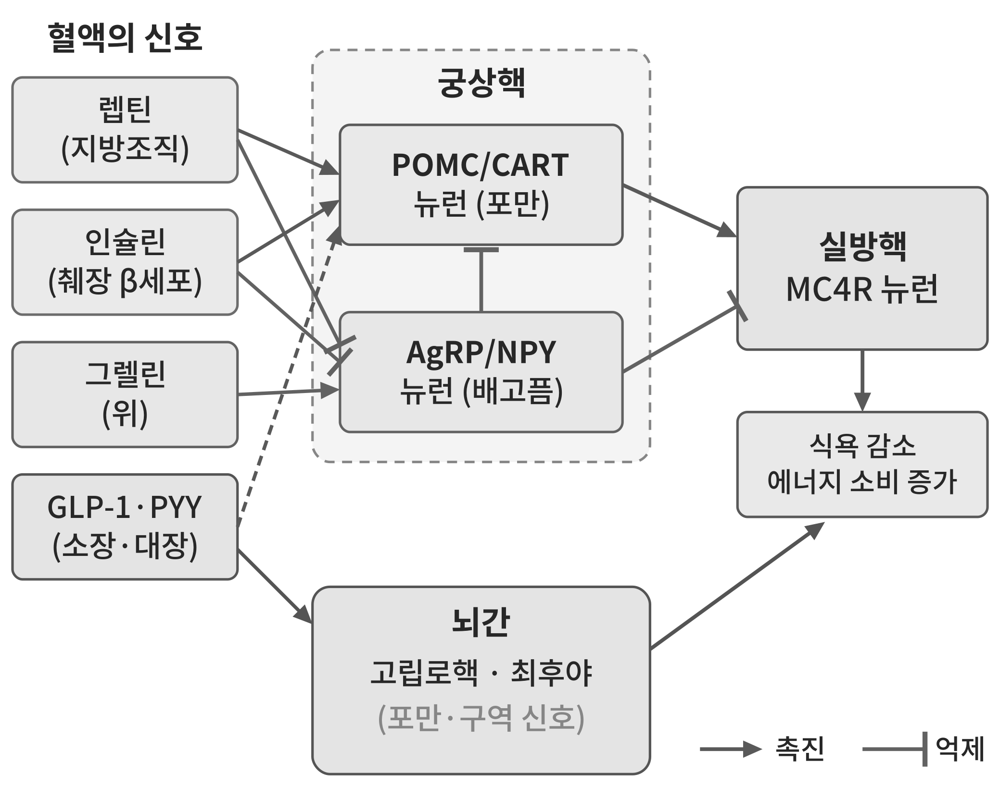
그림에서 읽을 것이 세 가지 있다. 첫째, 렙틴과 인슐린은 두 뉴런에 반대로 작용한다. POMC 뉴런은 켜고, AgRP 뉴런은 끈다. 둘째, 그렐린은 위에서 나와 AgRP 뉴런만 켠다. 배고플 때 위가 보내는 신호다. 셋째, 두 뉴런은 실방핵의 MC4R 뉴런에서 만난다. 한쪽은 가속기를 밟고 다른 쪽은 그 가속기를 막는다. 이 구조는 이후 장의 약물 표적을 이해하는 기본 지도가 된다.
이 지도가 실제로 맞는지는 유전학이 먼저 확인했다. 1997년 Huszar 등은 MC4R 유전자를 없앤 마우스가 과식하고 심하게 살이 찐다는 것을 보였다(Huszar et al., 1997). 사람에게서도 같은 일이 일어났다. 1998년 Vaisse 등과 Yeo 등은 심한 비만 환자에서 MC4R 유전자의 변이를 보고했고(Vaisse et al., 1998; Yeo et al., 1998), 이후 연구들은 MC4R 변이가 심한 소아 비만의 흔한 단일 유전자 원인임을 보였다(Farooqi et al., 2003). 이 경로를 켜는 약물이 세트멜라노타이드(setmelanotide)다. 이 약은 16장에서 다룬다.
신경회로를 직접 조작하는 기술이 나오자 이 모형은 한층 더 분명해졌다. 광유전학과 화학유전학으로 AgRP 뉴런만 골라서 켜면 어떻게 될까? Aponte 등(2011)과 Krashes 등(2011)은 배부른 마우스에서 AgRP 뉴런을 인위로 활성화시켰더니, 마우스가 몇 분 안에 먹이를 찾아 먹기 시작한다는 것을 보였다. 켜기만 했는데 먹이를 먹은 것이다. 반대로 성체 마우스에서 AgRP 뉴런을 없애면 마우스가 먹기를 거부하고 굶어 죽었다(Luquet et al., 2005). 이 뉴런은 배고픔의 충분조건이자 필요조건에 가깝다.
이 이야기에서 가장 놀라운 장면은 2015년에 나왔다. Chen 등(2015)은 AgRP 뉴런의 활동을 생쥐가 깨어 있는 동안 실시간으로 기록했다. 굶은 쥐의 AgRP 뉴런은 높은 활성을 보였다. 그런데 먹이를 보여 주거나 냄새를 맡게 하면, 한 입도 먹기 전에 이 뉴런의 활성이 빠르게 떨어졌다. 뇌는 칼로리가 실제로 들어오기 전에 먹이를 감각하는 것만으로 이 뉴런을 끈다. 몸이 영양소를 받기 전에 예측으로 배고픔 신호를 낮춘다는 뜻이다. 이 사실은 먹기 시작한 뒤의 포만 신호만으로는 식욕 조절을 설명할 수 없다는 것을 보여 준다. 이후 2권 17장의 식후 대사 에너지 설명에서, 몸이 먹기 전부터 식후 상태를 준비하는 과정이 다시 나온다.
두 뉴런이 모이는 곳이 실방핵(paraventricular nucleus, PVH) 이다. 이 핵의 MC4R 뉴런은 식욕, 에너지 소비, 스트레스 호르몬 분비를 조정한다. Atasoy 등(2012)은 AgRP 뉴런에서 실방핵으로 뻗은 축삭만 광유전학으로 자극해도 배고픔 행동이 일어난다는 것을 보였다.
그러나 이 회로가 단순한 직렬 구조는 아니다. Betley 등(2013)은 AgRP 뉴런이 실방핵 외에도 여러 다른 뇌 영역으로 따로 축삭을 뻗고, 각 투사가 독립적으로 섭식을 일으킬 수 있다는 것을 보였다. 이를 병렬 회로라 한다. 병렬 구조에서는 한 경로를 약물로 막아도 다른 경로가 일을 이어 가므로 체중 감소에 한계가 생길 수 있다. 1장에서 말한 생리적 저항의 한 가지 회로학적 설명이다.
궁상핵이 혈액의 호르몬을 읽는 곳이라면, 뇌간(brainstem) 은 장에서 신경으로 올라오는 신호를 읽는 곳이다. 뇌간의 고립로핵(nucleus of the solitary tract, NTS) 은 미주신경(vagus nerve) 의 구심 섬유가 닿는 첫 중계소다. 위가 늘어나거나 소장에 영양소가 닿으면 이 신호가 NTS로 올라가 포만과 식사 종료를 알린다. 바로 옆에 있는 최후야(area postrema) 는 혈액-뇌 장벽이 없는 특수한 부위로, 혈액 속 독소와 약물을 감지해 구토를 일으키는 구역 중추다.
GLP-1 수용체 작용제가 어디에서 체중 감소를 일으키는지는 활발히 연구되는 문제다. Secher 등(2014)은 리라글루타이드가 궁상핵에 접근해 POMC/CART 뉴런을 활성화하고, 간접적으로 AgRP/NPY 뉴런을 억제한다는 것을 보였다. Gabery 등(2020)은 세마글루타이드가 한 부위가 아닌 여러 뇌 영역의 신경경로를 통해 체중을 낮춘다는 것을 보고했다. 한편 뇌간의 최후야와 고립로핵에도 GLP-1 수용체가 있어서, 이 부위가 포만과 함께 오심·구토 같은 부작용에 관여할 가능성이 제기되었다. 이 부분의 증거와 한계는 17장에서 부작용 기전과 함께 자세히 본다.
사람은 몸이 에너지를 필요로 하지 않을 때도 먹는다. 케이크 한 조각은 배가 불러도 먹히는 이유를 항상성 회로만으로는 설명할 수 없다. Berthoud(2011)는 식욕에 두 가지 구동력이 있다고 정리했다. 하나는 에너지 결핍을 채우려는 항상성적(homeostatic) 구동이고, 다른 하나는 맛있는 음식이 주는 쾌락을 쫓는 쾌락적(hedonic) 구동이다. 후자는 복측피개영역(ventral tegmental area, VTA) 에서 측좌핵(nucleus accumbens) 으로 가는 도파민 경로를 포함한 중뇌변연계 보상회로가 담당한다.
두 구동력은 서로 영향을 준다. 궁상핵의 신호는 보상회로의 민감도를 바꾸고, 보상회로의 활동은 항상성 신호를 덮어쓸 수 있다. 환자들이 GLP-1 작용제를 쓰면서 “음식에 대한 생각이 줄었다”고 보고하는 현상이 후자와 관련되는지는 지금도 연구 중이다. 이 책은 근거가 확립된 범위에서만 이 가설을 다루고, 확인되지 않은 부분은 그렇다고 표시한다.
표 3-1은 이 장에서 다룬 신경 집단을 정리한 것이다.
표 3-1. 에너지 항상성 신경 집단의 신경펩타이드와 기능.
| 위치 | 신경 집단 | 주요 신경펩타이드·수용체 | 켜졌을 때의 효과 |
|---|---|---|---|
| 궁상핵 | POMC/CART 뉴런 | α-MSH, CART | 식욕 감소, 에너지 소비 증가 |
| 궁상핵 | AgRP/NPY 뉴런 | AgRP, NPY, GABA | 식욕 증가, 에너지 소비 감소 |
| 실방핵 | MC4R 뉴런 | MC4R | 식욕 감소, 에너지 소비 증가 |
| 뇌간 | 고립로핵 뉴런 | 미주신경 구심 입력 | 포만, 식사 종료 |
| 뇌간 | 최후야 뉴런 | GLP-1 수용체 등 | 구역·구토 관련 신호(연구 중) |
| 중뇌 | VTA 도파민 뉴런 | 도파민 | 쾌락적 섭식 구동 |
표를 읽는 방법은 간단하다. 가운데 열이 이 뉴런의 “언어”이고 오른쪽 열이 그 뉴런의 “행동”이다. 약물 설계의 관점에서 보면, 이 표의 각 줄이 후보 표적이다. 이 책의 3~5부는 이 가운데 어떤 줄이 약물 표적으로 쓰였고 어떤 줄이 아직 비어 있는지를 하나씩 확인해 간다.
시상하부는 하나의 “식욕 중추”가 아니라 서로 반대로 일하는 뉴런들의 균형이고, 그 균형은 혈액의 호르몬과 장에서 올라오는 신경 신호, 그리고 쾌락 회로의 영향을 함께 받는다. 약물이 체중을 줄이는 방법은 결국 이 균형을 포만 쪽으로 기울이는 것이다. 그런데 이 회로에 입력을 보내는 분자들은 어디에서 나오며, 하루 동안 어떤 모양으로 오르내리는가? 4장은 장이 보내는 호르몬 지도를 그린다.
Anand, B. K., & Brobeck, J. R. (1951). Hypothalamic control of food intake in rats and cats. Yale Journal of Biology and Medicine, 24(2), 123–140.
Aponte, Y., Atasoy, D., & Sternson, S. M. (2011). AGRP neurons are sufficient to orchestrate feeding behavior rapidly and without training. Nature Neuroscience, 14(3), 351–355. https://doi.org/10.1038/nn.2739
Atasoy, D., Betley, J. N., Su, H. H., & Sternson, S. M. (2012). Deconstruction of a neural circuit for hunger. Nature, 488(7410), 172–177. https://doi.org/10.1038/nature11270
Berthoud, H.-R. (2011). Metabolic and hedonic drives in the neural control of appetite: Who is the boss? Current Opinion in Neurobiology, 21(6), 888–896. https://doi.org/10.1016/j.conb.2011.09.004
Betley, J. N., Cao, Z. F. H., Ritola, K. D., & Sternson, S. M. (2013). Parallel, redundant circuit organization for homeostatic control of feeding behavior. Cell, 155(6), 1337–1350. https://doi.org/10.1016/j.cell.2013.11.002
Chen, Y., Lin, Y.-C., Kuo, T.-W., & Knight, Z. A. (2015). Sensory detection of food rapidly modulates arcuate feeding circuits. Cell, 160(5), 829–841. https://doi.org/10.1016/j.cell.2015.01.033
Cowley, M. A., Smart, J. L., Rubinstein, M., Cerdán, M. G., Diano, S., Horvath, T. L., Cone, R. D., & Low, M. J. (2001). Leptin activates anorexigenic POMC neurons through a neural network in the arcuate nucleus. Nature, 411(6836), 480–484. https://doi.org/10.1038/35078085
Farooqi, I. S., Keogh, J. M., Yeo, G. S. H., Lank, E. J., Cheetham, T., & O’Rahilly, S. (2003). Clinical spectrum of obesity and mutations in the melanocortin 4 receptor gene. New England Journal of Medicine, 348(12), 1085–1095. https://doi.org/10.1056/NEJMoa022050
Gabery, S., Salinas, C. G., Paulsen, S. J., Ahnfelt-Rønne, J., Alanentalo, T., Baquero, A. F., Buckley, S. T., Farkas, E., Fekete, C., Frederiksen, K. S., Helms, H. C. C., Jeppesen, J. F., John, L. M., Pyke, C., Nøhr, J., Lu, T. T., Polex-Wolf, J., Prevot, V., Raun, K., … Knudsen, L. B. (2020). Semaglutide lowers body weight in rodents via distributed neural pathways. JCI Insight, 5(6), e133429. https://doi.org/10.1172/jci.insight.133429
Hetherington, A. W., & Ranson, S. W. (1940). Hypothalamic lesions and adiposity in the rat. The Anatomical Record, 78(2), 149–172. https://doi.org/10.1002/ar.1090780203
Huszar, D., Lynch, C. A., Fairchild-Huntress, V., Dunmore, J. H., Fang, Q., Berkemeier, L. R., Gu, W., Kesterson, R. A., Boston, B. A., Cone, R. D., Smith, F. J., Campfield, L. A., Burn, P., & Lee, F. (1997). Targeted disruption of the melanocortin-4 receptor results in obesity in mice. Cell, 88(1), 131–141. https://doi.org/10.1016/S0092-8674(00)81865-6
Krashes, M. J., Koda, S., Ye, C., Rogan, S. C., Adams, A. C., Cusher, D. S., Maratos-Flier, E., Roth, B. L., & Lowell, B. B. (2011). Rapid, reversible activation of AgRP neurons drives feeding behavior in mice. Journal of Clinical Investigation, 121(4), 1424–1428. https://doi.org/10.1172/JCI46229
Luquet, S., Perez, F. A., Hnasko, T. S., & Palmiter, R. D. (2005). NPY/AgRP neurons are essential for feeding in adult mice but can be ablated in neonates. Science, 310(5748), 683–685. https://doi.org/10.1126/science.1115524
Ollmann, M. M., Wilson, B. D., Yang, Y.-K., Kerns, J. A., Chen, Y., Gantz, I., & Barsh, G. S. (1997). Antagonism of central melanocortin receptors in vitro and in vivo by agouti-related protein. Science, 278(5335), 135–138. https://doi.org/10.1126/science.278.5335.135
Secher, A., Jelsing, J., Baquero, A. F., Hecksher-Sørensen, J., Cowley, M. A., Dalbøge, L. S., Hansen, G., Grove, K. L., Pyke, C., Raun, K., Schäffer, L., Tang-Christensen, M., Verma, S., Witgen, B. M., Vrang, N., & Bjerre Knudsen, L. (2014). The arcuate nucleus mediates GLP-1 receptor agonist liraglutide-dependent weight loss. Journal of Clinical Investigation, 124(10), 4473–4488. https://doi.org/10.1172/JCI75276
Vaisse, C., Clement, K., Guy-Grand, B., & Froguel, P. (1998). A frameshift mutation in human MC4R is associated with a dominant form of obesity. Nature Genetics, 20(2), 113–114. https://doi.org/10.1038/2407
Yeo, G. S. H., Farooqi, I. S., Aminian, S., Halsall, D. J., Stanhope, R. G., & O’Rahilly, S. (1998). A frameshift mutation in MC4R associated with dominantly inherited human obesity. Nature Genetics, 20(2), 111–112. https://doi.org/10.1038/2404
이 장의 출발점 3장에서 우리는 뇌가 신호를 받는 회로를 보았다. 이 장은 그 신호가 어디서 출발하는지, 곧 위·장·췌장·지방조직이 식사 전후에 어떤 호르몬을 내보내는지를 한 장의 지도로 정리한다. 각 호르몬이 수용체에 붙어 세포 안에서 일으키는 변화는 2권 15장에서, 식후 인크레틴 효과의 정량적 모형은 2권 19장에서, 공복 때 이 신호들이 어떻게 뒤집히는지는 2권 27~29장에서 이어 다룬다.
1장과 2장에서 보았듯이 20세기의 비만약은 대부분 뇌를 직접 건드리는 분자였다. 그런데 뇌의 회로가 알려지자 한 가지 질문이 남았다. 뇌는 도대체 무엇을 보고 “배부르다”고 판단하는가. 답은 몸의 다른 곳에 있었다.
1973년 Gibbs, Young, Smith는 쥐에게 콜레시스토키닌(cholecystokinin, CCK) 을 주사하면 식사량이 줄어든다는 실험을 발표했다(Gibbs et al., 1973). CCK는 원래 지방이 십이지장에 들어오면 담낭을 수축시키는 호르몬으로 알려져 있었다. 소화를 돕는 호르몬이 동시에 “이제 그만 먹어라”는 말도 한다는 발견이었다. 이 실험은 장 호르몬이 식욕 신호라는 개념의 출발점으로 자주 인용된다.
반대 방향의 신호는 한참 뒤에야 나왔다. 1999년 Kojima 등은 위에서 그렐린(ghrelin) 을 분리했다(Kojima et al., 1999). 이 발견의 경로가 특이했다. 그들은 먼저 성장호르몬 분비 자극 약물이 붙는 수용체를 알고 있었지만 그 수용체에 붙는 천연 물질은 몰랐다. 이처럼 수용체는 알려졌으나 짝이 되는 리간드를 모르는 수용체를 고아 수용체(orphan receptor) 라 하고, 고아 수용체의 짝을 찾는 방식을 역약리학(reverse pharmacology)이라 한다. 위 추출물에서 그 짝을 찾아낸 것이 그렐린이었다. 이름은 성장호르몬을 뜻하는 어근 “ghre”에서 왔다. 그런데 이 물질은 성장호르몬만 올리는 것이 아니었다. 곧 사람에게 주사하면 배가 고파진다는 사실이 드러났다(Wren et al., 2001).
2002년 Batterham 등은 장에서 나오는 펩타이드 YY(peptide YY, PYY) 의 일부 조각인 PYY3-36을 사람에게 주입하면 식사량이 줄어든다고 보고했다(Batterham et al., 2002). 이로써 하나의 그림이 완성되었다. 장은 먹을 때 포만 신호를 내고, 위는 비었을 때 배고픔 신호를 낸다. 이 호르몬들의 이름과 위치는 외워야 한다. 이후 모든 장에서 약물 표적으로 다시 나오기 때문이다.
소화관 점막에는 영양분을 감지해 호르몬을 내보내는 장내분비세포(enteroendocrine cell) 가 흩어져 있다. 이 세포들은 점막 상피 세포 중 아주 작은 비율이지만, 모두 합치면 몸에서 가장 많은 종류의 호르몬을 만드는 기관이 된다는 점에서 “가장 큰 내분비 기관”이라 불린다(Gribble & Reimann, 2016).
그림 4-1은 이 장에서 다룰 세포의 위치다. 위의 X/A형 세포는 그렐린을, 십이지장과 공장의 I세포는 CCK를, 같은 부위의 K세포는 포도당 의존성 인슐린 분비 자극 폴리펩타이드(GIP) 를 만든다. 회장과 대장에 많은 L세포는 글루카곤 유사 펩타이드 1(glucagon-like peptide 1, GLP-1), PYY, 그리고 옥신토모듈린(oxyntomodulin, OXM) 을 만든다. 췌장의 β세포는 인슐린과 아밀린(amylin) 을, 지방세포는 1장에서 본 렙틴을 분비한다.
그림 4-1. 에너지 항상성 호르몬을 분비하는 세포의 위치. 위(그렐린), 십이지장·공장(CCK, GIP), 회장·대장(GLP-1, PYY, OXM), 췌장(인슐린, 아밀린), 지방조직(렙틴)에서 나온 신호는 혈액과 미주신경을 통해 뇌에 도달한다. 점선은 미주신경을 나타낸다. 개념도이며 크기와 비례는 실제와 다르다. OXM은 옥신토모듈린.
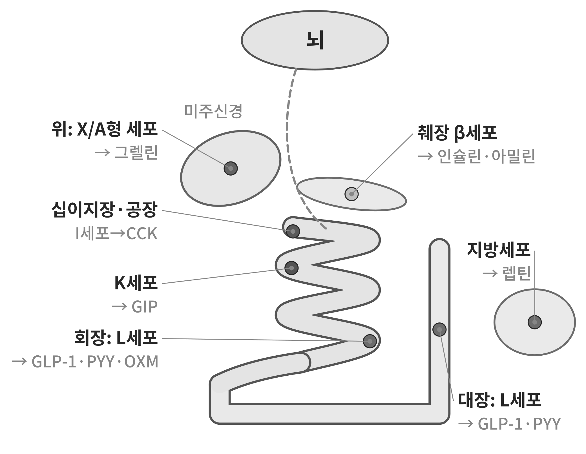
그림에서 두 가지를 읽는다. 첫째, 장 호르몬은 장의 길이를 따라 나뉘어 분비된다. GIP는 영양분이 먼저 닿는 윗부분(근위부)에서, GLP-1과 PYY는 더 아래쪽에서 많이 나온다. 그런데 GLP-1은 식사 직후 짧은 시간에 혈중 농도가 오르는 것으로 알려져 있어서, 소장 아래쪽까지 음식이 도달하기 전에 어떻게 분비되는가가 오래 논의되었다. 근위부에서 보내는 신경 신호나 다른 호르몬이 먼저 L세포를 자극한다는 가설과, 근위부에도 소수의 L세포가 있다는 설명이 함께 제시되어 있다(Holst, 2007; Gribble & Reimann, 2016). 둘째, 세포들은 각자 감지하는 영양소가 다르다. 대체로 지방산, 아미노산, 포도당이 각기 다른 수용체와 수송체를 통해 세포를 자극한다. 이 감지 분자들은 약물 표적이 될 수 있어서 3권에서 다시 다룬다.
음식을 먹으면 호르몬들은 한꺼번에 변한다. 그림 4-2는 이 변화를 한 장에 겹쳐 그린 개념도다. 정량 곡선이 아니라, 문헌에서 반복해서 서술되는 방향과 대략적인 시간 순서만 옮긴 것이다. 실제 곡선은 식사의 크기와 성분, 사람에 따라 크게 달라서 2권 19장에서 논문의 원자료와 함께 다시 그린다.
그림 4-2. 식사 전후 호르몬 변화의 개념도. 식사(회색 띠) 뒤에 인슐린, GIP, GLP-1, PYY, CCK는 오르고 그렐린은 식전 정점에서 식후 감소한다. 곡선의 모양과 정점 시간은 방향을 설명하기 위한 도식이며 측정값이 아니다.
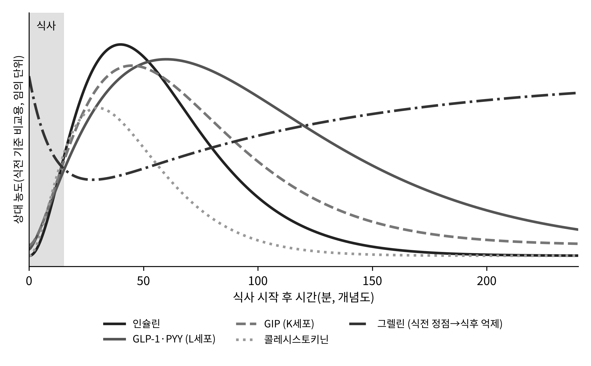
곡선을 보면 CCK와 GIP는 식사 직후 빠르게, GLP-1과 PYY는 조금 뒤에 오래 오른다고 서술된다. 그렐린은 반대로 식사 전에 정점이고 식후에 떨어진다. Cummings 등(2001)은 사람에서 그렐린이 식사 전에 오르고 식후에 감소하는 날 주기 패턴을 보고했다. 이 장에서 기억할 핵심은 곡선 모양이 아니라 방향이다. 대부분의 포만 호르몬은 식후에 오르고, 그렐린만 식전에 오른다.
비만에서는 이 패턴이 약해진다는 보고가 있다. 예를 들어 식후 GLP-1이나 PYY 반응이 낮다는 연구가 있고, 반대로 차이가 없다는 연구도 있어서 일관되지 않다. 이 불일치는 논문 데이터베이스 검색으로 정리해야 하는 주제이므로 2권 19장에서 문헌 근거와 함께 다룬다. 여기서는 “신호 감소가 비만의 원인인가, 결과인가”가 아직 열린 질문이라는 점만 짚어 둔다.
그렐린은 28개 아미노산으로 이루어진 펩타이드다. 이 호르몬의 특이한 점은 세 번째 아미노산(세린)에 지방산인 옥탄산이 붙어야 활성이 생긴다는 것이다. 이 지방산 부착을 맡는 효소가 그렐린 O-아실전달효소(ghrelin O-acyltransferase, GOAT) 다. 분비된 그렐린이 수용체 성장호르몬 분비 촉진 인자 수용체(growth hormone secretagogue receptor, GHSR) 에 붙으면 시상하부의 AgRP/NPY 뉴런이 켜진다. 3장의 그림 3-1에서 그렐린 화살표가 AgRP 뉴런으로만 들어가던 이유다.
그렐린은 비만 약물 개발에서 독특한 위치를 차지한다. 대부분의 장 호르몬은 “늘려서” 약으로 쓰는데, 그렐린은 “막아서” 약으로 쓰려는 시도가 있었다. 그러나 그렐린 경로를 막는 약이 체중을 의미 있게 줄이지 못했다는 점은 이 신호가 중복 경로 가운데 하나일 뿐임을 시사한다. 이 서술의 구체적 임상 근거는 검증 대기 목록에 두었으며, 그렐린 경로의 약물 시도는 2권 15장과 3권에서 문헌으로 확인해 보강한다.
장 호르몬이 “이번 식사”에 대한 신호라면, 췌장과 지방조직의 호르몬은 “몸에 쌓인 에너지”에 대한 신호다.
인슐린(insulin) 은 혈당이 오르면 췌장 β세포에서 분비되어 근육·지방·간의 포도당 이용을 높인다. 동시에 뇌에서도 작용한다. 1979년 Woods 등은 개코원숭이의 뇌실에 인슐린을 만성적으로 주입하면 섭식량과 체중이 줄어든다고 보고해, 인슐린이 뇌에서 에너지 균형 신호로 작동할 수 있음을 보였다(Woods et al., 1979). 따라서 인슐린은 혈당 호르몬이자 뇌에 보내는 비만 신호이기도 하다. 이 이중성 때문에 인슐린 투여는 혈당을 낮추면서 체중을 늘리는 방향으로 작용하기 쉽고, 이는 2권에서 에너지 저장과 분해의 균형으로 다시 다룬다.
아밀린(amylin) 은 β세포가 인슐린과 함께 분비하는 37개 아미노산 펩타이드다(Cooper et al., 1987). 위 배출을 늦추고 뇌간의 최후야(area postrema)에 작용해 포만감을 높인다고 알려져 있다. 아밀린 수용체는 칼시토닌 수용체와 수용체 활성 변형 단백질(receptor activity-modifying protein, RAMP) 의 복합체로 구성된다. 아밀린 유사체는 당뇨병 치료에 먼저 쓰였고, 현재는 비만 약물로도 개발되고 있다. 현황은 시간이 지나며 빠르게 바뀌므로 12장에서 최신 문헌으로 정리한다.
렙틴(leptin) 은 1장에서 본 것처럼 지방세포가 만들며, 지방이 많을수록 혈중 농도가 높다. 3장에서 보았듯이 렙틴은 궁상핵에서 POMC 뉴런을 켜고 AgRP 뉴런을 끈다. 그런데 비만인 사람은 렙틴 농도가 높은데도 체중이 줄지 않는다. 이를 렙틴 저항성(leptin resistance) 이라 한다. 이 현상의 기전은 아직 완전히 정리되지 않았으며, 렙틴을 그대로 약으로 쓰는 방식이 일반 비만에서 성공하지 못한 이유로 자주 거론된다.
호르몬이 뇌에 직접 말하는 것과 별개로, 같은 호르몬은 위장의 움직임을 바꿔 포만을 만든다. GLP-1, PYY, CCK, 아밀린은 모두 위 배출을 늦춘다고 알려져 있다. 위가 천천히 비면 포만감이 오래 지속되고, 식후 혈당의 급상승도 완만해진다. 반대로 위 배출이 빠르면 영양분이 소장으로 급하게 내려가 장 호르몬이 짧고 강하게 분비된다.
이 효과는 약물 해석에서 중요하다. 2장의 GLP-1 작용제를 처음 투여하면 위 배출이 확연히 느려지지만, 지속 투여하면 이 효과가 약해진다는 서술이 문헌에 있다(이른바 속성내성). 반면 뇌를 통한 식욕 억제는 지속된다고 해석된다. 이 구분의 정확한 근거는 2권 19장에서 문헌 자료로 제시한다. 위 배출 지연은 약 복용 후 오심·구토와도 연결되므로 12장의 이상반응 논의에서 다시 만난다.
장과 췌장의 신호가 뇌에 닿는 경로는 크게 둘이다. 혈액 경로는 호르몬이 혈류를 타고 가서, 3장에서 본 혈액-뇌 장벽이 느슨한 부위(궁상핵, 최후야)에 닿는 방식이다. 신경 경로는 장 벽의 미주신경 말단이 호르몬이나 영양분, 장의 팽창을 감지해 뇌간의 고립로핵(nucleus of the solitary tract, NTS) 으로 신호를 올려 보내는 방식이다. 그림 4-1의 점선이 이 경로다.
GLP-1이 혈액에서 반감기가 매우 짧은 점(2장)을 생각하면, 장에서 분비된 GLP-1이 혈액으로 뇌에 도달하는 몫은 작고 장 가까운 미주신경 신호의 몫이 크다는 가설이 제기된 적이 있다. 반면 약으로 투여한 GLP-1 작용제는 반감기가 길어 혈액 경로로 뇌에 닿는다. 천연 호르몬이 일하는 방식과 약이 일하는 방식이 다를 수 있다는 점은 약물 설계에서 반복해서 등장하는 주제이며, 2권 15장과 19장에서 정량적으로 다룬다.
표 4-1은 이 장의 호르몬을 한 장에 정리한 것이다. 마지막 열은 비만 약물 개발에서 그 신호가 어떻게 쓰이는지 개요만 적었다. 임상 시험의 숫자와 구조는 2장과 이후 장에서 다룬다.
표 4-1. 에너지 항상성 호르몬의 분비 부위, 수용체, 작용, 약물 연결.
| 호르몬 | 분비 세포·부위 | 주 수용체 | 식욕·대사 작용 | 비만 약물과의 연결 |
|---|---|---|---|---|
| 그렐린 | 위 X/A형 세포 | GHSR | 배고픔 증가(AgRP/NPY 활성) | 억제 시도(근거 검증 대기) |
| CCK | 십이지장·공장 I세포 | CCK1 수용체 | 식사 종결 신호, 담낭 수축 | 단독 약물은 어려움 |
| GIP | 십이지장·공장 K세포 | GIP 수용체 | 인슐린 분비 촉진 | 티르제파타이드의 한 축(2장) |
| GLP-1 | 회장·대장 L세포 | GLP-1 수용체 | 포만, 인슐린 분비, 위 배출 지연 | 리라글루타이드, 세마글루타이드(2장) |
| PYY | 회장·대장 L세포 | Y2 수용체(PYY3-36) | 식사 후 포만 | 병용·다중 작용제 연구 |
| 옥신토모듈린 | 회장·대장 L세포 | GLP-1 수용체, 글루카곤 수용체 | 식욕 감소, 에너지 소비 증가 가능성 | 이중·삼중 작용제 설계의 원형 |
| 인슐린 | 췌장 β세포 | 인슐린 수용체 | 포도당 이용, 뇌에서 섭식 억제 신호 | 체중 증가 위험 |
| 아밀린 | 췌장 β세포 | 칼시토닌 수용체+RAMP | 위 배출 지연, 포만 | 유사체 개발 중 |
| 렙틴 | 지방세포 | 렙틴 수용체 | 포만, 에너지 소비 | 일반 비만에선 효과 제한(렙틴 저항성) |
표에서 읽을 것이 있다. 약물이 된 신호는 GLP-1과 GIP처럼 하나의 호르몬이 여러 곳(뇌, 췌장, 위)에 동시에 작용하는 것이다. 그런데 한 호르몬만 쓴 약은 효과의 한계가 있었고, 옥신토모듈린처럼 두 수용체를 함께 켜는 분자가 다음 세대의 설계 원리가 되었다. 옥신토모듈린은 Wynne 등(2005)이 과체중·비만 성인에서 피하 투여로 체중이 줄었다고 보고한 바 있다. 여러 호르몬을 한 분자에 담는 전략은 13장과 16장에서 본격적으로 다룬다.
장에서는 그렐린만이 배고픔 신호이고 나머지는 대부분 포만 신호다. 신호는 혈액과 미주신경을 거쳐 3장의 궁상핵과 뇌간에 닿는다. 약이 된 것은 GLP-1과 GIP였고, 여러 신호를 동시에 쓰는 다중 작용제가 다음 단계다. 이 장의 곡선과 표는 방향과 구조를 보인 개념 자료이며, 정량 값은 2권에서 원자료로 확인한다.
Batterham, R. L., Cowley, M. A., Small, C. J., Herzog, H., Cohen, M. A., Dakin, C. L., Wren, A. M., Brynes, A. E., Low, M. J., Ghatei, M. A., Cone, R. D., & Bloom, S. R. (2002). Gut hormone PYY3-36 physiologically inhibits food intake. Nature, 418(6898), 650–654. https://doi.org/10.1038/nature00887
Cooper, G. J. S., Willis, A. C., Clark, A., Turner, R. C., Sim, R. B., & Reid, K. B. M. (1987). Purification and characterization of a peptide from amyloid-rich pancreases of type 2 diabetic patients. Proceedings of the National Academy of Sciences, 84(23), 8628–8632. https://doi.org/10.1073/pnas.84.23.8628
Cummings, D. E., Purnell, J. Q., Frayo, R. S., Schmidova, K., Wisse, B. E., & Weigle, D. S. (2001). A preprandial rise in plasma ghrelin levels suggests a role in meal initiation in humans. Diabetes, 50(8), 1714–1719. https://doi.org/10.2337/diabetes.50.8.1714
Gibbs, J., Young, R. C., & Smith, G. P. (1973). Cholecystokinin decreases food intake in rats. Journal of Comparative and Physiological Psychology, 84(3), 488–495. https://doi.org/10.1037/h0034870
Gribble, F. M., & Reimann, F. (2016). Enteroendocrine cells: Chemosensors in the intestinal epithelium. Annual Review of Physiology, 78, 277–299. https://doi.org/10.1146/annurev-physiol-021115-105439
Holst, J. J. (2007). The physiology of glucagon-like peptide 1. Physiological Reviews, 87(4), 1409–1439. https://doi.org/10.1152/physrev.00034.2006
Kojima, M., Hosoda, H., Date, Y., Nakazato, M., Matsuo, H., & Kangawa, K. (1999). Ghrelin is a growth-hormone-releasing acylated peptide from stomach. Nature, 402(6762), 656–660. https://doi.org/10.1038/45230
Woods, S. C., Lotter, E. C., McKay, L. D., & Porte, D., Jr. (1979). Chronic intracerebroventricular infusion of insulin reduces food intake and body weight of baboons. Nature, 282(5738), 503–505. https://doi.org/10.1038/282503a0
Wren, A. M., Seal, L. J., Cohen, M. A., Brynes, A. E., Frost, G. S., Murphy, K. G., Dhillo, W. S., Ghatei, M. A., & Bloom, S. R. (2001). Ghrelin enhances appetite and increases food intake in humans. Journal of Clinical Endocrinology & Metabolism, 86(12), 5992. https://doi.org/10.1210/jcem.86.12.8111
Wynne, K., Park, A. J., Small, C. J., Patterson, M., Ellis, S. M., Murphy, K. G., Wren, A. M., Frost, G. S., Meeran, K., Ghatei, M. A., & Bloom, S. R. (2005). Subcutaneous oxyntomodulin reduces body weight in overweight and obese subjects: A double-blind, randomized, controlled trial. Diabetes, 54(8), 2390–2395. https://doi.org/10.2337/diabetes.54.8.2390
이 장의 출발점 4장에서 우리는 호르몬이 어디서 나와 뇌에 닿는지를 보았다. 그러나 인크레틴 계열 약물은 뇌에서만 일하지 않는다. 몸 여러 장기에서 동시에 일하고, 그 가운데 어떤 효과는 약이 직접 만든 것이고 어떤 효과는 체중이 줄어서 따라온 결과다. 이 장은 장기별로 그 구분을 정리한다. 장기별 대사의 상세는 2권 31장(간), 32장(근육), 33장(지방조직), 34장(뇌와 β세포)에서 다룬다.
1869년 독일의 의학도 Paul Langerhans는 현미경으로 췌장을 들여다보다가, 소화액을 만드는 세포 사이에 작은 세포 무리가 흩어져 있는 것을 보고 학위 논문에 기록했다. 그는 이 세포 무리의 기능을 몰랐다. 훗날 이 무리는 랑게르한스섬(islets of Langerhans, 췌도) 으로 불리게 되고, 몸의 혈당을 조절하는 중심 기관으로 밝혀진다. 이 이야기의 연도와 서술은 검증 대기 목록에 두었다.
췌도에는 세 종류의 세포가 있다. α세포는 글루카곤(glucagon) 을 분비해 간에서 포도당을 내놓게 한다. β세포는 인슐린을 분비한다. δ세포는 소마토스타틴(somatostatin) 을 분비해 두 세포 모두에 브레이크 역할을 한다. 인크레틴 계열 약물의 췌장 작용은 이 세 세포에 대한 작용으로 정리된다. GLP-1은 β세포의 인슐린 분비를 포도당이 높을 때에만 늘리고, α세포의 글루카곤 분비를 줄이는 방향으로 작용한다고 알려져 있다(Campbell & Drucker, 2013). 7장에서 보겠지만 “포도당이 높을 때에만”이라는 조건이 저혈당 위험을 낮추는 핵심이다.
이 장면에서 한 가지 눈여겨볼 점이 있다. 비만약으로 쓰는 GLP-1 작용제의 가장 확실한 직접 작용점이 췌장이지만, 비만 환자의 체중 감소는 주로 뇌를 통한 식욕 감소로 설명된다(3장). 따라서 췌장 작용은 당뇨병 치료 효과의 기반이고, 체중 감소는 다른 경로가 만든다고 정리하는 것이 안전하다. 2권 19장에서 식후 인슐린 분비의 시간 곡선과 함께 정량적으로 다룬다.
과거에는 지방을 에너지를 쌓아 두는 창고로만 여겼다. 렙틴의 발견(1장)이 이 인식을 바꾸었다. 지방은 호르몬을 분비하는 내분비 기관이다.
지방조직에는 세 종류가 있다. 백색지방은 에너지를 중성지방으로 저장한다. 갈색지방은 미토콘드리아가 많고 탈공역 단백질 1(UCP1)로 에너지를 열로 태운다. 베이지지방은 백색지방 속에서 자극에 따라 갈색지방과 비슷한 성질을 띠는 세포다. 성인에게도 갈색지방이 있다는 사실은 2009년 양전자 단층촬영 연구로 확인되었다(Cypess et al., 2009). 이 발견 때문에 갈색지방을 약물 표적으로 삼으려는 시도가 이어졌다. 이 열발생의 세포 내 기전은 2권 12장에서 자세히 본다.
인크레틴 계열 약물로 줄어든 체중은 대부분 지방 감소로 보고된다. 그런데 이 지방 감소가 약물이 지방세포에 직접 작용해서 생기는지, 섭취가 줄어서 생기는지는 구분해야 한다. 현재의 일반적 해석은 후자다. 즉 약물이 먼저 식욕을 낮추고, 그 결과 에너지 수지가 음이 되어 지방이 줄어든다. 지방세포에 GLP-1 수용체가 거의 없다는 점도 이 해석과 맞는다. 이 해석은 검증 대기 목록에 있으며 33장에서 다시 정리한다.
간은 지방산을 합성하고 저장하는 장기이자, 포도당을 만들어 내놓는 장기다. 비만에서는 간에 지방이 쌓이는 경우가 많다. 이 상태를 이 책은 앞서 1장에서 쓴 대로 대사이상 관련 지방간질환이라 부른다. 용어는 최근 몇 해 사이 국제적으로 개정되었으므로 문헌마다 명칭이 다르다.
GLP-1 작용제가 이 질환을 개선한다는 근거는 임상시험에서 나왔다. Newsome 등(2021)은 세마글루타이드를 지방간염 환자에게 투여한 시험에서 지방간염의 소실이 위약군보다 많았다고 보고했다. 다만 이 효과가 간세포의 GLP-1 수용체에 직접 작용한 결과인지, 체중과 인슐린 저항의 개선을 통한 간접 효과인지는 아직 논쟁 중이다. 간세포에서의 수용체 발현 자체가 연구마다 일치하지 않는 것으로 알려져 있다. 이 논점은 2권 31장에서 다룬다.
체중이 줄 때 줄어드는 것이 지방만은 아니다. 근육을 포함한 제지방량도 일부 줄어든다. 이는 약물과 상관없이 식이 제한으로 체중을 줄일 때도 나타나는 현상이다. 문제는 인크레틴 계열 약물이 만드는 체중 감소의 폭이 크기 때문에 절대적인 근육 감소량도 클 수 있다는 점이다. 임상시험에서 보고된 제지방 감소의 비율은 시험과 측정 방법에 따라 다르며, 어떤 비율이 정상 범위인지에 대해서는 합의가 완전하지 않다. 정확한 수치는 2권 32장에서 원논문의 측정 방법과 함께 정리한다.
근육은 몸에서 가장 큰 포도당 소비 조직이다. 근육이 줄면 기초대사량이 낮아지고 체중이 다시 늘기 쉬운 조건이 만들어진다는 우려가 제기된다. 이 때문에 16장의 차세대 표적에는 근육을 보존하려는 접근이 포함된다. 단백질 섭취와 저항 운동 같은 비약물적 개입의 근거도 함께 다룬다.
비만약의 임상적 의미는 체중 감소만으로 끝나지 않는다. 대규모 심혈관 결과 시험은 이 약물들이 심장과 신장에 미치는 영향을 보여 주었다.
당뇨병 환자를 대상으로 한 세마글루타이드 시험(SUSTAIN-6)에서 주요 심혈관 사건이 위약보다 적었다(Marso et al., 2016). 비만하지만 당뇨병이 없는 심혈관 질환자를 대상으로 한 SELECT 시험에서도 세마글루타이드가 주요 심혈관 사건의 위험을 낮추었다(Lincoff et al., 2023). 신장에서는 당뇨병성 신장병 환자를 대상으로 한 FLOW 시험이 신장 결과를 낮추는 방향의 결과를 보고했다(Perkovic et al., 2024). 각 시험의 정확한 위험비와 대상, 추적 기간은 검증을 마친 뒤 13~17장에서 해당 약물과 함께 서술한다.
여기서 반드시 구분할 것이 있다. 이 이득이 체중 감소 때문인지, 혈압·혈당·염증의 개선 때문인지, 약물이 심장과 신장에 직접 작용하기 때문인지는 아직 분리되지 않았다. 심근에서 GLP-1 수용체의 발현은 사람에서 일관되지 않다는 보고가 있다. 이 구분은 3권 12장에서 “약물 밖의 신호”를 논할 때도 중요하다.
그림 5-1은 이 장의 내용을 한 장에 모은 것이다. 중앙에 약물을 두고, 장기별 작용을 화살표로 이었다. 화살표 색은 해석의 위상을 나타낸다.
그림 5-1. 인크레틴 계열 약물의 장기별 효과 지도. 중앙의 약물에서 여섯 장기로 가는 화살표. 갈색은 직접 작용이 비교적 분명한 장기(췌장)와 체중 감소의 결과로 설명되는 지방조직, 초록은 임상 결과가 보고되었으나 직접·간접 구분이 열려 있는 장기(간, 신장, 심장·혈관), 붉은색은 부정적 영향이 우려되는 장기(근육)를 뜻한다. 개념도이며 효과의 크기는 나타내지 않는다.
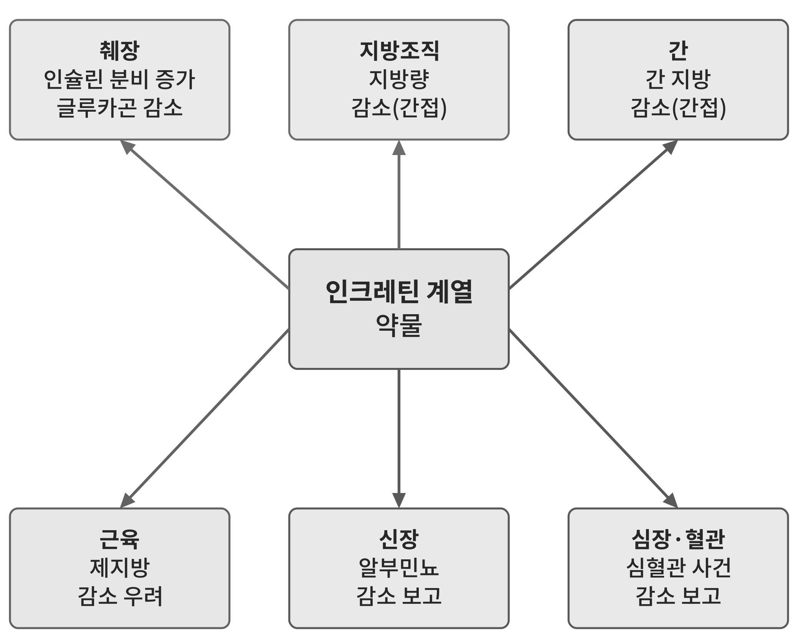
그림에서 읽을 것은 두 가지다. 첫째, 이 약물의 장기별 작용은 위상이 서로 다르다. 췌장 작용은 수용체-세포 수준에서 설명이 가능하지만, 심장과 신장의 이득은 아직 임상 결과가 설명보다 앞서 있다. 둘째, 근육은 유일하게 부정적 방향으로 표시되었다. 이것이 16장 이후에서 새 약물의 요구 조건이 되는 이유다.
표 5-1은 장기별 근거의 수준을 비교하기 위한 것이다. 근거 수준은 “임상시험 결과 존재”, “기전 근거 존재”, “직접 작용 확인” 세 단계로 구분했고, 이 구분은 책 전체에서 일관되게 쓴다.
표 5-1. 장기별 작용 방식과 근거 수준.
| 장기 | 관찰된 변화 | 직접 작용 근거 | 대표 시험 또는 문헌 | 이 책의 상세 위치 |
|---|---|---|---|---|
| 췌장 | 포도당 의존성 인슐린 분비 증가, 글루카곤 감소 | 비교적 분명 | Campbell & Drucker (2013) | 2권 19장, 1권 7장 |
| 지방조직 | 지방량 감소 | 간접(섭취 감소)으로 해석 | Cypess 등 (2009; 갈색지방) | 2권 33장 |
| 간 | 지방간염 소실 증가 | 논쟁 중 | Newsome 등 (2021) | 2권 31장 |
| 근육 | 제지방 감소 우려 | 해당 없음(체중 감소의 부작용) | 시험별 측정 | 2권 32장, 1권 16장 |
| 신장 | 신장 결과 감소 방향 | 논쟁 중 | Perkovic 등 (2024) | 1권 17장 |
| 심장·혈관 | 주요 심혈관 사건 감소 | 논쟁 중 | Marso 등 (2016); Lincoff 등 (2023) | 1권 13장 |
약물이 표적으로 삼는 것은 뇌와 췌장이지만, 임상 효과는 간, 신장, 심장으로 퍼진다. 어느 부분이 직접 작용이고 어느 부분이 체중 감소의 결과인지를 구분하는 일이 새 약물 설계의 출발점이다. 이 구분은 3권 2장의 표적 점수화에서 “직접 작용 근거” 항목으로 쓰인다.
2부 점검: 4~5장으로 호르몬-회로-장기 지도가 완성되었다(산출물 1).
Campbell, J. E., & Drucker, D. J. (2013). Pharmacology, physiology, and mechanisms of incretin hormone action. Cell Metabolism, 17(6), 819–837. https://doi.org/10.1016/j.cmet.2013.04.008
Cypess, A. M., Lehman, S., Williams, G., Tal, I., Rodman, D., Goldfine, A. B., Kuo, F. C., Palmer, E. L., Tseng, Y.-H., Doria, A., Kolodny, G. M., & Kahn, C. R. (2009). Identification and importance of brown adipose tissue in adult humans. New England Journal of Medicine, 360(15), 1509–1517. https://doi.org/10.1056/NEJMoa0810780
Lincoff, A. M., Brown-Frandsen, K., Colhoun, H. M., Deanfield, J., Emerson, S. S., Esbjerg, S., Hardt-Lindberg, S., Hovingh, G. K., Kahn, S. E., Kushner, R. F., Lingvay, I., Oral, T. K., Michelsen, M. M., Plutzky, J., Tornøe, C. W., & Ryan, D. H. (2023). Semaglutide and cardiovascular outcomes in obesity without diabetes. New England Journal of Medicine, 389(24), 2221–2232. https://doi.org/10.1056/NEJMoa2307563
Marso, S. P., Bain, S. C., Consoli, A., Eliaschewitz, F. G., Jódar, E., Leiter, L. A., Lingvay, I., Rosenstock, J., Seufert, J., Warren, M. L., Woo, V., Hansen, O., Holst, A. G., Pettersson, J., & Vilsbøll, T. (2016). Semaglutide and cardiovascular outcomes in patients with type 2 diabetes. New England Journal of Medicine, 375(19), 1834–1844. https://doi.org/10.1056/NEJMoa1607141
Newsome, P. N., Buchholtz, K., Cusi, K., Linder, M., Okanoue, T., Ratziu, V., Sanyal, A. J., Sejling, A.-S., & Harrison, S. A. (2021). A placebo-controlled trial of subcutaneous semaglutide in nonalcoholic steatohepatitis. New England Journal of Medicine, 384(12), 1113–1124. https://doi.org/10.1056/NEJMoa2028395
Perkovic, V., Tuttle, K. R., Rossing, P., Mahaffey, K. W., Mann, J. F. E., Bakris, G., Baeres, F. M. M., Idorn, T., Bosch-Traberg, H., Lausvig, N. L., & Pratley, R. (2024). Effects of semaglutide on chronic kidney disease in patients with type 2 diabetes. New England Journal of Medicine, 391(2), 109–121. https://doi.org/10.1056/NEJMoa2403347
이 장의 출발점 5장까지 우리는 약물이 몸의 어느 장기에서 무엇을 바꾸는지 보았다. 이제 시선을 한 개의 세포로 옮긴다. 약물은 세포막 위의 수용체 한 종류에 붙고, 그 순간부터의 사건이 모든 효과를 만든다. 이 장은 그 수용체가 무엇이고, 약이 붙으면 어떻게 모양을 바꾸며, 신호가 어디로 갈라지는지를 다룬다. 호르몬 신호의 일반 원리는 2권 15장에서 이어서 다룬다.
2장에서 우리는 GLP-1이라는 호르몬이 1980년대에 발견되는 과정을 보았다. 호르몬이 있다면 그것을 받는 수용체가 있어야 한다. 그러나 수용체는 세포막에 박힌 단백질이고, 한 세포에 많지 않아서 혈액이나 조직에서 정제하기가 극히 어려웠다. 수용체를 찾는 길은 결국 그 유전자를 찾는 일이었다.
1992년 Thorens는 쥐의 췌도 세포에서 GLP-1 수용체의 유전자를 복제했다(Thorens, 1992). 이 수용체는 세포막을 일곱 번 가로지르는 구조를 가진 G단백질 연결 수용체(G protein-coupled receptor, GPCR) 였다. 그런데 이 수용체는 우리가 교과서에서 흔히 보던 GPCR과 달랐다. 세포 밖으로 나온 부분이 유난히 길었고, 서열 계통도 아드레날린 수용체와 같은 큰 가족(A군)에 속하지 않고 세크레틴 수용체 가족, 곧 B군(class B1) 에 속했다. 이 가족에는 GLP-1 수용체 외에 GIP 수용체, 글루카곤 수용체, 칼시토닌 수용체 등이 들어 있다. 이 가족의 이름과 분류는 검증 대기 목록에 두었다.
이 사실이 약물 설계에 의미하는 바는 크다. A군 수용체는 작은 분자가 막 안쪽의 포켓에 들어가 켜고 끄는 방식이 많다. B군 수용체의 리간드는 30~40개 아미노산으로 이루어진 비교적 큰 펩타이드다. 그래서 오랫동안 이 수용체를 겨냥한 약은 펩타이드 주사제였고, 경구 소분자는 거의 없었다. 15장에서 다룰 소분자 작용제가 왜 어려운 과제인지는 이 구조에서 나온다.
B군 수용체는 크게 두 부분으로 이루어진다. 세포 밖에 길게 나온 세포 외 도메인(extracellular domain, ECD) 과, 막을 일곱 번 가로지르는 막횡단 도메인(transmembrane domain, TMD) 이다. 펩타이드 리간드의 한쪽 끝(C 말단 쪽)이 먼저 세포 외 도메인에 붙어 위치를 잡고, 다른 쪽 끝(N 말단 쪽)이 막횡단 도메인의 안쪽으로 들어가 수용체를 활성화시킨다는 설명이 오래 전부터 널리 받아들여졌다. 이를 두 도메인 모형이라 부른다.
이 모형은 2017년 극저온 전자현미경으로 활성화된 GLP-1 수용체와 G단백질의 복합체 구조가 풀리면서 눈으로 확인되었다(Zhang et al., 2017). 구조에서 펩타이드는 막횡단 도메인이 만든 틈 안으로 N 말단 쪽이 깊이 들어가 있고, 수용체의 막 안쪽 부분이 벌어지면서 G단백질이 들어올 자리가 열린다. 이 이야기에서 약물 설계자가 얻는 것은 두 가지다. 첫째, 리간드의 N 말단 몇 개 아미노산이 활성의 열쇠다. 2장의 세마글루타이드에서 8번 위치에 Aib를 넣은 이유가 효소 분해를 막으려는 것이었다는 점을 떠올리면 좋다. 둘째, 수용체의 모양 변화가 막 속에서 일어난다는 것은 지질 환경이 활성에 영향을 준다는 뜻이다.
세포막은 지질 이중층이다. 수용체는 이 이중층에 박혀 있고, 막의 두께와 지질 조성, 콜레스테롤의 양이 단백질의 모양과 움직임에 영향을 준다는 보고가 있다. 이 효과가 GLP-1 수용체 신호에 어느 정도 기여하는지는 아직 정리되어 있지 않아서, 이 책은 막 환경이 수용체 기능의 변수가 될 수 있다는 정도로만 서술한다. 3권 6장에서 막단백질을 분자동역학으로 계산할 때 지질 이중층을 직접 구성하는 이유가 바로 이것이다.
리간드가 붙은 수용체는 모양을 바꾸고, 세포 안쪽에서 두 종류의 단백질을 부른다. 그림 6-1이 이 갈림길이다.
그림 6-1. B군 수용체 활성화 뒤의 두 신호 경로. 펩타이드 작용제가 수용체에 붙으면 한쪽(왼쪽)에서는 Gs 단백질이 아데닐릴 고리화효소를 켜서 cAMP가 늘고 PKA와 EPAC2가 활성화된다. 다른 쪽(오른쪽)에서는 수용체가 GRK에 인산화되어 β-아레스틴이 결합하고, 수용체가 내재화되어 재순환되거나 분해된다. 점선은 내재화된 수용체가 엔도솜에서 신호를 낼 수 있다는 보고를 뜻한다. 개념도이며 속도와 양은 나타내지 않는다. GRK는 G단백질 연결 수용체 인산화효소, PKA는 단백질 인산화효소 A, EPAC2는 cAMP 직접 활성화 교환인자 2.
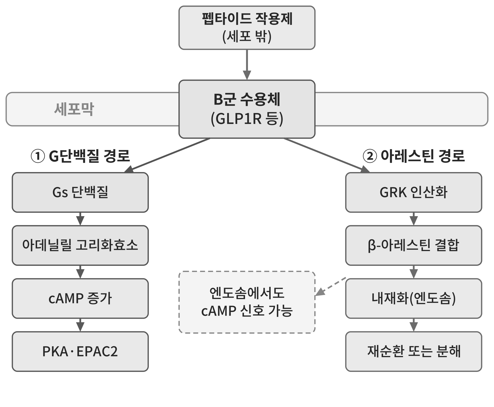
왼쪽 경로가 약리 효과의 주경로다. GLP-1 수용체는 주로 Gs 단백질과 연결되어 아데닐릴 고리화효소를 켜고, 세포 안의 고리형 아데노신 일인산(cyclic AMP, cAMP) 이 늘어난다. cAMP는 단백질 인산화효소 A(PKA) 와 cAMP 직접 활성화 교환인자 2(EPAC2) 를 켜서 인슐린 분비와 유전자 발현을 일으킨다. 이 흐름의 하류는 7장에서 따라간다. 일부 보고는 GLP-1 수용체가 Gq 단백질과도 연결될 수 있다고 하나, 연결의 크기와 생리적 의미는 세포 종류와 조건에 따라 달라 아직 논쟁 중이다.
오른쪽 경로는 신호를 끄는 장치로 알려졌다. 활성화된 수용체는 G단백질 연결 수용체 인산화효소(GRK) 에 의해 인산화되고, 여기에 β-아레스틴(β-arrestin) 이 달라붙는다. 아레스틴이 붙으면 수용체는 G단백질과 더 이상 만나지 못하고, 막에서 안쪽으로 끌려 들어간다. 이 과정을 내재화(internalization) 라 한다. 내재화된 수용체는 다시 막으로 돌아가 재사용되거나(재순환), 분해된다. 어느 쪽으로 가는지가 약의 효과 지속 시간과 내성에 영향을 줄 수 있다.
그런데 이 구도는 지난 십수 년 사이에 수정되었다. 내재화된 수용체가 엔도솜 안에서도 신호를 계속 낼 수 있다는 개념이 다른 수용체에서 먼저 보고되었다(Irannejad et al., 2013). 그림의 점선 상자가 이것이다. 이 개념이 GLP-1 수용체에 어느 정도 적용되는지는 연구가 진행 중이며, 이 책은 가능성으로만 서술한다. 어떤 경우든 수용체의 신호를 “켜기”와 “끄기”로 나누는 이분법은 지나친 단순화다.
같은 수용체에 붙는 약물이라도 두 경로를 똑같이 켜지 않을 수 있다. 어떤 약물은 G단백질 경로를 강하게 켜고 아레스틴 경로는 약하게 켠다. 반대 경우도 있다. 이 현상을 편향 작용(biased agonism) 이라 한다(Kenakin & Christopoulos, 2013). 약학적으로 말하면 수용체는 켜짐과 꺼짐의 두 상태만 가진 스위치가 아니라, 리간드가 어떻게 붙느냐에 따라 여러 모양을 취하는 다기능 단백질이다.
그림 6-2. 편향 작용의 개념도. 같은 수용체에 세 종류의 작용제가 붙었을 때 cAMP 신호와 β-아레스틴 신호의 세기 비율이 달라진다. 화살표의 굵기가 신호의 세기를 나타내며, 균형 작용제는 두 신호를 비슷하게, G단백질 편향 작용제는 cAMP 쪽을 강하게, 아레스틴 편향 작용제는 아레스틴 쪽을 강하게 일으킨다. 개념도이며 실제 측정값이 아니다.
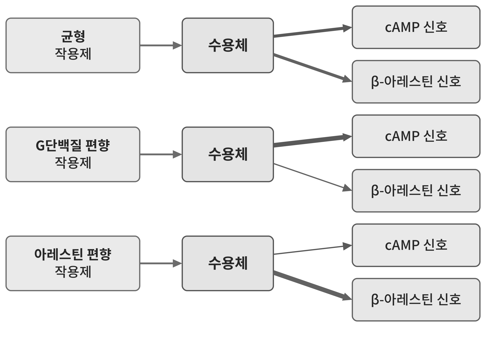
이 개념이 비만약에서 중요한 이유는 두 가지다. 첫째, 아레스틴 경로가 약하면 내재화가 줄어 수용체가 막에 더 오래 남고, 효과가 오래갈 수 있다는 가설이 있다(Jones et al., 2018). 둘째, 두 경로의 신호가 서로 다른 생리 효과와 부작용에 연결될 수 있다는 가설이 있다. 티르제파타이드가 GLP-1 수용체에서 cAMP 쪽으로 편향되어 있다는 보고가 있다(Willard et al., 2020). 다만 편향의 크기가 임상 효과나 이상반응의 차이로 이어지는지는 아직 정립되지 않았다. 이 책은 편향을 “설계 변수의 하나”로 두되, 임상적 의미는 단정하지 않는다. 3권 10장에서 독자가 직접 편향 계수를 계산해 보도록 사례로 구성한 이유다.
같은 B군에 속한 수용체들은 구조가 비슷해서 한 약물이 둘 이상에 붙을 수 있다. 티르제파타이드가 GIP 수용체와 GLP-1 수용체에 모두 작용하는 것이 대표적이다(14장). 글루카곤 수용체는 간에서 포도당을 내놓는 신호를 맡지만, 에너지 소비를 늘리는 쪽으로도 연구되고 있다.
아밀린 수용체는 구성이 특이하다. 칼시토닌 수용체 하나만으로는 아밀린을 잘 받지 못하고, 수용체 활성 변형 단백질(receptor activity-modifying protein, RAMP) 이 붙어서 짝을 이루어야 아밀린 수용체가 된다. 1998년 McLatchie 등은 비슷한 수용체인 CGRP 수용체에서 이 현상을 처음 보고했고(McLatchie et al., 1998), 이후 칼시토닌 수용체와 RAMP1, RAMP2, RAMP3의 조합이 서로 다른 수용체 약리를 만든다는 것이 정리되었다(Poyner et al., 2002). 하나의 유전자 산물이 짝에 따라 다른 수용체가 된다는 점이 약물 선택성을 설계할 때 변수가 된다. 표 6-1에 이 가족의 특징을 모았다.
표 6-1. 비만약 관련 B군 수용체의 특징.
| 수용체 | 주 리간드 | 주 연결 G단백질 | 주요 발현 부위(보고) | 관련 약물 | 비고 |
|---|---|---|---|---|---|
| GLP1R | GLP-1 | Gs(Gq 연결은 논쟁) | 췌도 β세포, 뇌(시상하부·뇌간) | 리라글루타이드, 세마글루타이드, 티르제파타이드 | 내재화·재순환 연구 활발 |
| GIPR | GIP | Gs | 췌도, 지방조직, 뇌 | 티르제파타이드 | 작용 방향에 논쟁 |
| GCGR | 글루카곤 | Gs | 간, 일부 다른 조직 | 삼중 작용제 후보 | 에너지 소비 증가 가능성 |
| 아밀린 수용체 | 아밀린 | Gs | 뇌간 최후야 등 | 아밀린 유사체 | 칼시토닌 수용체와 RAMP의 복합체 |
B군 수용체는 큰 세포 외 도메인과 막횡단 도메인을 가지고, 펩타이드의 한쪽 끝은 도메인 사이에서 위치를 잡고 다른 끝은 안쪽으로 들어가 활성화한다. 활성화된 수용체는 G단백질과 아레스틴의 두 갈래로 신호를 낸다. 같은 수용체도 약물에 따라 두 갈래의 비율이 달라질 수 있고, 이것이 새 약물 설계의 변수다. 다음 7장에서는 첫 갈래의 신호가 췌장 β세포에서 인슐린 분비로 이어지는 하류를 따라간다.
Irannejad, R., Tomshine, J. C., Tomshine, J. R., Chevalier, M., Mahoney, J. P., Steyaert, J., Rasmussen, S. G. F., Sunahara, R. K., El-Samad, H., Huang, B., & von Zastrow, M. (2013). Conformational biosensors reveal GPCR signalling from endosomes. Nature, 495(7442), 534–538. https://doi.org/10.1038/nature12000
Jones, B., Buenaventura, T., Kanda, N., Chabosseau, P., Owen, B. M., Scott, R., Goldin, R., Angkathunyakul, N., Corrêa, I. R., Jr., Bosco, D., Johnson, P. R., Piemonti, L., Marchetti, P., Shapiro, A. M. J., Cochran, B. J., Hanyaloglu, A. C., Inoue, A., Tan, T., Rutter, G. A., … Bloom, S. R. (2018). Targeting GLP-1 receptor trafficking to improve agonist efficacy. Nature Communications, 9, Article 1602. https://doi.org/10.1038/s41467-018-03941-2
Kenakin, T., & Christopoulos, A. (2013). Signalling bias in new drug discovery: Detection, quantification and therapeutic impact. Nature Reviews Drug Discovery, 12(3), 205–216. https://doi.org/10.1038/nrd3954
McLatchie, L. M., Fraser, N. J., Main, M. J., Wise, A., Brown, J., Thompson, N., Solari, R., Lee, M. G., & Foord, S. M. (1998). RAMPs regulate the transport and ligand specificity of the calcitonin-receptor-like receptor. Nature, 393(6683), 333–339. https://doi.org/10.1038/30666
Poyner, D. R., Sexton, P. M., Marshall, I., Smith, D. M., Quirion, R., Born, W., Muff, R., Fischer, J. A., & Foord, S. M. (2002). International Union of Pharmacology. XXXII. The mammalian calcitonin gene-related peptides, adrenomedullin, amylin, and calcitonin receptors. Pharmacological Reviews, 54(2), 233–246. https://doi.org/10.1124/pr.54.2.233
Thorens, B. (1992). Expression cloning of the pancreatic beta cell receptor for the gluco-incretin hormone glucagon-like peptide 1. Proceedings of the National Academy of Sciences, 89(18), 8641–8645. https://doi.org/10.1073/pnas.89.18.8641
Willard, F. S., Douros, J. D., Gabe, M. B. N., Showalter, A. D., Wainscott, D. B., Suter, T. M., Capozzi, M. E., van der Velden, W. J. C., Stutsman, C., Cardona, G. R., Urva, S., Emmerson, P. J., Holst, J. J., D’Alessio, D. A., Coghlan, M. P., Rosenkilde, M. M., Campbell, J. E., & Sloop, K. W. (2020). Tirzepatide is an imbalanced and biased dual GIP and GLP-1 receptor agonist. JCI Insight, 5(17), Article e140532. https://doi.org/10.1172/jci.insight.140532
Zhang, Y., Sun, B., Feng, D., Hu, H., Chu, M., Qu, Q., Tarrasch, J. T., Li, S., Sun Kobilka, T., Kobilka, B. K., & Skiniotis, G. (2017). Cryo-EM structure of the activated GLP-1 receptor in complex with a G protein. Nature, 546(7657), 248–253. https://doi.org/10.1038/nature22394
이 장의 출발점 6장에서 우리는 GLP-1 수용체가 Gs 단백질을 깨워 세포 안에 cAMP(cyclic adenosine monophosphate, 고리형 아데노신 일인산)를 만든다는 데까지 왔다. 이 장은 그 cAMP가 췌장 β세포 안에서 어떤 단백질을 움직여 마침내 인슐린 과립이 세포 밖으로 나가게 하는지를 따라간다. 그리고 왜 이 약이 혈당이 낮을 때는 거의 인슐린을 내지 않는지, 곧 포도당 의존성의 뿌리를 설명한다. (2권 19장 β세포 에너지 감지, 21장 칼슘 신호와 연결된다.)
생물학에서 신호의 흐름을 말할 때, 수용체에 가까운 쪽을 상류, 최종 반응에 가까운 쪽을 하류라고 부른다. 6장까지가 상류의 이야기였다면 이 장은 하류다. 약을 만드는 사람에게 하류를 아는 일은 두 가지 이유로 중요하다. 첫째, 약이 왜 어떤 조건에서는 듣고 어떤 조건에서는 듣지 않는지가 하류의 구조에서 나온다. 둘째, 상류의 수용체를 건드리는 방법 말고도 하류의 단백질을 직접 겨냥하는 길이 있기 때문이다.
β세포(beta cell)는 췌도(pancreatic islet)에서 인슐린을 만드는 세포다. 이 세포는 혈액 속 포도당 농도를 재는 센서이면서 동시에 그 결과로 호르몬을 내보내는 분비기관이다. 한 세포 안에 “재는 장치”와 “내보내는 장치”가 함께 있다는 점이, 이 세포를 이해하는 열쇠다.
인슐린 분비를 일으키는 첫 번째 길은 포도당 자체다. 이 길은 헨퀸(Henquin, 2000)의 정리에 따라 흔히 방아쇠 경로(triggering pathway)라고 부른다. 단계는 다음과 같다.
KATP 채널은 Kir6.2라는 구멍 단백질과 SUR1이라는 조절 단백질이 함께 이룬 복합체다. 이 채널이 닫히는 것을 처음 단일 채널 수준에서 보인 연구가 애쉬크로프트와 동료들(Ashcroft et al., 1984)의 실험이다. 이 채널은 약의 표적이기도 하다. 설폰요소제(sulfonylurea)는 SUR1에 붙어 채널을 닫아 인슐린을 내게 하는데, 포도당이 낮아도 채널을 닫기 때문에 저혈당 위험이 있다. 반대로 채널 유전자(KCNJ11, ABCC8)의 기능 획득 돌연변이는 채널이 닫히지 못해 신생아 당뇨병을 일으키며, 이 환자들이 설폰요소제로 치료될 수 있음이 보고되었다(Gloyn et al., 2004). 한 단백질의 이야기가 병, 진단, 약을 모두 설명하는 드문 사례다.
방아쇠 경로만으로도 인슐린은 나온다. 그러나 포도당만 있을 때보다 훨씬 많이 나오게 하는 것이 증폭 경로(amplifying pathway)이고, 여기에 GLP-1이 들어온다. 헨퀸(2000)은 포도당이 칼슘 신호 외에도 분비를 키우는 신호를 낸다고 정리했으며, 장 호르몬은 cAMP를 통해 이 증폭을 더한다.
GLP-1 수용체에서 Gs가 아데닐릴 사이클레이스(adenylyl cyclase)를 켜면 cAMP가 늘고, cAMP는 크게 두 갈래의 단백질을 움직인다.
두 갈래의 상대적 기여 비율은 조건과 연구 방법에 따라 보고가 다르므로, 이 책에서는 “둘 다 관여한다”는 수준으로만 쓴다. 중요한 것은 구조다. cAMP는 방아쇠를 당기는 신호가 아니라, 이미 당겨진 방아쇠의 효과를 키우는 신호라는 점이다.
그림 7-1. β세포의 두 신호 경로. 왼쪽은 포도당이 만드는 방아쇠 경로, 오른쪽은 GLP-1이 만드는 증폭 경로다. 두 경로는 인슐린 과립 분비에서 만난다. 가운데 점선 상자는 포도당이 낮을 때 증폭이 약한 이유를 요약한다.
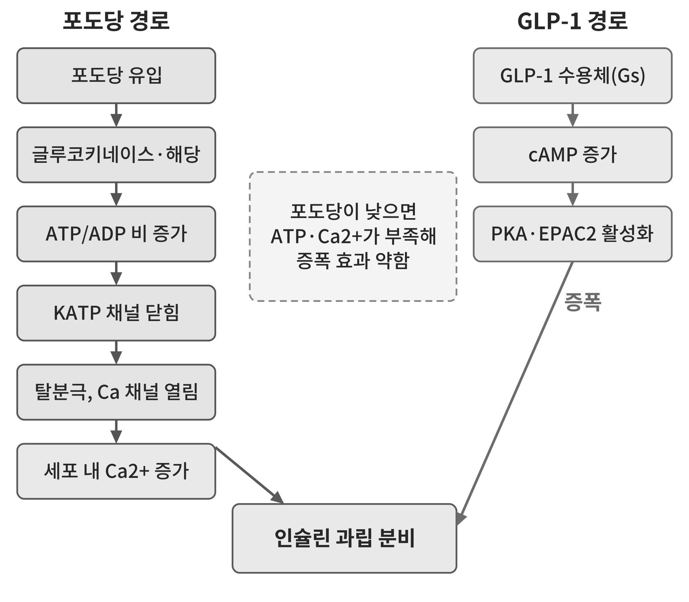
그림 7-1을 읽는 방법은 간단하다. 왼쪽 줄이 끊기면, 곧 포도당이 낮아 ATP와 칼슘이 오르지 않으면, 오른쪽 줄이 아무리 켜져 있어도 분비를 크게 키울 재료가 없다. 증폭은 곱셈에 가깝고, 기본 신호가 0에 가까우면 결과도 작다. 이것이 GLP-1 계열 약이 정상 혈당에서는 인슐린을 크게 올리지 않는 구조적 이유로 이해된다.
이 현상은 임상에서도 관찰되었다. 낫이 같은 연구자들(Nauck et al., 1993)은 GLP-1 주입이 높은 혈당에서는 인슐린 분비를 크게 늘렸지만 혈당이 정상 범위로 내려오면 그 효과가 사라지는 양상을 보고했다. 홀츠와 동료들(Holz et al., 1993)은 세포 수준에서, GLP-1이 포도당에 반응하지 못하던 β세포가 반응하도록 만들 수 있음을 보였다. 두 보고는 “포도당이 있어야 GLP-1이 일한다”는 같은 이야기를 서로 다른 규모에서 말한다.
다만 포도당 의존성이 저혈당 위험이 없다는 뜻은 아니다. 설폰요소제나 인슐린과 함께 쓰면 위험이 올라간다는 점은 임상에서 잘 알려져 있다. 약이 하나의 안전장치를 갖는 것과, 다른 약과 겹쳐 그 안전장치가 무력해지는 것은 별개의 일이다.
세포 안의 신호는 서로 다른 속도로 흐른다. 채널이 열리고 닫히는 것은 밀리초에서 초, 칼슘과 cAMP의 변동은 초에서 분, 과립 분비는 분 단위, 유전자 발현과 인슐린 합성은 시간 단위, β세포의 수와 생존 변화는 일에서 주 단위의 일이다. 약을 설계할 때 어느 눈금의 효과를 노리는지를 분명히 해야 하는 이유가 여기에 있다. 하루 한 번 맞는 약과 주 한 번 맞는 약이 같은 수용체를 쓰더라도 세포 안에서 겪는 신호의 시간 눈금은 같지 않다.
그림 7-2. 인슐린 분비 신호의 시간 눈금. 위에서 아래로 갈수록 느린 현상이다. 왼쪽 상자는 대략의 시간 범위, 오른쪽 상자는 그 시간대에 일어나는 대표 현상이다.
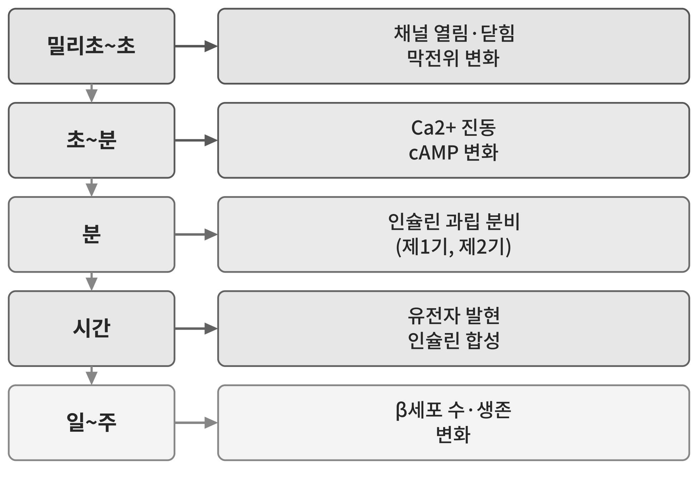
그림 7-2에서 보듯 한 번의 자극이 짧게는 세포막의 전기 변화, 길게는 세포 집단의 변화까지 이어진다. 만성 투여 약의 효과는 아래쪽 눈금까지 닿는 반면, 식후 한 번의 반응은 위쪽 눈금에서 끝난다. 2권에서 다룰 에너지 대사의 시간 눈금도 같은 방식으로 읽을 수 있다.
표 7-1. β세포 인슐린 분비 신호의 주요 구성요소.
| 구성요소 | 역할 | 약·질환과의 연결 | 비고 |
|---|---|---|---|
| 글루코키네이스 | 포도당 센서 효소 | 활성화제 개발 시도 | 간에도 존재 |
| KATP 채널(Kir6.2/SUR1) | ATP 증가를 막전위로 번역 | 설폰요소제 표적, 신생아 당뇨병 | 채널 닫힘이 방아쇠 |
| 전압 의존성 칼슘 채널 | Ca2+ 유입 | 칼슘 신호 | 탈분극에 반응 |
| 아데닐릴 사이클레이스 | cAMP 생성 | GLP-1·GIP 수용체의 하류 | Gs가 활성화 |
| PKA | 인산화로 분비 준비 조절 | 증폭 경로 | cAMP 표적 |
| EPAC2 | cAMP 직접 감지, 과립 방출 연결 | 증폭 경로 | PKA 비의존 |
β세포의 인슐린 분비는 포도당이 만드는 방아쇠 신호와 cAMP가 만드는 증폭 신호가 만나는 곳에서 결정된다. 증폭은 기본 신호가 있을 때만 크게 나타나므로 GLP-1 계열 약은 포도당 의존적으로 인슐린을 늘린다. 이 약리가 세포 안의 구조에서 나온다는 점이 이 장의 핵심이다. 다음 8장에서는 같은 약이 뇌의 뉴런 안에서 렙틴, 멜라노코르틴, AMPK, mTOR 신호와 어떻게 만나는지를 살펴본다.
Ashcroft, F. M., Harrison, D. E., & Ashcroft, S. J. H. (1984). Glucose induces closure of single potassium channels in isolated rat pancreatic β-cells. Nature, 312(5993), 446–448. https://doi.org/10.1038/312446a0
Gloyn, A. L., Pearson, E. R., Antcliff, J. F., Proks, P., Bruining, G. J., Slingerland, A. S., Howard, N., Srinivasan, S., Silva, J. M. C. L., Molnes, J., Edghill, E. L., Frayling, T. M., Temple, I. K., Mackay, D., Shield, J. P. H., Sumnik, Z., van Rhijn, A., Wales, J. K. H., Clark, P., … Hattersley, A. T. (2004). Activating mutations in the gene encoding the ATP-sensitive potassium-channel subunit Kir6.2 and permanent neonatal diabetes. New England Journal of Medicine, 350(18), 1838–1849. https://doi.org/10.1056/NEJMoa032922
Henquin, J. C. (2000). Triggering and amplifying pathways of regulation of insulin secretion by glucose. Diabetes, 49(11), 1751–1760. https://doi.org/10.2337/diabetes.49.11.1751
Holz, G. G., IV, Kühtreiber, W. M., & Habener, J. F. (1993). Pancreatic beta-cells are rendered glucose-competent by the insulinotropic hormone glucagon-like peptide-1(7-37). Nature, 361(6410), 362–365. https://doi.org/10.1038/361362a0
Kashima, Y., Miki, T., Shibasaki, T., Ozaki, N., Miyazaki, M., Yano, H., & Seino, S. (2001). Critical role of cAMP-GEFII·Rim2 complex in incretin-potentiated insulin secretion. Journal of Biological Chemistry, 276(49), 46046–46053. https://doi.org/10.1074/jbc.C100388200
Nauck, M. A., Kleine, N., Ørskov, C., Holst, J. J., Willms, B., & Creutzfeldt, W. (1993). Normalization of fasting hyperglycaemia by exogenous glucagon-like peptide 1 (7-36 amide) in type 2 (non-insulin-dependent) diabetic patients. Diabetologia, 36(8), 741–744. https://doi.org/10.1007/BF00401145
이 장의 출발점 7장에서는 췌장 β세포 안으로 신호를 따라 들어갔다. 이번에는 같은 약이 뇌로 들어가는 길을 간다. 시상하부 활꼴핵(arcuate nucleus)의 두 뉴런 집단, 렙틴이라는 지방의 보고서, 그리고 세포 안의 에너지 계기판인 AMPK와 mTOR가 이 장의 주인공이다. 4장에서 본 호르몬 지도의 종착지가 뉴런 안에서 어떻게 읽히는지를 살핀다. (2권 15장 AMPK와 에너지 센서, 16장 mTOR와 영양 감지와 연결된다.)
1994년 프리드먼(Jeffrey Friedman) 연구진은 비만 생쥐(ob/ob)에서 망가진 유전자를 위치 클로닝으로 찾아내고, 이 유전자가 지방조직에서 만들어지는 호르몬을 부호화한다는 것을 보고했다(Zhang et al., 1994). 이 호르몬이 렙틴(leptin)이다. 렙틴은 몸의 지방량에 비례해 혈중에 나오는 신호로, 뇌에 “저장된 에너지가 충분하다”는 보고서를 전달한다고 이해된다(Friedman & Halaas, 1998). 렙틴이 없는 생쥐와 사람은 끝없이 먹고 심한 비만이 되며, 렙틴을 보충하면 이 증상이 좋아진다.
그러나 이야기는 여기서 끝나지 않았다. 일반적인 비만에서는 렙틴이 오히려 높은데도 식욕이 줄지 않는다. 이 현상을 렙틴 저항성(leptin resistance)이라 부르고, 원인은 지금도 논쟁 중이다. 그래서 렙틴 자체는 비만약이 되지 못했고, 그 사실이 1장에서 본 실패의 역사의 한 장을 이룬다.
렙틴이 시상하부 뉴런의 렙틴 수용체(LepRb)에 붙으면 수용체에 결합해 있는 JAK2(Janus kinase 2, 야누스 인산화효소 2)가 켜지고, 수용체의 특정 부위가 인산화된다. 여기에 STAT3(signal transducer and activator of transcription 3)가 붙어 인산화되면 핵으로 들어가 유전자 발현을 바꾼다. 이 경로 중 STAT3가 붙는 부위를 없앤 생쥐가 비만이 된다는 결과는 STAT3 신호가 에너지 균형에 필요함을 보여 준다(Bates et al., 2003).
이 경로는 스스로를 줄이는 장치도 갖고 있다. STAT3가 켜지면 SOCS3(suppressor of cytokine signaling 3) 단백질이 늘어 JAK2 신호를 낮춘다. 이 되먹임이 렙틴 저항성의 한 설명 후보로 논의되지만, 사람에서 얼마나 중요한지는 확정되어 있지 않다.
그림 8-1. 렙틴 수용체의 세포 내 신호. 위에서 아래로 렙틴이 수용체에 붙고, JAK2와 STAT3를 거쳐 유전자 발현을 바꾼다. 오른쪽 점선 상자는 STAT3 신호로 늘어난 SOCS3가 JAK2 쪽을 약하게 만드는 되먹임이다.
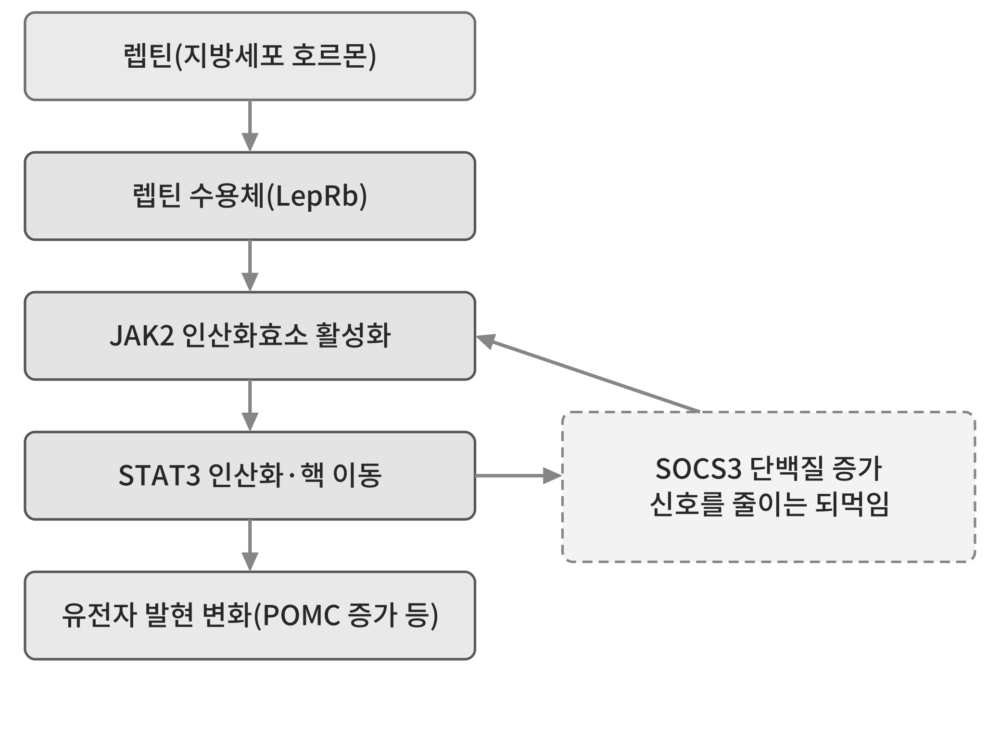
그림 8-1에서 중요한 것은 구조의 모양이다. 위로 가는 신호가 앞으로만 흐르지 않고, 자기 자신을 줄이는 고리를 가진다. 신호 경로를 읽을 때마다 되먹임이 있는지 먼저 찾아보는 습관은 약을 설계할 때에도 쓸모가 있다. 약의 효과가 시간이 지나며 줄어드는 이유를 설명하는 후보가 되기 때문이다.
4장에서 본 것처럼 활꼴핵에는 서로 반대 방향으로 일하는 두 뉴런 집단이 있다. POMC/CART 뉴런은 먹는 것을 줄이는 쪽, AgRP/NPY 뉴런은 먹는 것을 늘리는 쪽이다. 렙틴은 POMC 뉴런을 켜고 AgRP 뉴런을 낮추는 방향으로 작용한다는 보고가 있다(Cowley et al., 2001).
두 뉴런이 만나는 곳은 MC4R(melanocortin 4 receptor, 멜라노코르틴 4 수용체)을 가진 아래쪽 뉴런이다. POMC 뉴런에서 나오는 α-MSH가 MC4R을 켜고, AgRP 뉴런에서 나오는 AgRP 펩타이드는 이를 막는다. MC4R은 6장의 용어로는 Gs에 연결되는 GPCR이어서, 켜지면 cAMP가 올라가는 신호를 낸다. 즉 이 회로는 7장에서 본 구조가 뉴런에서 다른 결과를 만드는 사례다.
그림 8-2. 멜라노코르틴 회로. 왼쪽은 배고픔 쪽 AgRP/NPY 뉴런이 AgRP 펩타이드로 MC4R을 막는 경로, 오른쪽은 포만 쪽 POMC/CART 뉴런이 α-MSH로 MC4R을 켜는 경로다. 두 경로가 MC4R 뉴런에서 만난다.
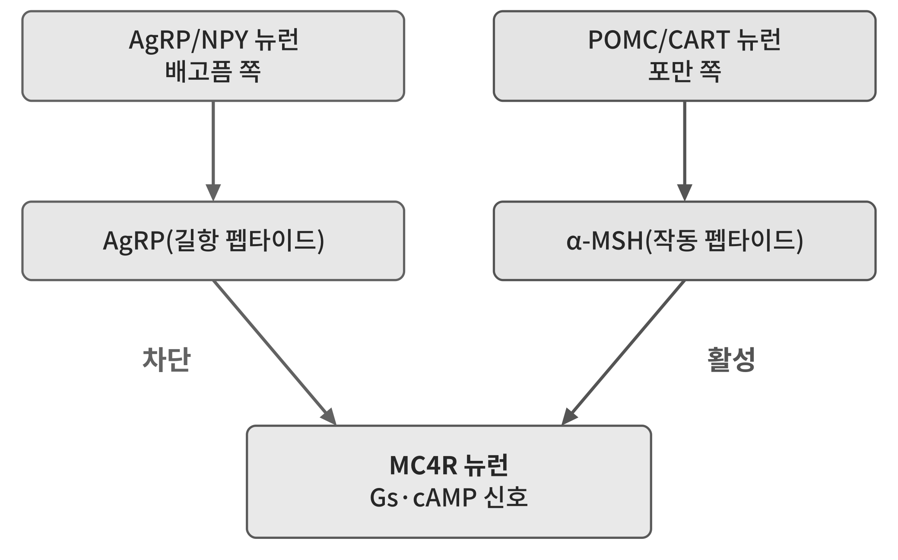
이 회로가 사람의 체중에 실제로 중요하다는 증거는 유전학에서 나왔다. POMC 유전자의 돌연변이는 어릴 때부터 시작되는 심한 비만과 연결되어 보고되었고(Krude et al., 1998), MC4R 유전자 돌연변이는 사람에서 비교적 흔한 단일 유전자성 비만의 원인으로 알려져 있다(Farooqi et al., 2003). 이 증거는 약물 표적을 고를 때 가장 믿을 만한 근거 중 하나다. 사람에서 기능을 잃으면 병이 되는 유전자는, 거꾸로 기능을 키워 주면 약이 될 가능성이 있기 때문이다.
세마글루타이드나 리라글루타이드 같은 약이 체중을 줄이는 경로에도 활꼴핵이 들어 있다. 리라글루타이드에 관한 쥐 연구는 이 약이 활꼴핵을 통해 체중 감소를 일으키며, POMC/CART 뉴런을 간접적으로 활성화하고 AgRP/NPY 뉴런은 억제 신호를 통해 낮춘다고 보고했다(Secher et al., 2014). 다만 이는 동물 결과이고, 사람 뇌에서 약이 어느 뉴런에 어떻게 닿는지는 아직 정밀하게 밝혀지지 않았다는 점을 분명히 해 둔다. 이 부분은 3권 실무편에서 “근거 수준”을 표시하는 이유 중 하나다.
뉴런 안에는 에너지 상태를 직접 재는 단백질도 있다. AMPK(AMP-activated protein kinase, AMP 활성화 단백질 인산화효소)는 세포 안에서 ATP가 줄고 AMP가 늘 때 켜지는 에너지 센서다. 시상하부에서는 굶거나 그렐린이 작용할 때 AMPK가 켜지고 렙틴이나 영양분이 들어오면 줄어들며, 이 변화가 먹는 양에 영향을 준다고 보고되었다(Minokoshi et al., 2004).
mTOR(mechanistic target of rapamycin, 라파마이신의 기계적 표적)는 AMPK와 거의 반대 방향의 센서로 이해할 수 있다. 영양분, 특히 아미노산과 호르몬 신호가 충분할 때 켜지는 세포 성장 조절 단백질이다. 시상하부에서 mTOR 신호가 먹는 양을 조절한다는 결과가 보고되었고, 렙틴의 식욕 억제 효과에 mTOR가 관여한다는 해석이 제시되었다(Cota et al., 2006). 두 센서의 방향은 AMPK는 “부족하다”, mTOR는 “충분하다”로 요약할 수 있지만, 실제 뉴런에서는 두 신호가 서로 겹치므로 단순한 스위치로만 읽어서는 안 된다.
표 8-1. 뉴런 안 에너지·영양 감지 신호의 비교.
| 신호 | 켜지는 조건 | 연결된 입력 | 먹는 행동에 대한 방향(보고) | 이 책의 다른 장 |
|---|---|---|---|---|
| LepRb–JAK2–STAT3 | 렙틴 증가(지방량 신호) | 렙틴 | 포만 쪽 | 8장 |
| MC4R–Gs–cAMP | α-MSH 증가, AgRP 감소 | POMC·AgRP 뉴런 | 포만 쪽 | 6장, 8장 |
| AMPK | 세포 내 AMP/ATP 비 증가 | 굶음, 그렐린 | 식욕 증가 쪽 | 2권 |
| mTOR | 아미노산·호르몬 충분 | 영양분, 렙틴 | 식욕 억제 쪽 | 2권 |
표 8-1의 마지막 두 줄이 보여 주듯 이 책이 1권과 2권으로 나뉜 이유가 여기서 드러난다. 1권은 신호가 어떻게 흐르는지를, 2권은 신호가 읽는 대상인 세포 에너지가 어떻게 만들어지고 쓰이는지를 다룬다. 2권 15장과 16장에서 AMPK와 mTOR를 에너지 대사의 언어로 다시 살펴볼 것이다.
렙틴은 지방의 보고서이고, 렙틴 수용체 안의 JAK2–STAT3 신호는 스스로를 줄이는 되먹임을 가진다. 활꼴핵의 POMC 뉴런과 AgRP 뉴런은 MC4R에서 만나 포만과 배고픔을 가르며, 이 회로가 사람에게도 중요하다는 증거는 유전학에서 나왔다. AMPK와 mTOR는 뉴런 안에서 에너지와 영양을 읽는 센서로, 약 효과의 하류에 놓일 수 있다. 다음 9장에서는 이 신호들이 세포소기관의 상태, 곧 미토콘드리아·소포체·오토파지와 어떻게 이어지는지 살펴본다.
Bates, S. H., Stearns, W. H., Dundon, T. A., Schubert, M., Tso, A. W. K., Wang, Y., Banks, A. S., Lavery, H. J., Haq, A. K., Maratos-Flier, E., Neel, B. G., Schwartz, M. W., & Myers, M. G., Jr. (2003). STAT3 signalling is required for leptin regulation of energy balance but not reproduction. Nature, 421(6925), 856–859. https://doi.org/10.1038/nature01388
Cota, D., Proulx, K., Smith, K. A. B., Kozma, S. C., Thomas, G., Woods, S. C., & Seeley, R. J. (2006). Hypothalamic mTOR signaling regulates food intake. Science, 312(5775), 927–930. https://doi.org/10.1126/science.1124147
Cowley, M. A., Smart, J. L., Rubinstein, M., Cerdán, M. G., Diano, S., Horvath, T. L., Cone, R. D., & Low, M. J. (2001). Leptin activates anorexigenic POMC neurons through a neural network in the arcuate nucleus. Nature, 411(6836), 480–484. https://doi.org/10.1038/35078085
Farooqi, I. S., Keogh, J. M., Yeo, G. S. H., Lank, E. J., Cheetham, T., & O’Rahilly, S. (2003). Clinical spectrum of obesity and mutations in the melanocortin 4 receptor gene. New England Journal of Medicine, 348(12), 1085–1095. https://doi.org/10.1056/NEJMoa022050
Friedman, J. M., & Halaas, J. L. (1998). Leptin and the regulation of body weight in mammals. Nature, 395(6704), 763–770. https://doi.org/10.1038/27376
Krude, H., Biebermann, H., Luck, W., Horn, R., Brabant, G., & Grüters, A. (1998). Severe early-onset obesity, adrenal insufficiency and red hair pigmentation caused by POMC mutations in humans. Nature Genetics, 19(2), 155–157. https://doi.org/10.1038/509
Minokoshi, Y., Alquier, T., Furukawa, N., Kim, Y.-B., Lee, A., Xue, B., Mu, J., Foufelle, F., Ferré, P., Birnbaum, M. J., Stuck, B. J., & Kahn, B. B. (2004). AMP-kinase regulates food intake by responding to hormonal and nutrient signals in the hypothalamus. Nature, 428(6982), 569–574. https://doi.org/10.1038/nature02440
Secher, A., Jelsing, J., Baquero, A. F., Hecksher-Sørensen, J., Cowley, M. A., Dalbøge, L. S., Hansen, G., Grove, K. L., Pyke, C., Raun, K., Schäffer, L., Tang-Christensen, M., Verma, S., Witgen, B. M., Vrang, N., & Bjerre Knudsen, L. (2014). The arcuate nucleus mediates GLP-1 receptor agonist liraglutide-dependent weight loss. Journal of Clinical Investigation, 124(10), 4473–4488. https://doi.org/10.1172/JCI75276
Zhang, Y., Proenca, R., Maffei, M., Barone, M., Leopold, L., & Friedman, J. M. (1994). Positional cloning of the mouse obese gene and its human homologue. Nature, 372(6505), 425–432. https://doi.org/10.1038/372425a0
이 장의 출발점 7장과 8장은 신호가 세포막에서 세포질과 핵으로 가는 길을 따라갔다. 이 장은 신호가 도착하는 또 하나의 장소, 세포소기관(organelle)을 살핀다. 약이 만든 신호는 세포 안의 발전소(미토콘드리아), 단백질 공장(소포체), 재활용 센터(리소좀과 오토파지)의 상태에 따라 다르게 읽힌다. 이 장은 1권 3부의 마지막이며, 2권의 세포 에너지 대사 이야기로 넘어가는 다리다. (2권 5·6부 식후·공복 에너지, 9부 세포소기관 질환과 연결된다.)
약을 같은 용량으로 주어도 어떤 세포는 크게 반응하고 어떤 세포는 덜 반응한다. 수용체의 수가 다르기 때문이기도 하지만, 세포 안 소기관의 상태가 다른 이유도 크다. 에너지를 충분히 만들 수 있는 세포와 그렇지 못한 세포, 단백질을 잘 접는 세포와 접지 못해 스트레스를 받는 세포는 같은 cAMP 신호를 받아도 서로 다른 일을 한다. 이것이 비만과 당뇨의 환경에서 약의 효과가 사람마다 다른 이유의 일부라고 이해된다.
미토콘드리아(mitochondrion)는 영양분을 산화해 ATP를 만드는 세포소기관이다. 그러나 이것은 발전소이면서 동시에 신호의 허브다. 7장에서 본 β세포의 방아쇠 경로는 미토콘드리아에서 만든 ATP가 KATP 채널을 닫는 것으로 시작한다. 즉 포도당이 인슐린 분비로 번역되는 첫 단계가 미토콘드리아에 있다. 미토콘드리아의 기능이 떨어지면 신호의 출발점 자체가 약해진다.
미토콘드리아는 한 번 만들어지면 끝나는 구조물이 아니고, 합쳐지고 나뉘고 낡은 것은 제거되는 역동적 집단이다. 이 품질 관리가 흔들리면 세포가 병드는 것은 미토콘드리아 질환 연구에서 정리된 내용이다(Nunnari & Suomalainen, 2012). 이 책이 이 장을 별도로 두는 까닭은, 비만약의 효과를 오래 이어 가는 일이 결국 세포소기관의 건강과 연결되기 때문이다.
소포체(endoplasmic reticulum)는 분비 단백질과 막 단백질을 접어서 만드는 곳이다. β세포는 인슐린을 아주 많이 만들어야 하므로 소포체의 부담이 특히 크다. 잘못 접힌 단백질이 쌓이면 소포체 스트레스가 생기고, 세포는 미접힘 단백질 반응(unfolded protein response, UPR)이라는 대응 체계를 켠다. UPR에는 PERK, IRE1, ATF6의 세 감지 단백질이 있어, 단백질 합성을 줄이고 접힘을 돕는 샤페론(chaperone) 단백질을 늘려서 상황을 되돌리려 한다(Walter & Ron, 2011). 그러나 스트레스가 해소되지 않고 오래 이어지면 같은 체계가 세포 사멸 쪽 신호를 낸다(Tabas & Ron, 2011).
그림 9-1. 세포소기관과 에너지·영양 센서. 위쪽의 세 소기관이 각각 에너지, 단백질 접힘, 분해·재활용의 상태를 AMPK와 mTOR로 대표되는 센서에 알리고, 센서가 아래의 세포 상태 변화를 이끈다.
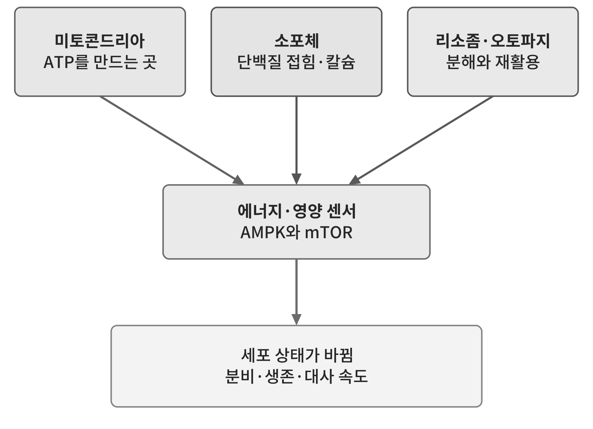
그림 9-2. 미접힘 단백질 반응의 흐름. 소포체 스트레스를 감지하는 PERK, IRE1, ATF6가 초기에는 적응 반응을 일으키고, 스트레스가 오래 지속되면 사멸 신호로 넘어간다.
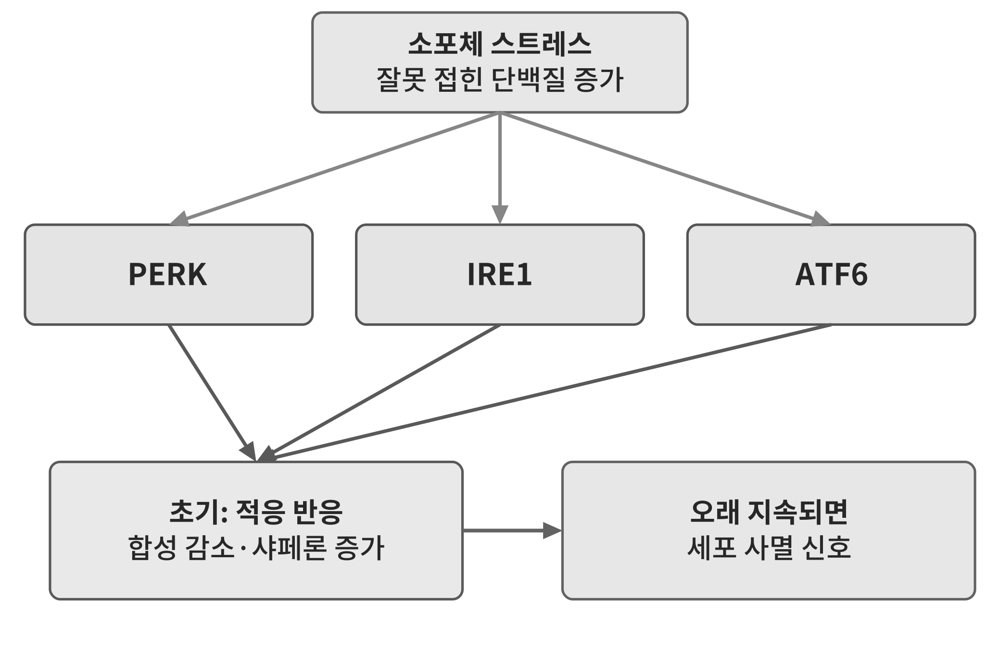
그림 9-1은 세포소기관이 센서로 신호를 보내는 구조를, 그림 9-2는 그중 소포체 한 곳의 반응이 시간에 따라 어떻게 성격을 바꾸는지를 보여 준다. 두 그림에서 얻을 점은 같다. 같은 경로도 지속 시간에 따라 보호가 될 수도, 손상이 될 수도 있다는 것이다. 약물의 장기 투여를 평가할 때 늘 이 시간 축을 함께 보아야 하는 이유다.
오토파지(autophagy, 자가포식)는 세포가 자신의 일부를 막으로 싸서 리소좀으로 보내 분해하고 재활용하는 과정이다(Mizushima & Komatsu, 2011). 굶을 때는 에너지와 재료를 얻는 수단이 되고, 평소에는 낡은 소기관과 단백질을 청소하는 품질 관리 수단이 된다.
이 과정은 8장에서 본 두 센서가 직접 조절한다. 에너지가 부족해 AMPK가 켜지면 오토파지 시작에 핵심인 ULK1을 인산화해 켜고, 영양이 충분해 mTOR 복합체가 활성화되면 ULK1을 인산화해 막는 방향으로 일한다고 보고되었다(Kim et al., 2011). 한 효소가 두 센서의 의견을 모아 결정을 내리는 구조다. 췌도에서는 오토파지가 고지방 식이에 대응해 β세포 질량이 늘어나는 데 중요하다는 쥐 결과가 있다(Ebato et al., 2008). 다만 이는 동물 결과이므로 사람에게 그대로 적용하지 않는다.
GLP-1 계열 약이 소포체 스트레스를 줄이거나 오토파지를 조절한다는 보고가 있지만, 사람에서 얼마나 중요한지는 근거 수준이 낮고 연구마다 결과가 다르다. 이 책은 이런 내용을 확정된 사실처럼 쓰지 않고, 3권 실무편에서 근거 수준 표시와 함께 다룬다. 지금 확실히 말할 수 있는 것은 세포소기관이 신호를 받는 쪽의 상태를 정하고, 센서인 AMPK와 mTOR가 이 상태를 읽는다는 구조까지다.
표 9-1. 세포소기관별 상태, 센서, 약 설계에서 보는 지점.
| 세포소기관 | 하는 일 | 문제가 생기면 | 연결된 센서·경로 | 약 설계에서 보는 지점 |
|---|---|---|---|---|
| 미토콘드리아 | ATP 생산, 신호 허브 | 방아쇠 신호 약화, 활성산소 증가 | AMPK | 에너지 상태가 신호 크기를 정함 |
| 소포체 | 단백질 접힘, 칼슘 저장 | 소포체 스트레스, UPR | PERK, IRE1, ATF6 | 장기 투여 때의 세포 부담 |
| 리소좀·오토파지 | 분해와 재활용 | 낡은 소기관 축적 | AMPK→ULK1, mTOR→ULK1 | 굶음·영양 상태 조절 |
신호는 세포막에서 끝나지 않고 세포소기관의 상태에 의해 크기와 성격이 달라진다. 미토콘드리아는 신호의 출발점이자 에너지 공급원이고, 소포체는 시간에 따라 보호와 손상 사이를 오가며, 오토파지는 AMPK와 mTOR가 함께 조절한다. 이 장으로 1권 3부가 끝난다. 다음 4부(10장부터)에서는 지금까지의 구조를 바탕으로 실제 약물 설계의 원리를 다룬다.
Ebato, C., Uchida, T., Arakawa, M., Komatsu, M., Ueno, T., Komiya, K., Azuma, K., Hirose, T., Tanaka, K., Kominami, E., Kawamori, R., Fujitani, Y., & Watada, H. (2008). Autophagy is important in islet homeostasis and compensatory increase of beta cell mass in response to high-fat diet. Cell Metabolism, 8(4), 325–332. https://doi.org/10.1016/j.cmet.2008.08.009
Kim, J., Kundu, M., Viollet, B., & Guan, K.-L. (2011). AMPK and mTOR regulate autophagy through direct phosphorylation of Ulk1. Nature Cell Biology, 13(2), 132–141. https://doi.org/10.1038/ncb2152
Mizushima, N., & Komatsu, M. (2011). Autophagy: Renovation of cells and tissues. Cell, 147(4), 728–741. https://doi.org/10.1016/j.cell.2011.10.026
Nunnari, J., & Suomalainen, A. (2012). Mitochondria: In sickness and in health. Cell, 148(6), 1145–1159. https://doi.org/10.1016/j.cell.2012.02.035
Tabas, I., & Ron, D. (2011). Integrating the mechanisms of apoptosis induced by endoplasmic reticulum stress. Nature Cell Biology, 13(3), 184–190. https://doi.org/10.1038/ncb0311-184
Walter, P., & Ron, D. (2011). The unfolded protein response: From stress pathway to homeostatic regulation. Science, 334(6059), 1081–1086. https://doi.org/10.1126/science.1209038
이 장의 출발점 3부에서 우리는 신호가 세포막에서 세포소기관까지 가는 길을 따라갔다. 신호가 끝내 도착하는 마지막 장소는 핵이다. 이 장에서는 신호가 전사인자를 거쳐 유전자 발현을 바꾸는 방식, 그리고 유전자 자체는 바뀌지 않아도 읽히는 방식이 달라지는 후성유전을 살핀다. (2권 3부 유전자와 에너지 대사, 5부 세포 에너지 신호와 연결된다.)
생물학에서 가장 자주 길을 잃는 곳은 규모가 바뀌는 지점이다. “비만”은 사람 한 명의 이야기이고, “cAMP”는 세포 한 개 안의 이야기이며, “유전자 발현”은 핵 안의 DNA 이야기다. 이 규모들을 한 줄로 이어 두면 이후 장에서 길을 잃지 않는다.
그림 10-1. 개체에서 mRNA와 단백질까지. 사람 한 명에서 시작해 췌도 조직, β세포, 핵, 염색체, 인슐린 유전자(INS), mRNA, 단백질로 내려가는 규모의 사다리다. 오른쪽 상자가 각 단계의 뜻을 한 줄로 보여 준다.
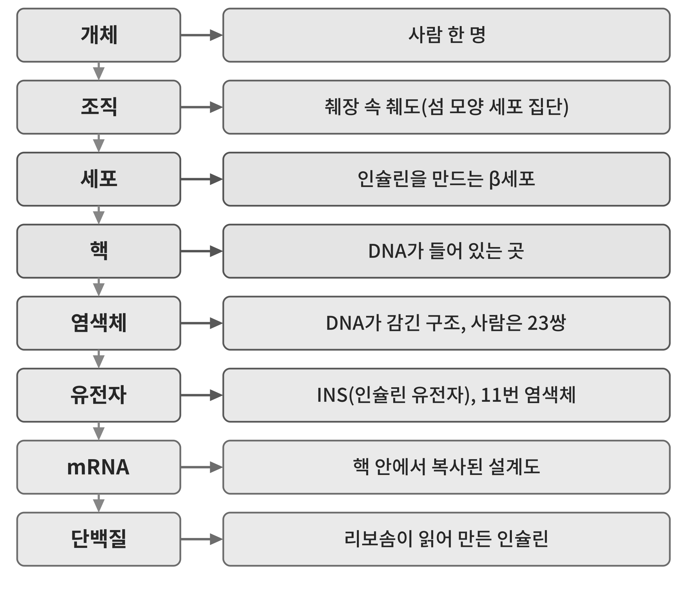
그림 10-1을 읽는 방법은 위에서 아래로 한 칸씩 확대하는 것이다. 인슐린 유전자는 사람의 11번 염색체에 있고, 핵 안에서 mRNA로 복사된 뒤 세포질의 리보솜이 이를 읽어 인슐린 단백질을 만든다. 약이 하는 일은 이 사다리의 어느 칸에서든 개입할 수 있는데, 대부분의 약은 맨 위쪽의 수용체 신호로 시작해 맨 아래쪽 칸인 단백질의 양과 종류를 바꾼다.
7장에서 만든 cAMP는 PKA를 켜고, PKA는 핵 안의 전사인자 CREB(cAMP response element-binding protein)를 인산화한다. 인산화된 CREB는 유전자 앞부분의 cAMP 반응 부위(CRE)에 붙어 표적 유전자의 전사를 높인다(Mayr & Montminy, 2001). 이것은 세포가 단기 신호를 장기 반응으로 바꾸는 가장 대표적인 통로다.
CREB가 쓰이는 곳은 장기마다 다르다. 간에서는 공복에 글루카곤이 cAMP를 올려 CREB와 공동 활성인자 TORC2가 포도당 신생합성 유전자를 켠다는 보고가 있다(Koo et al., 2005). β세포에서는 cAMP–CREB 경로가 세포 생존과 연결된다는 보고가 있다. 즉 같은 cAMP–CREB 경로가 간에서는 혈당을 올리는 쪽, β세포에서는 세포를 지키는 쪽으로 쓰이는 셈이다. 한 신호가 세포 종류에 따라 다른 유전자 세트를 켠다는 점은 약의 조직 선택성을 논할 때 기본 전제가 된다.
β세포가 β세포로 있게 하는 것은 특정 전사인자들이다. 그중 PDX1(pancreatic and duodenal homeobox 1, IPF1이라고도 부름)은 췌장 발생에 필요하며, 이 유전자가 없는 생쥐는 췌장이 만들어지지 않는다(Jonsson et al., 1994). 사람에서도 이 유전자가 한 염기 결실된 경우 췌장이 발생하지 않은 사례가 보고되었다(Stoffers et al., 1997). 성인 β세포에서는 인슐린 유전자 자체의 발현을 유지하는 데 이 전사인자가 관여한다고 이해된다.
이 사실은 약물 개발 관점에서 두 가지를 말해 준다. 첫째, β세포의 기능이 “수용체가 있는가”만으로는 정해지지 않고 “β세포다운 유전자 발현 상태가 유지되는가”에 달려 있다. 둘째, 장기간의 대사 스트레스는 이 정체성 전사인자의 발현을 흔들 수 있으므로, 약의 장기 효과는 신호의 세기만이 아니라 정체성 유지와도 연결해 평가해야 한다.
후성유전(epigenetics)은 DNA 염기서열은 바꾸지 않으면서 유전자를 켜고 끄는 표지가 달라지는 현상이다. 대표적인 표지가 DNA 메틸화(DNA methylation)로, DNA의 특정 부위에 메틸기가 붙으면 그 부위의 유전자 발현이 낮아지는 경향이 있고, 이 표지는 세포 분열을 거쳐 전달될 수 있다(Bird, 2002). 그래서 같은 유전체를 가진 간세포와 β세포가 서로 다른 단백질을 만든다.
비만 연구에서 후성유전이 주목받는 이유는, 환경과 영양 상태가 이 표지를 통해 오래 남는 흔적을 만들 수 있다는 가능성 때문이다. 다만 사람의 비만에서 어떤 표지가 원인이고 어떤 표지가 결과인지는 아직 구분이 어려워, 이 책은 후성유전을 확정된 약물 표적으로 쓰지 않고 해석의 한계를 표시하는 도구로 쓴다.
조직 전체를 갈아서 측정하면 세포 종류가 섞인 평균만 얻는다. 췌도에는 β세포 외에 α세포, δ세포 등이 섞여 있어, 평균값으로는 “어느 세포에서 무엇이 바뀌었는지”를 알 수 없다. 이 한계를 넘는 방법이 세포 하나에서 mRNA 전체를 읽는 단일세포 전사체 분석이다(Tang et al., 2009). 사람 췌도에 이를 적용해 건강한 사람과 제2형 당뇨병 환자의 세포 종류별 발현 차이를 정리한 연구가 대표적이다(Segerstolpe et al., 2016).
그림 10-2. 단일세포 지도를 만드는 흐름. 조직에서 세포를 하나씩 분리하고, 세포마다 mRNA의 종류와 양을 읽은 뒤, 비슷한 세포끼리 묶어 지도로 표시한다.
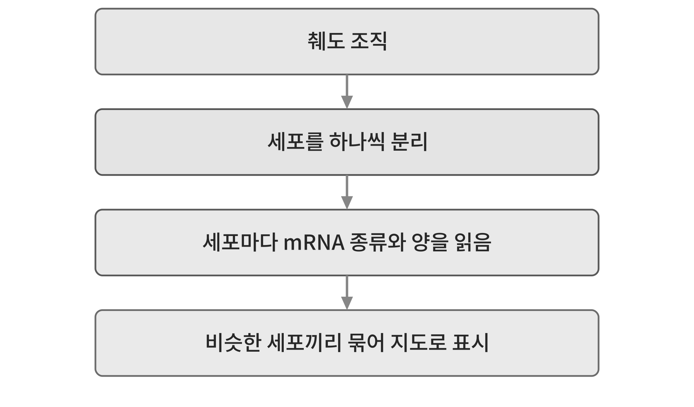
단일세포 지도는 약 연구에서 두 가지로 쓰인다. 하나는 약의 수용체가 어느 세포에 실제로 발현되는지 확인하는 것이고, 다른 하나는 약을 준 뒤 어느 세포의 발현이 바뀌는지 보는 것이다. 3권 실무편에서 공개 데이터로 이 분석을 직접 해 보는 장이 나온다.
표 10-1. 신호, 전사인자, 표적 유전자의 연결(보고된 예).
| 신호 | 전사인자 | 표적 유전자·기능 | 조직 | 근거 |
|---|---|---|---|---|
| cAMP–PKA | CREB(+TORC2) | 포도당 신생합성 유전자 | 간 | Koo et al. (2005) |
| cAMP–PKA | CREB | β세포 생존 관련 유전자 | β세포 | 보고 있음(확인 필요) |
| 렙틴–STAT3 | STAT3 | POMC 발현, SOCS3(되먹임) | 시상하부 | 8장 |
| 췌장 발생 | PDX1 | 인슐린 유전자 등 β세포 유전자 | 췌장 | Jonsson et al. (1994) |
| 환경·영양 | DNA 메틸화 | 장기 유전자 발현 표지 | 여러 조직 | Bird (2002) |
신호는 전사인자를 거쳐 유전자 발현을 바꾸고, 같은 신호도 세포의 종류에 따라 다른 유전자를 켠다. PDX1 같은 전사인자는 β세포의 정체성을 정하고, 후성유전은 같은 DNA를 다르게 읽게 한다. 단일세포 지도는 이 차이를 세포 하나하나에서 보게 해 준다. 다음 11장에서는 사람의 유전학이 약물 표적에 대해 무엇을 말해 주는지 살펴본다.
Bird, A. (2002). DNA methylation patterns and epigenetic memory. Genes & Development, 16(1), 6–21. https://doi.org/10.1101/gad.947102
Jonsson, J., Carlsson, L., Edlund, T., & Edlund, H. (1994). Insulin-promoter-factor 1 is required for pancreas development in mice. Nature, 371(6498), 606–609. https://doi.org/10.1038/371606a0
Koo, S.-H., Flechner, L., Qi, L., Zhang, X., Screaton, R. A., Jeffries, S., Hedrick, S., Xu, W., Boussouar, F., Brindle, P., Takemori, H., & Montminy, M. (2005). The CREB coactivator TORC2 is a key regulator of fasting glucose metabolism. Nature, 437(7062), 1109–1111. https://doi.org/10.1038/nature03967
Mayr, B., & Montminy, M. (2001). Transcriptional regulation by the phosphorylation-dependent factor CREB. Nature Reviews Molecular Cell Biology, 2(8), 599–609. https://doi.org/10.1038/35085068
Segerstolpe, Å., Palasantza, A., Eliasson, P., Andersson, E.-M., Andréasson, A.-C., Sun, X., Picelli, S., Sabirsh, A., Clausen, M., Bjursell, M. K., Smith, D. M., Kasper, M., Ämmälä, C., & Sandberg, R. (2016). Single-cell transcriptome profiling of human pancreatic islets in health and type 2 diabetes. Cell Metabolism, 24(4), 593–607. https://doi.org/10.1016/j.cmet.2016.08.020
Stoffers, D. A., Zinkin, N. T., Stanojevic, V., Clarke, W. L., & Habener, J. F. (1997). Pancreatic agenesis attributable to a single nucleotide deletion in the human IPF1 gene coding sequence. Nature Genetics, 15(1), 106–110. https://doi.org/10.1038/ng0197-106
Tang, F., Barbacioru, C., Wang, Y., Nordman, E., Lee, C., Xu, N., Wang, X., Bodeau, J., Tuch, B. B., Siddiqui, A., Lao, K., & Surani, M. A. (2009). mRNA-Seq whole-transcriptome analysis of a single cell. Nature Methods, 6(5), 377–382. https://doi.org/10.1038/nmeth.1315
이 장의 출발점 10장에서 우리는 신호가 유전자 발현으로 이어지는 길을 보았다. 이번에는 거꾸로, 사람의 유전자 변이가 어떤 길이 체중에 중요한지를 먼저 알려 준 사례를 따라간다. 약을 만들 때 가장 믿을 만한 단서 중 하나는 실험실이 아니라 사람 자신의 유전자에서 나온다. (2권 3부 유전자와 에너지 대사와 연결된다.)
생쥐에서 어떤 유전자를 없애면 살이 찐다는 결과는 중요하지만, 그것이 사람에게도 같은지는 별개의 문제다. 반면 사람에서 그 유전자의 기능이 망가진 가족이 실제로 어릴 때부터 심하게 살이 찐다면, 그 유전자는 사람의 체중 조절에 필요하다는 증거가 된다. 이것은 실험이 아니라 자연이 만든 실험이다. 약물 개발에서 표적 후보를 고를 때 사람 유전학의 지지가 있으면 성공 가능성이 높아진다고 흔히 이야기되며, 이 책도 그 방향을 따른다. 다만 이 주장의 정량적 근거는 확인 후에 쓴다(refs/tocheck.md 참조).
한 유전자의 이상만으로 심한 비만이 생기는 경우를 단일 유전자 비만(monogenic obesity)이라 부른다. 이 사례들은 8장에서 본 회로의 부품과 정확히 겹친다.
이 다섯 유전자는 따로따로 놓인 것이 아니라 하나의 줄에 놓인다. 렙틴이 수용체에 붙고, POMC가 만들어져 PCSK1이 잘라 α-MSH가 되고, MC4R이 이를 받는다. 8장의 그림 8-2가 유전학에서 그대로 확인된 셈이다.
그림 11-1. 유전학 증거가 약이 되는 사슬. 유전 변이의 발견에서 임상시험까지 다섯 단계를 보여 준다. 오른쪽 상자는 각 단계의 예다.
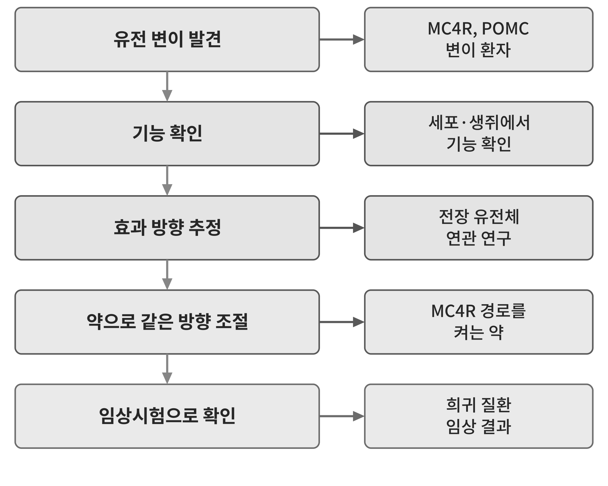
그림 11-1에서 가장 오른쪽 아래가 중요하다. MC4R 경로를 켜는 약인 세트멜라노타이드(setmelanotide)는 POMC나 LEPR 결핍 환자를 대상으로 한 시험에서 체중 감소가 보고되었다(Clément et al., 2020). 즉 유전학이 가리킨 표적에서 약이 나와 같은 방향으로 효과를 낸 사례가 이미 있다. 다만 이 사례는 희귀 질환이고, 일반적인 비만에 그대로 적용되는 것은 아니다.
대부분의 비만은 한 유전자가 아니라 여러 유전자의 작은 효과와 환경이 합쳐져 생긴다. 이를 찾기 위해 사람 전체 유전체의 변이와 체중 지표(체질량지수, BMI)의 연관을 보는 전장 유전체 연관 연구(genome-wide association study, GWAS)가 쓰인다. 첫 성과 중 하나가 FTO 유전자 부근의 변이로, 성인의 비만 위험과 연관된다고 보고되었다(Frayling et al., 2007). 또 MC4R 부근의 흔한 변이도 비만 위험과 연관된다고 보고되었다(Loos et al., 2008). 희귀한 큰 효과(MC4R 기능 상실)와 흔한 작은 효과(MC4R 부근 변이)가 같은 유전자에서 만난다는 사실은, 이 회로가 사람의 체중 조절에 실제로 중요하다는 점을 다시 확인시켜 준다.
이 결과를 읽을 때의 주의점이 있다. GWAS에서 찾은 변이는 대개 유전자 자체가 아니라 그 부근의 조절 부위일 수 있어 어느 유전자가 실제 원인인지 정하기 어렵고, 효과의 크기도 작다. 그래서 GWAS의 신호만으로 곧바로 약물 표적을 확정할 수 없다.
관찰 연구에서는 어떤 지표가 병과 연관되어도 원인인지 결과인지 알기 어렵다. 멘델 무작위화(Mendelian randomization)는 유전 변이가 부모에게서 자녀로 무작위에 가깝게 전달된다는 점을 이용해, 변이를 일종의 무작위 배정처럼 써서 인과를 추정하는 방법이다(Davey Smith & Ebrahim, 2003). 예를 들어 어떤 수용체 유전자 변이가 그 수용체의 활동을 조금 높이거나 낮추는 효과를 가진다면, 그 변이를 가진 사람들의 결과를 비교해 그 수용체를 조절하는 약의 방향을 미리 가늠해 볼 수 있다. 다만 이 방법은 변이가 다른 경로로도 영향을 주는 경우(다면발현)에 오류가 생길 수 있어 한계가 있다.
사람마다 약 반응이 다른 이유를 유전체로 설명하려는 시도, 곧 약물 반응 유전체학이 있다. 그러나 이 책은 이 분야를 과대 해석하지 않기 위해 현재 확정된 근거가 제한적이라는 점을 분명히 해 둔다. 약 반응은 유전자뿐 아니라 식이, 장내 환경, 복용 순응도 등 여러 요인이 함께 정하고, 이 부분은 17장에서 반응자와 비반응자의 기전으로 다시 다룬다.
표 11-1. 유전자별 표적 근거 요약.
| 유전자 | 회로에서의 역할 | 사람 유전학 근거 | 약물 근거 | 근거 수준(이 책의 정성적 표기) |
|---|---|---|---|---|
| LEP | 렙틴 | 변이에서 심한 비만 보고 | 렙틴 보충이 해당 환자에서 사용됨(확인 필요) | 강함(희귀) |
| LEPR | 렙틴 수용체 | 변이에서 심한 비만 보고 | 세트멜라노타이드 시험 | 강함(희귀) |
| POMC | α-MSH 전구체 | 변이에서 비만 보고 | 세트멜라노타이드 시험 | 강함(희귀) |
| PCSK1 | 전구체 절단 효소 | 변이에서 비만 보고 | 직접 표적 약 없음 | 중간 |
| MC4R | α-MSH 수용체 | 희귀·흔한 변이 모두 연관 | MC4R 경로 작용제 | 강함 |
| FTO | 기전 불확실 | GWAS 연관 | 표적으로 입증된 약 없음 | 약함(기전 불명확) |
이 표의 “근거 수준”은 점수가 아니라 이 책의 정성적 표기이며, 근거 문헌 확인 후에 조정한다.
사람의 유전학은 8장의 회로가 실제로 체중 조절에 필요하다는 것을 가장 직접적으로 보여 준다. 렙틴, 수용체, POMC, PCSK1, MC4R이 하나의 줄로 이어지며, MC4R 경로를 겨냥한 약은 희귀 질환에서 이 줄의 효과를 확인했다. 일반 비만의 GWAS는 작은 효과를 보여 줄 뿐 곧바로 표적을 확정하지는 못한다. 다음 12장에서는 이렇게 정해진 표적에 맞는 약을 단백질의 구조에서 어떻게 설계하는지 살펴본다.
Clément, K., van den Akker, E., Argente, J., Bahm, A., Chung, W. K., Connors, H., De Waele, K., Farooqi, I. S., Gonneau-Lejeune, J., Gordon, G., Kohlsdorf, K., Poitou, C., Puder, L., Swain, J., Stewart, M., Yuan, G., Wabitsch, M., & Kühnen, P. (2020). Efficacy and safety of setmelanotide, an MC4R agonist, in individuals with severe obesity due to LEPR or POMC deficiency: Single-arm, open-label, multicentre, phase 3 trials. The Lancet Diabetes & Endocrinology, 8(12), 960–970. https://doi.org/10.1016/S2213-8587(20)30364-8
Clément, K., Vaisse, C., Lahlou, N., Cabrol, S., Pelloux, V., Cassuto, D., Gourmelen, M., Dina, C., Chambaz, J., Lacorte, J.-M., Basdevant, A., Bougnères, P., Lebouc, Y., Froguel, P., & Guy-Grand, B. (1998). A mutation in the human leptin receptor gene causes obesity and pituitary dysfunction. Nature, 392(6674), 398–401. https://doi.org/10.1038/32911
Davey Smith, G., & Ebrahim, S. (2003). ‘Mendelian randomization’: Can genetic epidemiology contribute to understanding environmental determinants of disease? International Journal of Epidemiology, 32(1), 1–22. https://doi.org/10.1093/ije/dyg070
Farooqi, I. S., Keogh, J. M., Yeo, G. S. H., Lank, E. J., Cheetham, T., & O’Rahilly, S. (2003). Clinical spectrum of obesity and mutations in the melanocortin 4 receptor gene. New England Journal of Medicine, 348(12), 1085–1095. https://doi.org/10.1056/NEJMoa022050
Frayling, T. M., Timpson, N. J., Weedon, M. N., Zeggini, E., Freathy, R. M., Lindgren, C. M., Perry, J. R. B., Elliott, K. S., Lango, H., Rayner, N. W., Shields, B., Harries, L. W., Barrett, J. C., Ellard, S., Groves, C. J., Knight, B., Patch, A.-M., Ness, A. R., Ebrahim, S., … McCarthy, M. I. (2007). A common variant in the FTO gene is associated with body mass index and predisposes to childhood and adult obesity. Science, 316(5826), 889–894. https://doi.org/10.1126/science.1141634
Jackson, R. S., Creemers, J. W. M., Ohagi, S., Raffin-Sanson, M.-L., Sanders, L., Montague, C. T., Hutton, J. C., & O’Rahilly, S. (1997). Obesity and impaired prohormone processing associated with mutations in the human prohormone convertase 1 gene. Nature Genetics, 16(3), 303–306. https://doi.org/10.1038/ng0797-303
Krude, H., Biebermann, H., Luck, W., Horn, R., Brabant, G., & Grüters, A. (1998). Severe early-onset obesity, adrenal insufficiency and red hair pigmentation caused by POMC mutations in humans. Nature Genetics, 19(2), 155–157. https://doi.org/10.1038/509
Loos, R. J. F., Lindgren, C. M., Li, S., Wheeler, E., Zhao, J. H., Prokopenko, I., Inouye, M., Freathy, R. M., Attwood, A. P., Beckmann, J. S., Berndt, S. I., Jacobs, K. B., Chanock, S. J., Hayes, R. B., Bergmann, S., Bennett, A. J., Bingham, S. A., Bochud, M., Brown, M., … Wareham, N. J. (2008). Common variants near MC4R are associated with fat mass, weight and risk of obesity. Nature Genetics, 40(6), 768–775. https://doi.org/10.1038/ng.140
Montague, C. T., Farooqi, I. S., Whitehead, J. P., Soos, M. A., Rau, H., Wareham, N. J., Sewter, C. P., Digby, J. E., Mohammed, S. N., Hurst, J. A., Cheetham, C. H., Earley, A. R., Barnett, A. H., Prins, J. B., & O’Rahilly, S. (1997). Congenital leptin deficiency is associated with severe early-onset obesity in humans. Nature, 387(6636), 903–908. https://doi.org/10.1038/43185
이 장의 출발점 앞의 장들은 신호가 어디서 오고 어디로 흐르는지를 따라왔다. 이 장은 그 신호를 보내는 분자 자체, 곧 약을 들여다본다. 천연 GLP-1은 혈액 속에서 1~2분 안에 사라지는 분자였다. 그 분자를 일주일에 한 번 맞는 약으로 바꾼 것은 아미노산 몇 개를 바꾸고 지방산 사슬 하나를 붙이는 화학이었다. 이 장은 그 설계의 논리와, 최근 냉동전자현미경이 보여 준 수용체 결합 구조를 정리한다. 약물 개별 설명은 5부(13~17장)에서 이어지고, 제형과 약동학의 세부는 2권 17~19장과 연결된다.
GLP-1(glucagon-like peptide-1, 글루카곤 유사 펩타이드-1)은 장 L세포가 식사 후 분비하는 30여 개 아미노산의 짧은 펩타이드다. 인슐린 분비를 돕고 식욕을 낮추는 좋은 신호지만, 약으로 쓰기에는 치명적인 약점이 있다. 혈액 속 효소 DPP-4(dipeptidyl peptidase-4, 디펩티딜 펩티다아제-4)가 N 말단에서 두 번째 자리의 알라닌 뒤를 잘라 버리고, 신장이 작은 펩타이드를 빠르게 걸러 낸다. 그래서 천연 GLP-1의 혈중 반감기는 1~2분 안팎으로 알려져 있다(Holst, 2007). 약물 설계의 첫 과제는 이 두 가지, 곧 효소 분해와 신장 여과를 피하는 일이었다.
현재 쓰이는 GLP-1 계열 약물의 설계는 세 가지 장치로 요약된다. 그림 12-1이 그 위치를 보여 준다.
그림 12-1. GLP-1 펩타이드 설계 요소. 위쪽 상자는 GLP-1 펩타이드 사슬을 나타내고, 아래로 내려가는 세 줄은 대표적인 개조 자리와 그 효과를 나타낸다. 이 그림은 세마글루타이드에서 쓰인 치환을 기준으로 한 개념도이며 원자 수준의 구조도는 아니다.
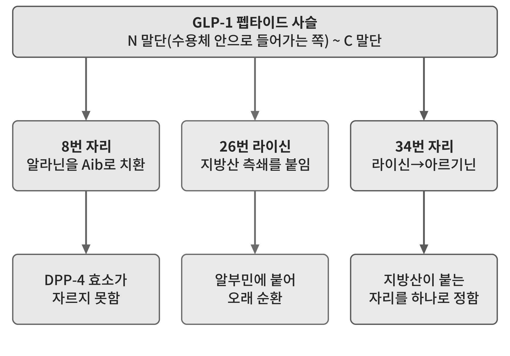
그림 12-1을 읽는 법은 위에서 아래로 한 줄씩 따라가는 것이다. 왼쪽 줄은 8번 자리의 알라닌을 비천연 아미노산 Aib(aminoisobutyric acid, 아미노이소부티르산)로 바꾸는 개조다. Aib는 곁가지가 메틸기 두 개여서 DPP-4의 절단 자리에 맞지 않는다. 가운데 줄은 26번 라이신에 지방산 측쇄를 붙이는 개조로, 지방산이 혈중 알부민에 느슨하게 붙어 신장 여과와 분해를 늦춘다. 오른쪽 줄은 34번 라이신을 아르기닌으로 바꾸어 지방산이 붙을 라이신을 26번 하나로 정하는 개조다(Lau et al., 2015). 세 장치는 각각 분해 회피, 순환 시간 연장, 부위 선택성이라는 서로 다른 문제를 푼다.
이 설계가 얼마나 효과적이었는지는 반감기로 드러난다. 리라글루타이드는 C16 지방산(팔미토일)을 γ-글루타민산 연결자로 붙여 하루 한 번 주사하는 약이 되었고, 세마글루타이드는 더 긴 C18 이산(diacid) 지방산과 더 긴 연결자를 써서 주 1회 약이 되었다(Knudsen & Lau, 2019). 알부민은 혈액 속에 풍부하고 반감기가 길어서, 지방산이 알부민의 지방산 결합 자리에 붙는 힘을 조절하면 약의 체류 시간을 조절할 수 있다는 것이 이 접근의 핵심이다. 다만 알부민에 너무 세게 붙으면 수용체에 닿는 유리 약물이 줄어들므로, 결합력은 효력과 체류 시간 사이의 타협이다.
펩타이드를 먹으면 위산과 소화효소가 분해하고, 장 상피를 통과하기도 어렵다. 경구 세마글루타이드는 이 문제를 SNAC(sodium N-[8-(2-hydroxybenzoyl)amino]caprylate, 소듐 N-[8-(2-하이드록시벤조일)아미노]카프릴레이트)라는 흡수 촉진제와 함께 정제로 만들어 풀었다. 연구에 따르면 이 정제는 위 안에서 국소적으로 pH를 높여 효소 활성을 낮추고, 약물이 위 상피를 가로질러 흡수되도록 돕는다(Buckley et al., 2018). 흡수율은 여전히 낮아서 주사형보다 훨씬 많은 약물을 넣어야 하고, 공복에 소량의 물과 함께 먹어야 하는 복용 조건이 붙는다. 이 제형의 임상 근거는 13장에서, 약동학의 상세는 2권에서 다룬다.
약 설계가 경험적 개조에서 구조 기반 설계로 넘어간 것은 냉동전자현미경(cryo-EM) 덕분이다. 2017년 이후 GLP-1 수용체가 Gs 단백질과 결합한 활성 상태 구조가 연이어 보고되었다(Zhang et al., 2017). 이 구조들이 보여 준 공통된 그림은 그림 12-2와 같다.
그림 12-2. 수용체-리간드 결합 구조의 개념도. 상자는 수용체의 영역과 결합하는 분자를, 화살표는 결합 방향을 나타낸다. 실제 원자 좌표를 그린 것이 아니라 B군 GPCR이 펩타이드와 소분자를 받아들이는 방식을 단순화한 개념도다.
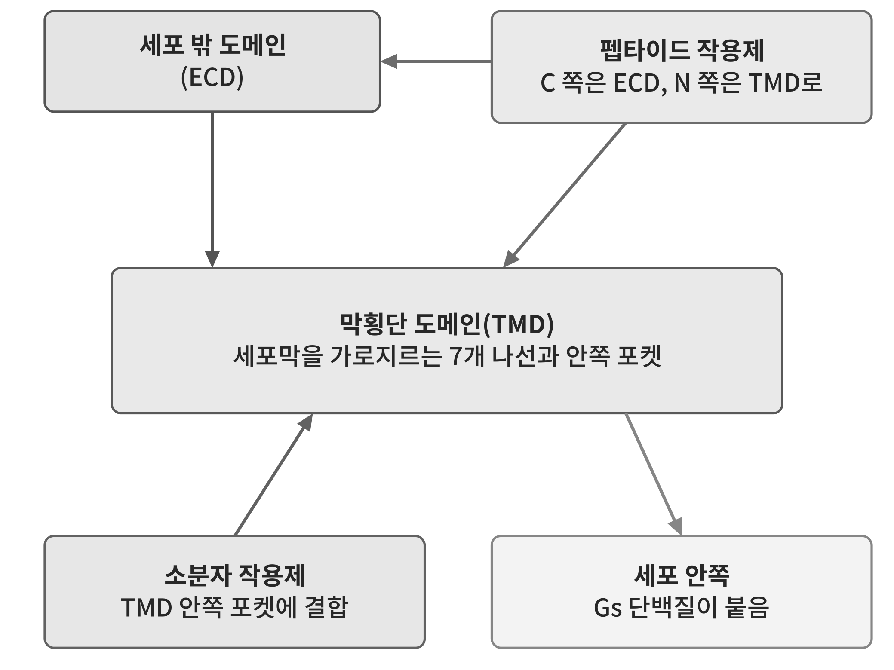
그림 12-2에서 왼쪽 위 상자는 세포 밖 도메인(ECD, extracellular domain)이고, 중앙은 막횡단 도메인(TMD, transmembrane domain)이다. 펩타이드 작용제는 C 말단 쪽이 ECD에 붙고 N 말단 쪽이 TMD 안쪽 깊이 들어가는 두 지점 결합을 한다. 이 N 말단 부분이 수용체를 활성화시키는 부분이다. 그래서 N 말단 8번 자리의 개조는 효소 저항성만이 아니라 수용체 활성화에도 영향을 준다. 이 점에서 설계는 항상 안정성과 활성 사이의 교환을 안고 간다. 아래의 Gs 단백질은 6장에서 본 cAMP 경로의 입구다.
펩타이드는 주사하거나 특수 제형이 필요하다. 먹는 소분자 작용제는 그 부담을 없앨 수 있지만, 큰 펩타이드가 닿던 넓고 얕은 결합면을 작은 분자로 흉내 내기가 어렵다. 구조 연구는 일부 비펩타이드 작용제가 TMD 안쪽의 포켓에 들어가 수용체를 활성화한다는 것을 보였다(Kawai et al., 2020; Zhang et al., 2020). 오포글리프론 등 후보 약물의 개별 설명은 15장에서 한다. 여기서 기억할 점은, 소분자는 펩타이드와 다른 자리에 붙으면서 같은 Gs 신호를 켤 수 있다는 것, 그래서 신호의 편향(어느 하류 경로를 더 켜는가)이 펩타이드와 다를 수 있다는 점이다. 편향이 효능과 부작용에 어떤 차이를 만드는지는 아직 확립되지 않았다.
표 12-1. 약물별 구조 특징 비교. 아래 표는 주요 개조 요소를 정성적으로 정리한 것이다. 세부 수치는 근거 확인 후 보강한다.
| 약물 | 작용 수용체 | 핵심 구조 요소 | 투여 | 설계 의도 |
|---|---|---|---|---|
| 리라글루타이드 | GLP-1R | 34번 Lys→Arg, 26번 Lys에 C16 지방산(γGlu 연결자) | 주사, 1일 1회 | 알부민 결합으로 반감기 연장 |
| 세마글루타이드 | GLP-1R | 8번 Aib, 34번 Arg, 26번 Lys에 C18 이산 지방산 | 주사 주 1회, 경구(SNAC) | DPP-4 저항성과 더 강한 알부민 결합 |
| 티르제파타이드 | GIPR과 GLP-1R | GIP 서열 기반, Aib 치환, C20 이산 지방산 | 주사, 주 1회 | 두 수용체 동시 작용 |
| 오포글리프론 | GLP-1R | 비펩타이드 소분자 | 경구 | TMD 포켓 결합, 펩타이드 제형 부담 제거 |
표 12-1에서 눈여겨볼 것은 지방산 길이와 투여 간격이 함께 늘었다는 점이다. 같은 설계 문법으로 하루 한 번에서 일주일 한 번으로 간 것이다. 반면 소분자는 문법 자체가 다르다. 티르제파타이드가 GLP-1이 아니라 GIP 서열을 바탕으로 했다는 점은 14장에서 다시 다룬다.
Buckley, S. T., Bækdal, T. A., Vegge, A., Maarbjerg, S. J., Pyke, C., Ahnfelt-Rønne, J., Madsen, K. G., Schéele, S. G., Alanentalo, T., Kirk, R. K., Pedersen, B. L., Skyggebjerg, R. B., Benie, A. J., Strauss, H. M., Wahlund, P.-O., Bjerregaard, S., Farkas, E., Fekete, C., Søndergaard, F. L., … Fosgerau, K. (2018). Transcellular stomach absorption of a derivatized glucagon-like peptide-1 receptor agonist. Science Translational Medicine, 10(467), eaar7047.
Holst, J. J. (2007). The physiology of glucagon-like peptide 1. Physiological Reviews, 87(4), 1409–1439.
Kawai, T., Sun, B., Yoshino, H., Feng, D., Suzuki, Y., Fukazawa, M., Nagao, S., Wainscott, D. B., Showalter, A. D., Droz, B. A., Kobilka, T. S., Coghlan, M. P., Willard, F. S., Kawabe, Y., Kobilka, B. K., & Sloop, K. W. (2020). Structural basis for GLP-1 receptor activation by LY3502970, an orally active nonpeptide agonist. Proceedings of the National Academy of Sciences, 117(47), 29959–29967.
Knudsen, L. B., & Lau, J. (2019). The discovery and development of liraglutide and semaglutide. Frontiers in Endocrinology, 10, 155.
Lau, J., Bloch, P., Schäffer, L., Pettersson, I., Spetzler, J., Kofoed, J., Madsen, K., Knudsen, L. B., McGuire, J., Steensgaard, D. B., Strauss, H. M., Gram, D. X., Knudsen, S. M., Nielsen, F. S., Thygesen, P., Reedtz-Runge, S., & Kruse, T. (2015). Discovery of the once-weekly glucagon-like peptide-1 (GLP-1) analogue semaglutide. Journal of Medicinal Chemistry, 58(18), 7370–7380.
Zhang, X., Belousoff, M. J., Zhao, P., Kooistra, A. J., Truong, T. T., Ang, S. Y., Underwood, C. R., Egebjerg, T., Šenel, P., Stewart, G. D., Liang, Y.-L., Glukhova, A., Venugopal, H., Christopoulos, A., Furness, S. G. B., Miller, L. J., Reedtz-Runge, S., Langmead, C. J., Gloriam, D. E., … Wootten, D. (2020). Differential GLP-1R binding and activation by peptide and non-peptide agonists. Molecular Cell, 80(3), 485–500.
Zhang, Y., Sun, B., Feng, D., Hu, H., Chu, M., Qu, Q., Tarrasch, J. T., Li, S., Sun Kobilka, T., Kobilka, B. K., & Skiniotis, G. (2017). Cryo-EM structure of the activated GLP-1 receptor in complex with a G protein. Nature, 546(7657), 248–252.
이 장의 출발점 1~4부는 신호와 수용체, 세포와 유전자, 단백질 구조를 차례로 쌓았다. 5부는 그 지식으로 실제 약물을 하나씩 해부한다. 첫 약물군은 GLP-1 수용체 작용제 가운데 가장 많은 근거가 쌓인 리라글루타이드와 세마글루타이드다. 12장에서 본 설계 장치가 임상에서 어떤 결과로 나타났는지, 그리고 주사를 알약으로 바꾸려는 시도가 어디까지 왔는지를 다룬다. 약동학과 제형의 세부는 2권 17~19장으로 이어진다.
리라글루타이드는 먼저 당뇨병 치료제로 쓰였고, 이후 더 높은 용량(3.0 mg)이 비만 치료제로 승인되었다. 세마글루타이드는 같은 설계 문법을 더 밀어붙여 주 1회 주사를 가능하게 했고, 마지막으로 경구 제형이 뒤를 이었다. 그림 13-1이 이 계보를 한눈에 보여 준다.
그림 13-1. GLP-1 수용체 작용제의 계보. 상자는 약물과 투여 방식을, 화살표는 개발 순서를 나타낸다. 맨 아래 상자는 세 약물이 공유하는 설계 문법이다.
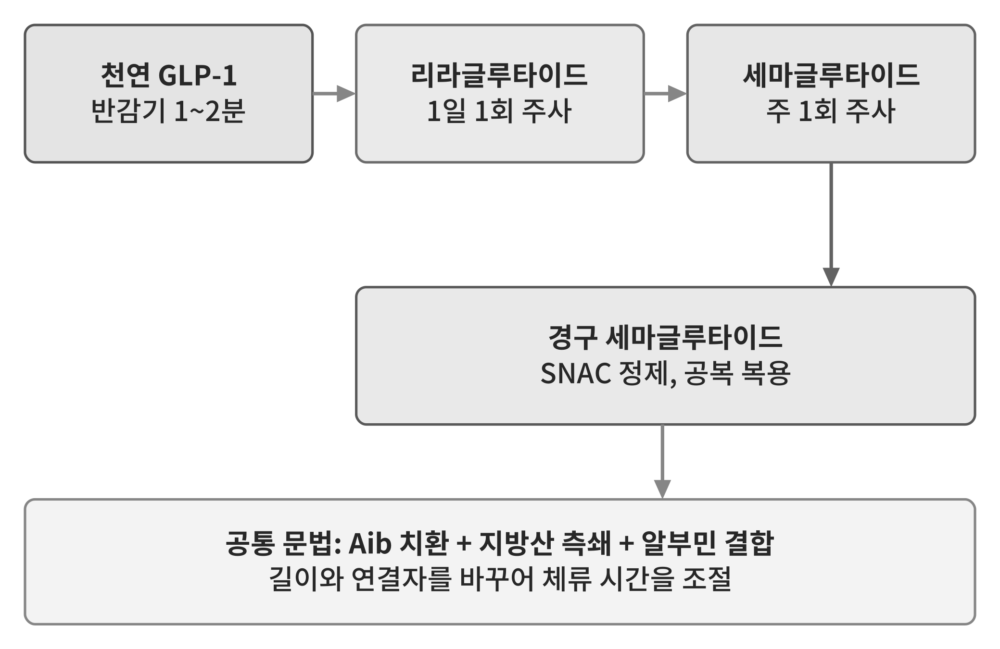
그림 13-1에서 천연 GLP-1에서 리라글루타이드로, 다시 세마글루타이드로 이어지는 화살표는 모두 반감기를 늘리는 방향이다. 아래 상자가 말하듯 세 약물은 Aib 치환, 지방산 측쇄, 알부민 결합이라는 같은 문법을 공유하고, 지방산의 길이와 연결자만 달라진다. 경구 세마글루타이드는 분자는 같고 전달 방식만 바꾼 것이다.
비만 치료제로서의 근거는 대규모 무작위 대조시험에서 나왔다. 리라글루타이드 3.0 mg의 시험(SCALE)에서 56주 평균 체중 감소는 약 8.0%, 위약은 약 2.6%였다(Pi-Sunyer et al., 2015). 세마글루타이드 2.4 mg의 시험(STEP 1)에서는 68주에 평균 14.9%가 줄었고 위약은 2.4%였다(Wilding et al., 2021). 경구 세마글루타이드 50 mg의 시험(OASIS 1)에서는 68주에 평균 15.1%가 줄었다(Knop et al., 2023). 그림 13-2가 이 수치를 나란히 놓았다.
그림 13-2. 주요 시험의 평균 체중 감소율. 막대 길이는 각 시험에서 보고된 평균 체중 감소율(%)에 비례한다. 시험마다 대상자, 기간, 생활습관 중재가 달라 시험 간 직접 비교는 할 수 없다. 경구 시험의 위약군은 표시하지 않았다.
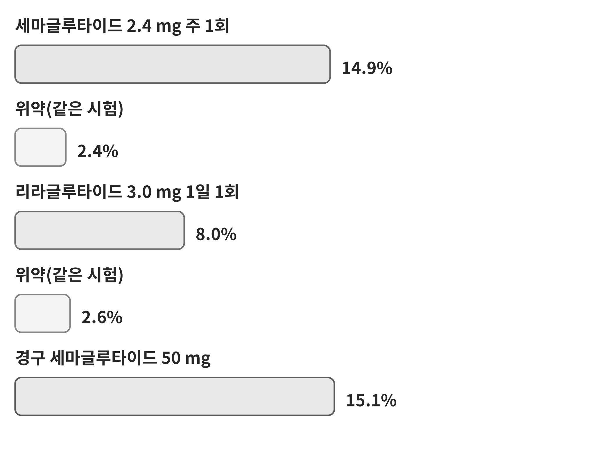
그림 13-2를 읽을 때 가장 중요한 것은 같은 시험 안의 약물과 위약의 차이만이 비교 가능하다는 점이다. 리라글루타이드와 세마글루타이드의 막대 길이 차이는 약물의 차이이기도 하지만 시험 설계와 기간의 차이이기도 하다. 그럼에도 한 방향은 분명하다. 설계가 발전할수록 체중 감소가 커졌고, 경구 제형도 충분한 용량에서는 주사형과 비슷한 수준까지 올라왔다.
체중 이외의 근거도 있다. 비만 또는 과체중이며 심혈관질환이 있고 당뇨병이 없는 환자를 대상으로 한 SELECT 시험에서 세마글루타이드는 주요 심혈관 사건을 위약 대비 약 20% 줄였다(Lincoff et al., 2023). 이 결과는 체중 감소를 넘어 약물이 합병증을 줄일 수 있음을 처음 보인 사례로 평가된다.
12장에서 본 SNAC은 이 경구 제형의 핵심이다. 정제는 위에서 녹아 약물이 위 상피를 통해 흡수되는데, 이 때문에 복용 조건이 까다롭다. 공복에 소량의 물과 함께 먹고 일정 시간 뒤에 음식을 먹어야 한다. 흡수율이 낮아 주사형보다 훨씬 많은 약물이 들어가고, 이는 원가와 개인차의 문제로 이어진다. 개인차의 기전과 해결 방향은 2권에서 다룬다.
표 13-1. 리라글루타이드, 세마글루타이드, 경구 세마글루타이드 비교. 체중 감소율은 위 시험의 보고값이며 시험 간 직접 비교는 불가능하다.
| 항목 | 리라글루타이드 3.0 mg | 세마글루타이드 2.4 mg | 경구 세마글루타이드 50 mg |
|---|---|---|---|
| 투여 | 1일 1회 주사 | 주 1회 주사 | 매일 경구 |
| 대표 시험 | SCALE | STEP 1 | OASIS 1 |
| 평균 체중 감소 | 약 8.0%(56주) | 약 14.9%(68주) | 약 15.1%(68주) |
| 설계 요소 | C16 지방산 | C18 이산 지방산 | 동일 분자 + SNAC |
| 주요 이점 | 오랜 사용 경험 | 주 1회, 심혈관 근거(SELECT) | 주사 부담 제거 |
| 주요 제약 | 매일 주사 | 주사 | 공복 복용, 높은 용량 필요 |
표 13-1을 보면 투여 편의성과 효과가 서로 다른 축에서 개선되었음을 알 수 있다. 주 1회는 순응도를, 경구는 주사 거부감을 해결한다. 다만 경구의 높은 용량 요구는 비용과 흡수 변동성이라는 새로운 비용을 낳는다.
Knop, F. K., Aroda, V. R., do Vale, R. D., Holst-Hansen, T., Laursen, P. N., Rosenstock, J., Rubino, D. M., & Garvey, W. T. (2023). Oral semaglutide 50 mg taken once per day in adults with overweight or obesity (OASIS 1): A randomised, double-blind, placebo-controlled, phase 3 trial. The Lancet, 402(10403), 705–719.
Lincoff, A. M., Brown-Frandsen, K., Colhoun, H. M., Deanfield, J., Emerson, S. S., Esbjerg, S., Hardt-Lindberg, S., Hovingh, G. K., Kahn, S. E., Kushner, R. F., Lingvay, I., Oral, T. K., Michelsen, M. M., Plutzky, J., Tornøe, C. W., & Ryan, D. H. (2023). Semaglutide and cardiovascular outcomes in obesity without diabetes. The New England Journal of Medicine, 389(24), 2221–2232.
Pi-Sunyer, X., Astrup, A., Fujioka, K., Greenway, F., Halpern, A., Krempf, M., Lau, D. C. W., le Roux, C. W., Violante Ortiz, R., Jensen, C. B., & Wilding, J. P. H. (2015). A randomized, controlled trial of 3.0 mg of liraglutide in weight management. The New England Journal of Medicine, 373(1), 11–22.
Wilding, J. P. H., Batterham, R. L., Calanna, S., Davies, M., Van Gaal, L. F., Lingvay, I., McGowan, B. M., Rosenstock, J., Tran, M. T. D., Wadden, T. A., Wharton, S., Yokote, K., Zeuthen, N., & Kushner, R. F. (2021). Once-weekly semaglutide in adults with overweight or obesity. The New England Journal of Medicine, 384(11), 989–1002.